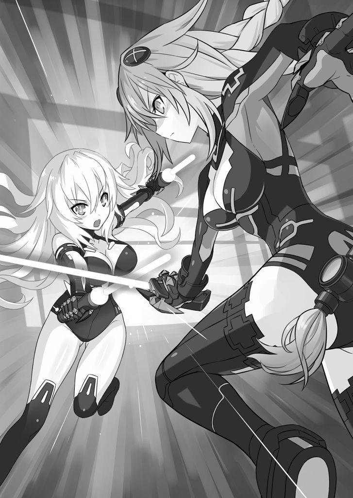
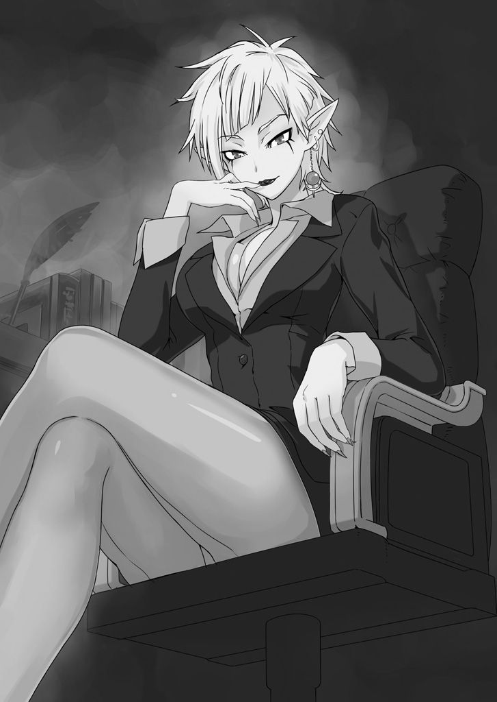
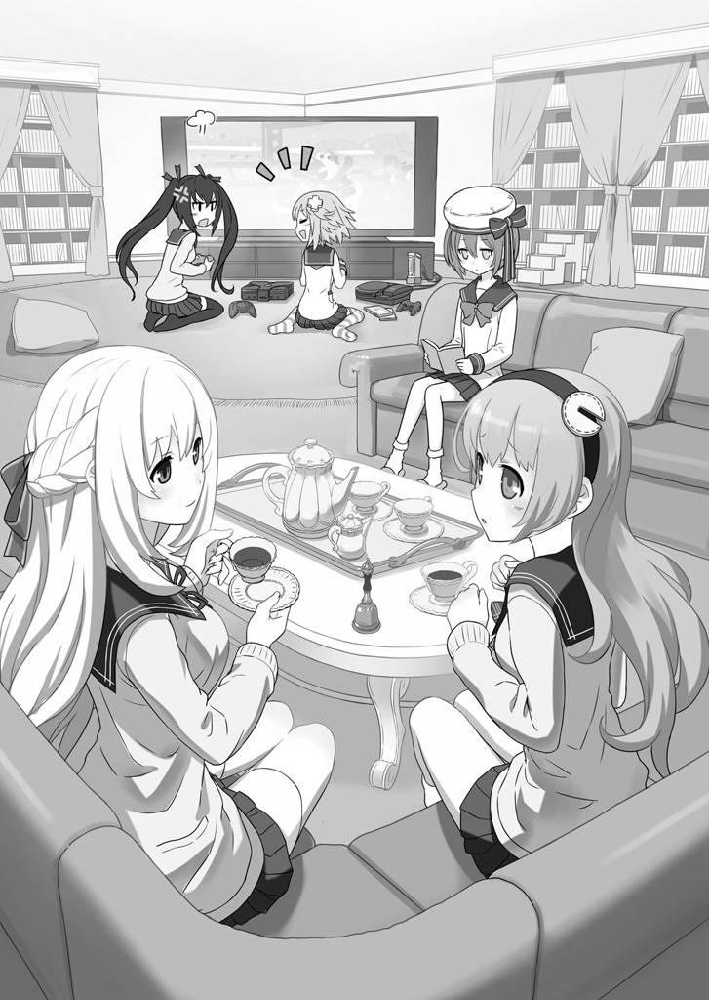
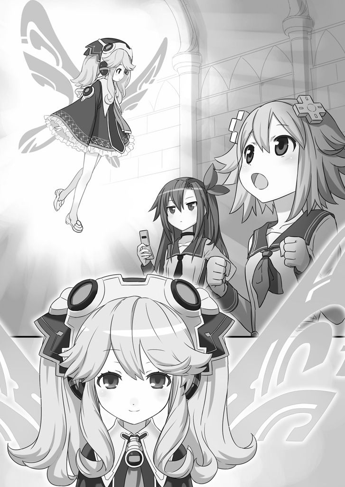
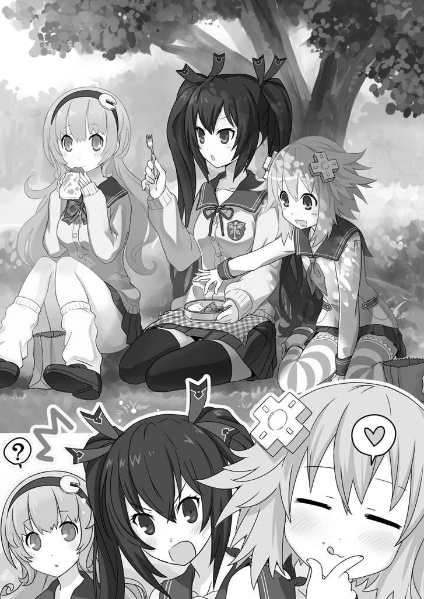
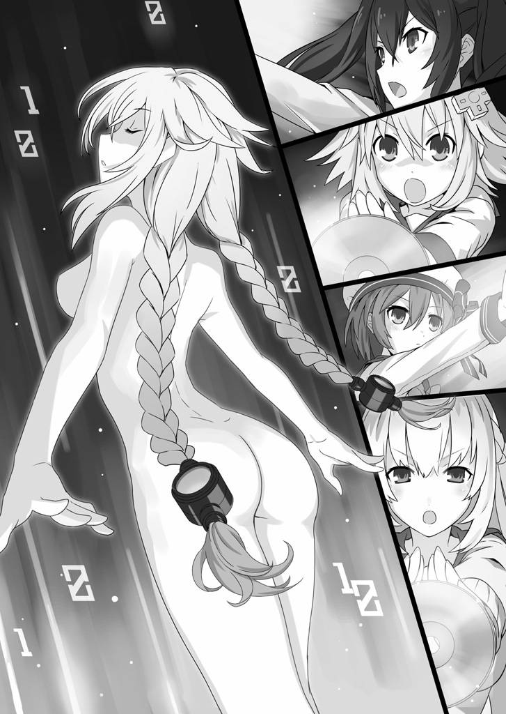

| 桜ノ杜ぶんこ 超次元ゲイム ネプテューヌ はいすくーる1 | |
| おかず | |
| (2012) | |
桜ノ杜ぶんこ
超次元ゲイムネプテューヌ はいすくーる
おかず

ロゴ表示終わり
「 却 下 」
彼 女 が放ったのは、冷たい 表 情 に 似 つかわしい、冷たい一言だった。
「ひ、一言で却下と 仰 いましても学長......」
「お前の意見はどうでもいいんだ。 聴 いてない。聴く必要もない。そもそも、この 件 について、 私 がいつお前に発言を 許 した？」
「し、しかしですね......さすがに全予算の二〇パーセントを 削 減 となりますと、学園の 運 営 にも 支 障 が......」
「話を聞いてたの？ お前に発言は、許してないんだ！」
「お、お待ちを！ せめて来期からということに......」
秘 書 ......というより、小間使いのつもりで 雇 って半年目。これまで 全 てにおいて「イエス」としか言わないようにしつけてきたつもりだが、どうもまだまだ 甘 かったらしい。
彼 女 は、コンマ一秒でこの 無 能 者の秘書を切る 算 段 を付けつつ、自分に課すことができる最大の 忍 耐 をもって、もう一度だけ口を開くことにした。
「思い出しな。 私 が、お前に許した発言は、一種類のはずだ。ほれ、言ってごらん」
秘書の顔を下から 睨 めあげるように見て、彼女は言った。
「......イ、イエス......です」
目を合わせた 瞬 間 、顔中から冷たい 汗 を 噴 き 出 した秘書が、かすれた声で答えた。もう一度だけと決めたとおり、彼女は無言でゆっくりとうなずく。
「し、失礼します」
秘書が、油の切れた機械のような 強 ばった動作で 退 出 した。
無感動にそれを見送り、彼女は自分のデスクの上にある 一 枚 の写真を手に取った。
写真には、 一 人 の少女が写っていた。
少女は、実に 屈 託 の無い 笑 顔 で写真に 収 まっている。それが、彼女にとっては 無 性 に 腹 立 たしい。
わざと 派 手 な音を立てて写真を 握 りつぶし、彼女はこれもデスクに置かれていた 灰 皿 の中に 放 り 込 むと、パチンと小さく指を鳴らした。
瞬間、写真は音もなく 燃 え 上 がる。
ゆらゆらと 揺 れるその小さな火が消え、写真が白い 灰 となって 燃 え 尽 きるまで、彼女は 黙 ったままじっとその様子を見つめ続けていた。
オープニングムービー
Ｂボタンが 欲 しいときって、あるよね？
どんなときかって、具体的に言うと......そりゃ、速く走りたいとき。
ビーダッシュだよ、ビーダッシュ。 基 本 でしょ。
道に一マス 間 隔 で 穴 ぼこが空いてても、お 構 いなしで 突 き進めるんだよ？ よくない？
......あー、じゃあアレでもいいや。 超 音 速 で丸まって 突 っ 込 むぜ的なの。
わたし、 髪 短めだし、ちょっとこう先っちょツンツンって 跳 ね 返 ってるんだ。だから、 割 とキャライメージ的にはアリなんじゃないかなーって思うんだよね。
「関係ないね！」
なんてクールにキメながら、超音速でかっ飛ばせるなら、むしろビーダッシュよりレベル高いかもしれない。
それもダメって言うんだったら......そうだ！ カブトムシ型のマシンをいじったら周りが止まって見えるぐらいの超高速で動けるとかさ。
同じ流れでより今っぽい感じなら、チーターのメダルをベルトに突っ込んだら、変な歌が聞こえてくるとかさ。
奥 歯 をカチッと 噛 んだら......っていうのは、ちょっと古いか。
とにかく！ 今よりほんのちょっとでも速く走れれば、もうほんと何でもいいですっていうのが、今のわたしの 心 境 。
入学式に 遅 刻 さえしなければ。
......。
いやー、 我 ながらベタっていうか、お約束っていうか。「百回見たわ！」っていうオープニングでゴメンね～って感じなんだけど、いざ 実 際 にお約束をかましてる身としては、周りの 評 価 とか気にしてる 余 裕 無いんだよね。
しかも、どーでもいいような 普 通 の朝ならともかく、入学式だよ？ 入学式。
新生活の第一歩が遅刻から始まるっていうのも、コメディーとしたらもう 常 套 手 段 ではあるんだけど、それは 傍 から見ているから笑っていられるわけで、やっぱり当事者にはなりたくないじゃん？ って、メタ的なアレを 匂 わせてのモノローグっていうのも、ラノベやゲーム（特にノベルゲームね！） 界 隈 では百回見た演出だよねー。こういう展開見せられると、何だろうねー、もう物語のパターンっていうのは、本当に 出 尽 くしているのかもしれないなんてことも 脳 裏 によぎったり、よぎらなかったり。そもそもさ......えぷっ。
......やば、 余 計 なことばっかり話してたら、息切れてきちゃった。
一気に 干 上 がり度ＭＡＸまでメーターを 振 り 切 ってしまった 喉 の 奥 から、
「へえ......ひい......はあ......」
と、 情 けない声というか息というか、そんなようなものを 吐 き 出 しながら、わたしはひたすら学校目指して走り続けている。
ああそうだ、後回しにするのも意味無いし、まだもうちょっとだけ 余 裕 あるうちに、軽く 自 己 紹 介 しておくね。
わたし、ネプテューヌ。どこにでもいる 普 通 の美少女。 趣 味 は、ゲームかな。
特 技 は、変身！
今日 から「イストワール記念学園」で、楽しい青春学園ライフを 満 喫 する......予定。
頭の中では色んな楽しい計画を練ってるんだけど、すべては入学式に間に合ったらの話。間に合わなかったら、予定は全部 水 の 泡 。
「あの子、入学式に 遅 刻 したんですって。ぷー、くすくす......」
てな感じで、イジワルな女子グループにいきなり後ろ指さされて、教室の 廊 下 側 の一番後ろの 隅 っこで小さくなって 震 える未来が待ってそう。
それは、さすがに 嫌 。
だから、わたしは走るの！ 学校を目指して！ 輝 く未来のために！
と、気合いは入れてみるものの、残念ながらビーダッシュも使えなければ、 超 音 速 で丸くなれもしないか弱い美少女の身。できることはといえば、ぐっと歯を食いしばって 腕 を振り、気持ちだけでもスピードアップをはかることぐらい。
でも、そんな 涙 ぐましい努力の 甲 斐 あって、体中を 汗 まみれにして走ること十分ぐらい、
「見えてきたー！」
半分以上かすんだ 視 界 の先に、ついに目指すイストワール記念学園の校門が！
良かった。まだ校門の 柵 は 閉 められてないみたい！
それを 確 認 して、わたしが最後の力を 振 り 絞 ったその時、
「ねぷねぷー！ 急いでくださいですー！」
向こうから、わたしを 呼 ぶ声が風に乗って聞こえてきた。あ、「ねぷねぷ」っていうのは、わたしのあだ名ね。ついでにいうと、そのあだ名でわたしのことを呼ぶのは、思い当たるところでは、 一 人 だけしかいない。
「こんぱー！ お待たせー！」
そのたった 一 人 に向かって、わたしも声を 張 り 上 げた。
目をこすって 視 界 をシャッキリさせてから見れば、校門の 脇 で大きく手を 振 っている女の子── 友 達 のこんぱの 姿 が 確 かに見える。
こんぱとわたしは、いわゆるルームメイトってやつ。こんぱの方が、わたしよりも少しお 姉 さんなんだけど、一番の仲良しなんだ。
その仲良しさんと 一 緒 の学校を受験して、一緒の学校に通う約束をしたんだよね。
「入学式の日には、せーので一緒に校門をくぐるです。約束ですよ？ ねぷねぷ」
「うん！ 約束だからね！」
これも、良くあるっていえば良くある、他愛も無い約束。だけど、大切な約束。
こんぱ、ちゃんと待っててくれたんだ。わたしが来なかったら、自分も 遅 刻 しちゃうかもしれないのに。うう、目からも 汗 が出ちゃいそう。
「ギリギリセーフ......だよね？」
こんぱの前でようやく足を止めたわたしは、 両 膝 に手をついて息を整えながら言った。
「よ、良かったですー！ わたし、心配してたですよ。新入生さんたち、みんなどんどん学校に入っていくのに、ねぷねぷ全然来ないから......。もしかして、悪い 宇 宙 人 さんにアブダクションでもされちゃったのかと......」
あ、あぶだく......。
こんぱってば、心配のあまり 妄 想 が 飛 躍 しすぎちゃってるみたい。
まるで生き別れになった家族と 再 会 でもしたかっていう 勢 いで、半分泣きながらわたしを 抱 きしめてくる。わたしが、全身 汗 だくの 濡 れ 濡 れなのも、全然気にしてないみたい。
でも、ここまで親身になって心配してくれるのは、ちょっと 嬉 しいかな。反面、 遅 刻 しそうになった理由のしょうもなさ 加 減 に少し 申 し 訳 なくなっちゃう。わたし的には、色々あったんだよと説明したいところではあるんだけど......。
どうせなら、本当にアブダクションでも何でもされてあげたら良かったのかもと思いかけ、いやいやそれは無いわと、わたしは首を 振 った。
「ほらほら、こんぱ。もう泣きやもう？ 約束通り、 二 人 一 緒 に『せーの』で校門くぐるんでしょ？」
こんぱの 涙 目 を、服の 袖 でちょいちょいとぬぐってあげながら、わたしは言った。
「泣いちゃったのは、ねぷねぷのせいです。後でちゃんと、 謝 ってもらうですよ！」
その手を取ったこんぱが、そのままわたしの頭に手を 押 し 付 けるようにして、
「めっ！ です」
こつん、とやった。
で、その後もう一度しっかりとわたしの手を 握 って言った。
「......さあ、行くですよねぷねぷ。わたしたちの入学式です」
「うん、行こう！」
わたしとこんぱは、手を 繋 いだまま、約束通りに「せーの」で一緒に校門をくぐった。
「入学おめでとうです！ ねぷねぷ！」
「入学おめでとう！ こんぱ！」
お 互 いに言って、ひしっと 抱 き 合 うわたしたち。
やー、これはこれで中々感動的な光景じゃない？ ビーダッシュがどうこう言ってた時は、どうなることかと思ったけど。
後は、まぁそれなりに 神 妙 な顔つきをして入学式に 臨 むのみ！ 終われば、今度こそ本当に楽しい青春学園ライフのスタートだよ！
ほんのちょっと前まで 水 の 泡 になりかけていた計画の数々が、きらびやかに 復 活 してくるビジュアルを頭の中に見たわたしは、そのままこんぱとじゃれあいながら、 校 舎 へと続く道を歩いて行く。
と、
「そうだ、ねぷねぷ、ひとつ聞いてもいいですか？」
何かを思いだしたようにこんぱがたずねてきた。
「ん？ なぁに？」
軽く答えて、こんぱを見るわたし。
こんぱはといえば、わたしを頭からつま先まで、じじじ～っと 眺 めたかと思うと、
「ねぷねぷ、どうして入学式なのに...... 制 服 着てないですか？」
割 とあっさり、さっきの感動を台無しにしてくれる一言をぶっつけてきた。
Ⅰ
入学式は、すごーくあっさりと終わった。
それはもう、参加しているこっちが 呆 気 に取られるぐらいにあっさりと。
アナウンスと同時に、式場（多分、体育館かな？）に入ると、そこには 椅 子 も何にも無し。決められた位置に 並 べられたら、「学長」って 呼 ばれたスーツのおばさんが 一 段 高い台の上に 現 れて、ちょっと 挨 拶 。
挨拶の 内 容 も、「入学おめでとう」の一言すら無くって、最初から最後まで紙に書いてあることをそのまま読みましたみたいな。
あとは、 担 任 になるらしい先生に連れられて式場を出て......それで、おしまい。
入学式っていったら、学校行事の中では 結 構 重要なものなんじゃないの 普 通 ？ わたしは、学校に行くこと自体初めてだから本当のところは良く分からないんだけど、何だか 前 にこんぱから聞かされてたようなのとは、全然 違 った。
「まずは、きっと 吹 奏 楽 部とか 管 弦 楽 部の 先 輩 たちが 演 奏 する 素 敵 な曲に合わせて、きれいに 飾 り 付 けられた入学式場に入場するです」
演奏なんて無かったし。
「 在 校 生 の 皆 さんが、大きな 拍 手 で 出 迎 えてくれてですね......」
わたしたちと、学長っておばさん......後は、しかめっ 面 で会場の 隅 に 並 んでる先生たちぐらいしかいなかったし。
気になって、式の間中ずっとこんぱの方を見ていたんだけど、こんぱも何だか「こんなはずじゃないんですぅ」って顔してた。
首をかしげながら、式場を出るときに配られた案内図に 従 って教室に 到 着 。
こんぱと 一 緒 のクラスになれたのは 素 直 に 嬉 しいんだけど、何だかなぁ。
しかも担任の先生は、プリントだかを取ってくるとかいって、あいさつもそこそこに教室を出て行っちゃった。
で、特にすることも無くなっちゃったわたしは、
「入学式ってさ、あんな感じなの？ こんぱから聞いた話とは、だいぶ違ったような」
と、式の間ずーっと聞きたかった 質 問 をこんぱに投げてみた。
「ち、ち、 違 うです！ あんなのは......あんなのは、正しい入学式じゃないです！」
想 像 通り、顔を 真 っ 赤 にして力説するこんぱ。
それじゃ、 他 のみんなはどんな風に思ってるんだろう？ 気になったわたしは、一番 窓 際 にある自分の席からぐるっと教室を見回してみた。
まず、ぱっと目に入ってきたのが、ちょうど反対側の 廊 下 に近い席に 陣 取 ってる 一 団 。
男の子 一 人 と女の子数人のグループなんだけど、元々お 友 達 同士なのかな？ 楽しそうにお 喋 りしながら、カードゲームで遊んでいた。
時々、グループの中でも目立っている女の子が、
「悪いね～。おじさん、 今日 は 絶 好 調 みたい」
本当におじさんみたいな口調で、テンション高く話す声が聞こえてくる。
見た感じ、あんまり入学式のことは引きずってないみたい。
わたしは、 彼 女 たちから目を 離 して、また教室内を目でぐるっと一回り。
次に目に入ったのも、やっぱり仲良しグループっぽく見える数人で、こちらは全員メガネをかけているのが印象的なんだけど、それ以上に気になったのが、
（......何あのテレビ）
どこからどうやって 持 ち 込 んできたのか、ちょっと古くさい感じのするブラウン管のテレビを、メガネ 集 団 全員でのぞき 込 んでいたこと。
それだけでもかなり意味不明なところに輪をかけているのが、そのテレビ、わたしが見た 限 りでは、どう見ても 電 源 切れてるんだよね。その何も 映 ってない画面を、全員が 真 剣 な顔で見ている光景っていうのは、どうなのかな......。
ともかく、あの人たちにとってはその「マックラテレビ」の方が、入学式のアレコレよりも重要なのは 間 違 いなさそう。
「......ねー、こんぱ。あんまりみんな、入学式のことなんか気にしてないみたいだよ？ って言うか、本当は、あのぐらいサラッと終わるのが 普 通 だったりするとか？」
観察を終えたわたしは、こんぱに向かって言った。
こんぱは、まだ全然 納 得 していない様子で、
「わたしが前に通っていた学校は、 違 ったんです。本当です」
握 った右手で、わたしの 肩 をポコポコ 叩 きながら 訴 えてくる。「そう言われてもなー」と、わたしが指でほっぺをかきながらこんぱの訴えを聞いていると、
「あれが今の学長の 方 針 なのよ」
わたしのすぐ前の席から、声がした。
見ると、 倚 子 の 背 もたれに 肘 を乗っけてもたれかかるようにして、一人の女の子がわたしたちの方を向いている。
栗 色 のサラッとした長い 髪 の 毛 をした子だった。その髪の 一 房 だけを頭の横で 結 って流していて、根元の部分を 飾 っている 双 葉 のリボンが 可愛 いらしい。
「はろー」
その 双 葉 リボンの女の子が、 片 手 を挙げて言った。
「は、はろー」
つられてわたしも、同じように手を挙げて返す。
「悪かったわね、急に声かけて。何だか、入学式のことで面食らってるみたいだったから」
そんなわたしを見て、 唇 の 端 っこをちょこっとだけ持ち上げて笑う双葉リボンちゃん。
「学長さんの 方 針 って......どういうことなんですか？」
と、入学式の 件 について気になりっぱなしのこんぱが、ずいっと身を乗り出して双葉リボンちゃんにたずねた。
「入学式で 喋 ってたおばさん、あれが学長なのは知ってるでしょ？ マジェコンヌっていうんだけど、あの人が学長に 就 任 してからずっとあんな感じよ。とにかくイベント事にお金も手間もかけないようにしてるのよ」
「そ、そうなんですか......」
「本人は、 無 駄 な 経 費 を 削 減 するため......なんて言ってるけどね。 私 だって、何でも 派 手 にすりゃいいとは思わないけど、学長もちょっとやりすぎだと思うわ。あんなんじゃ 味 気 なさすぎて、何の思い出にも残らないわよね」
こんぱの目をまっすぐ見つめて、双葉リボンちゃんは言った。
「そうです！ その通りです！ 思い出作りは大切ですよ！」
やっと味方がキター！ って 展 開 に、こんぱは鼻息も 荒 く同意する。
「なーんか、つまんない人だねー学長さんって。......あ、でもでもー、みんなはそれで 納 得 しちゃってるわけ？ ぱっと見た感じ、 結 構 みんな 普 通 にしちゃってるって言うか、受け入れちゃってるって言うか」
と、わたし。
双葉リボンちゃんは、「ああ」とうなずいてから、
「 昨日 今日 のことじゃないしねぇ。このクラスは、結構エスカレーターで進学してきてるのが多いのよ。あんたたちみたいに、外から来た子の方が少ないからそう見えるだけ。多分、 隣 のクラスなんかじゃ 今 頃 もっと 戸 惑 ってるんじゃないかしら」
こともなげに言う。
話を聞いてる感じ、だいぶクールな 性 格 だね、この双葉リボンちゃんは。
そんなことをわたしが思っていると、
「さっきあんたが、ジロジロ見てたあのカードゲーマーたちもそう。特に、おっさんみたいな話し方をしてたあの子、あれでも軍人とかそっち方面に進むコースの天才さんよ。ウワサじゃ、 特 殊 部隊からもスカウトが来てるって話だけど、本人はああやって遊んでるのが楽しいからって 断 っちゃったとか」
わざわざ、気になってたことを 丁 寧 に 解 説 してくれた。
「......それじゃ、あっちのテレビくんたちも？」
だったらついでにと思って、重ねて聞いてみるわたし。
「あっちもあっちで、その 筋 では 結 構 有名。学科は 普 通 科 だけど、前に世間を 騒 がせた連続殺人 事 件 を、みんなで協力して 解 決 しちゃったとか」
双 葉 リボンちゃんの解説は、こっちもスラスラと 淀 みない感じ。
「へ～、ずいぶん 詳 しいんだ。 週 刊 誌 とかの〝 事 情 通 〟 みたい！ ......えーっと」
「アイエフ。 私 の名前」
おおっと、今度はもっと早くわたしの聞きたかったことを先回り。
「あいえふ、かぁ。じゃあ、あいちゃんだね」
「あ、あいちゃん!? 」
「うん、あいちゃん。......ねぇねぇ、あいちゃん。もしかして、わたしたちのことも、よ～くご 存 じだったりしちゃうの？」
「初対面で、なれなれしい 呼 び 方 しないでくれる？」
「いいから、いいから。で？ どうなの？ 〝 事情通〟 のあいちゃん」
わたしの 質 問 に、「双葉リボンちゃん」改め、あいちゃんは、わたしとこんぱの顔を何回か 見 比 べるようにしたあと、なぜか「ふーっ」とひとつため息をついてから言った。
「......そっちの、ふわっとピンクちゃんが、 看 護 学科のコンパさん。で、なれなれしいあんたは......ネプテューヌよね」
おお、すごい！ ピタリ的中！
わたしとこんぱは、お 互 いに目を丸くして顔を見合わせる。
「あいちゃんさん、すごいです。もしかして、 占 い学科とか？」
「それともやっぱり、〝 消 息 筋 〟 とか〝 業界関係者〟 ？ 週刊誌記者養成科？」
「何でどっちも、 微 妙 にアヤシゲな学科なのよ。占い 師 養成科も、週刊誌記者養成科もこの学校に無いわよ」
「......無いんだ」
じゃあ、どうしてこんなに〝 首 相 側近〟 みたいに色々 詳 しいんだろ？ 次々に 湧 いてくる質問に、わたしがまたまた口を開きかけた時だった。
ぺっと 伸 びてきたあいちゃんの手が、それを 遮 る。
「はい、一回ストップ。あんたたちばっかり 質 問 するなんて、フェアじゃないでしょ。 私 からも質問させなさいよ」
......あー、 確 かにそれはごもっともかも。
「ご、ごめんなさいです。あいちゃんさん。いきなりズケズケ色々聞いちゃって」
こんぱが、ぺこりと頭を下げて 謝 った。
「その『あいちゃんさん』ってのも、どう考えても変だからやめて。......まぁ、これは後でまたキッチリ話すことにして、質問いい？」
「いいよ、いいよ。何でも聞いちゃって！」
「じゃ、 遠 慮 無 く。......アンタどうして 制 服 じゃなくて 私 服 なの？」
「......」
「......」
ほう、そこを聞いちゃうんだ。わたしたちが、この学校を受験する前は何してた～とか、そういうことじゃなくて、そこ行っちゃうわけですか。ズバッと。前置き無しに。
一 応 このお話ってさ、まことに 恐 縮 ながら、わたしの語りで進んでいくわけじゃない？ だからさ、うまいこと 黙 ってたら 一 個 前のチャプターの 内 容 なんか、そのうちみんな 忘 れてくれるんじゃないかなと思って、そっちに注意がいかないようにしてたのに......。
「入学式の時からずーっと気になってたのよね、 一 人 だけ 私 服 の子がいるって。私だけじゃなくて、周りの子もチラチラ見てたし」
うああ......。最悪すぎるでしょ、その光景は。
わたしは、頭を 抱 えて 机 に 突 っ 伏 した。その 姿 勢 で、もだもだと身をよじってみたりなんかして、「そこんとこは、そっとしといてもらえませんかね？」的オーラを全開にしてみるも、全然お 構 いなしに、
「人が 秘 密 にしてることを聞き出すのって、 面 白 いわよね」
ひひっ、という 悪 魔 の笑いとともに、あいちゃんの声が頭の上から 降 ってくる。
「うう、初対面の何も知らない同士でそういうこと聞いちゃう子なんだ、あいちゃん」
「初対面の何も知らない同士で、人のことを『あいちゃん』 呼 ばわりする子には、ちょうどいい質問だと思って」
くふう、泣き落としも通じないとは......。あいちゃん、 怖 い子。
「...... 寝 ぼけてたんだよぅ。 誰 だって、そういうことあるでしょ？」
もごもごっと口の中で転がすようにわたしは言った。
「......無いわよ」
あいちゃんは、わたしの気持ちを思いやるなんてことは思いもつかない様子でバッサリと 斬 って 捨 てる。
「やっぱり 寝 坊 だったですね。だからわたし、 昨日 は早く寝るように言ったです」
更 に追い打ち。こんぱ参戦。
「あんまりしょうもない理由だと、聞いたこっちが 恥 ずかしくなるのね」
おでこに指を当てて、ふるふると首を 振 ったあいちゃんが言った。
ううう......そこまで言う？ だから、うやむやのまんまフェードアウトさせちゃいたかったのに。
あいちゃんとこんぱ、 二 人 の何とも言えない 生 暖 かい 視 線 に 耐 えかねて、わたしは 机 に 突 っ 伏 した。
と、
「やっと会えたわね、ネプテューヌ！」
不意に声が聞こえてきた。
あいちゃんのクールボイスとも、こんぱのぽややんボイスとも 違 う、やけに 挑 戦 的 で 引 き 締 まった声。
え？ と、顔を上げると、そこにいたのは、また別の女の子。
ツインテールに 結 った、黒くて長い 髪 の 毛 の先が、ちょうどわたしの鼻先をくすぐるように 揺 れている。
「わあ、このタイミングで新キャラ？」
驚 いたわたしは、がばっと身を起こしてその女の子の顔を見る。と、あいちゃんが、
「あなた 確 か......」
新キャラツインテールちゃんに声をかけた。そこで、その新キャラツインテールちゃん、さっきあいちゃんがわたしにしたように手であいちゃんの言葉を 遮 る。
「ごめんなさい。 私 、このネプテューヌって子に大事な話があるの」
「大事な話？」
あいちゃんが聞き返すと、ツインテールちゃんは、小さく「そうよ」とうなずいた。
「さっき、名前が聞こえたから......どうやら、 間 違 いないみたいね。まさか同じクラスになるとは思わなかったわ、ネプテューヌ」
そして、やけに 芝 居 がかった仕草でさっと一度長い 黒 髪 を手で 払 うようにしてから、わたしをビシッと指さして言う。
「ねぷねぷ、この人とお知り合いなんですか？」
うろたえた様子のこんぱが、わたしの 背 中 に 隠 れるようにしながら耳打ちしてきた。
「え、えーっとぉ......どこかで......会ったことあるっけ？」
「とぼけても 無 駄 よ、ネプテューヌ。あの時の......そう、 私 の運命を変えた入学試験、 忘 れたとは言わせないわ！」
「入学試験......」
大急ぎで 過 去 の 記 憶 を 探 し 始 めるわたし。入学試験なんて言われても、もう三ヶ月以上前の話だし......何か......何かあったっけ？ しかも、人様の運命を変えちゃうような出来事なんて......。
「ちょ、ちょ、ちょーっと待っててね！」
さすがにそんな出来事があれば、いくらわたしのおつむが少々 容 量 不足気味でも覚えてるはずだけど......。
入学試験......入学試験かぁ。
Ⅱ
わたしは、「イストワール記念学園」を受験するために、 一 人 で受験会場にいた。
ほんとは、こんぱについてきてもらいたかったんだけど、ちょーっとそういうわけにはいかない 事 情 があったもんで。
こんぱは、イストワール記念学園を受験する前も別の学校に 通 ってて、 将 来 は 立 派 な 看 護 師 さんになるのを目標に毎日お勉強を続けてた。
で、そこの先生に、イストワール記念学園の看護師養成科を受けてみたらどうかって 勧 められて、 寝 る 間 も 惜 しんでの 猛 勉 強 の末に見事に入学試験をパスできたと。
一方のわたしはっていうと......正直、それまで学校ってところに通ったことなかったし、何より通うためにはどうしたらいいのかも分からなかった。
実はわたしってば、こんぱと 一 緒 に 暮 らすようになる前の記憶が、これっぽっちも無いの。それまで、どこでどーやって生活してたんだか、さっぱり覚えてなかったりする。
こんぱが言うには、ある日、
「空から流れ星みたいにぴゅーって、わたしの家の前に 降 ってきたんです」
......っていうことらしいの。
流れ星って、自分のことながらちょっと信じられないというか、どこからツッコんでいいのやらって感じなんだけど、とにかくその時のことも 含 めて覚えてないもんはどうしようもない。こんぱは、 嘘 つくような子じゃないから、まぁ言うとおりなんでしょうと。
とにかく、何もかも 忘 れちゃって 困 り 果 てたわたしに、こんぱはとっても親切にしてくれた。
「行くところが無いなら、わたしと 一 緒 に 暮 らしたらいいです。 困 っている人は、放っておけないです。ね？ そうするです。ネピュテュ......ネプトゥヌ......さん」
「あははは。 呼 びにくいよね、わたしの名前。こんぱが、呼びやすいように呼んでいいよ」
「じゃ、じゃあ〝 ねぷねぷ〟 って呼ぶことにするです。......改めて言うですけど、ここでわたしと一緒に暮らしたらいいです。お 部 屋 なら、 余 ってるですよ」
たった一つだけ、わたしが覚えていたのは自分の名前。それを、 舌 を 噛 み 噛 み呼びながら、こんぱは 笑 顔 でわたしのことを受け入れてくれた。
それからしばらく、わたしはこんぱと一緒に仲良く暮らしてたってわけ。
そんなある日、こんぱが、入学するのを楽しみにしていたイストワール記念学園のパンフレットを 眺 めて、ずーっとため息ばっかりついてたの。
気になって聞いてみたら、
なんでも、新入生の学費が次の年度から 値 上 げになることが決まったって 連 絡 が 突 然 届 いたとか。
学費については、アルバイトで何とかしようと思ってたところにこの仕打ち。値上げは 結 構 厳 しくて、アルバイトを 増 やすぐらいじゃどうにもならないみたいだった。
「せっかく入学試験には受かっても......これじゃ 通 えないです。残念ですけど、進学は 諦 めるです」
「そんな！ こんぱ、あんなに毎日勉強してたのに！ 何か......何か良い方法があるはずだって！」
気付くとわたしは、こんぱの手からパンフレットをひったくっていた。
うまくしたら、学費 半 額 とか、そういう風にできる方法が 載 ってるんじゃないか......そんなことを考えてパンフレットをめくると、ぱさっと手元に落ちてくる物が。
一通の 封 筒 だった。パンフの間に 挟 まってたのね。
と、何の気なしにその 封 筒 を取り上げたわたしは、そこでピタッと 硬 直 してしまった。封筒には、
『一芸入試と、パートナーシップ入学 制 度 （学費 免 除 制度）のお知らせ』
と書かれていたの。
「学費免除制度!? 」
驚 いたわたしは、その一文を指さしながらこんぱに封筒を 突 きつけた。
こんぱは、「ああ、それは......」と、わたしから封筒を受け取って言った。
「これは関係無いんです。イストワール記念学園には、ずば 抜 けた 凄 い 特 技 や 才 能 を持っている人を無料で勉強させてくれて、ついでにその人がパートナーとして選んだ人が 一 緒 に入学した場合、学費を 半 額 にしてくれる 制 度 があるみたいなんですけど......わたしは、 普 通 の入学試験でしたから」
次の 瞬 間 、わたしは 叫 んじゃっていた。
「いやいやいや！ 全然関係無くないよ！ これ、一発 逆 転 の大チャンスだよ！」
「も、もう一回入学試験を受けるってことですか？ ......無理ですぅ。わたし、そんな特技も才能も無いですよぅ」
「 違 うって！ 試験を受けるのは......わたし！」
ばん、と自分の 胸 を 叩 いてわたしは言った。
状 況 を良く 飲 み 込 めてないっぽいこんぱが、目をぱちぱちさせてわたしを見た。
「わたしが、この一芸入試ってやつを受けるよ。それで 合 格 したら、こんぱをパートナーに選ぶ！ そしたら、こんぱも学校に行くの 諦 めないで 済 むでしょ？」
「ね、ねぷねぷが!? 」
「そ。わたしもさ、前からちょっと学校って所には 興 味 あったんだぁ。こんぱ、毎日楽しそうに 通 ってたしさ。ね？ どう？ この作戦は」
「そ、それは......もし、ねぷねぷと 一 緒 に同じ学校に通えるなら...... 嬉 しいです。すごく、すごく嬉しいです！」
「じゃあ決まり！ わたしも一緒に、学校行く！」
わたしは、高らかに 宣 言 した。
こんぱには、地面に 突 き 刺 さってた......らしいところを助けてもらってから、何ヶ月もお世話になってることだし、ここはいっちょ 恩 返 しの意味も込めて、ね。
「でも......どんな特技を見てもらうですか？ ちょっとゲームが得意です～ぐらいの特技じゃ、とても入学させてもらえないと思うです」
「 大 丈 夫 だって。こんぱも知ってるじゃん、わたしのとっておきのスゴ 技 。あれ見せたら、 絶 対 に興味持ってもらえるよ！」
こんぱの説明によれば、 披 露 する特技は、スポーツでも、絵の 上 手 さでも、料理でも、何でもいいらしい。とにかく、試験官に、
「この才能はウチで 伸 ばしてやらなければ！」
と思わせたら勝ち。
だったら一つだけ、わたしには、すんごい特技がある。 他 の 誰 にも 真 似 できないだろうっていう、ほんとにほんとにとっておきの大技だ。
それを、わたしやこんぱは、「変身」って 呼 んでいた。
どうしてそんなことができるのか、わたしにもさーっぱり理由が分からないんだけど、わたしは、文字通り自分の 姿 を変えられるの。
背 も 伸 びて、おっぱいも大きく育って......って、そこはまぁともかくとして、変身したわたしは、これもどういう理由なんだか、めちゃくちゃ強くなっちゃうのよね。
その強さってば、自分でもびっくりのチート 性 能 。住んでる街の近くに 出 没 したモンスター 退 治 も朝飯前だし、 銃 とかロケットランチャーとかでハリネズミみたいに 武 装 した銀行 強 盗 をとっ 捕 まえたことだってあるんだから。
この 特 技 を 披 露 すれば、たとえば 冒 険 者 とか、軍隊だとか、そういう方面に進める学科に入学できるかもしれない。そうしたら、こんぱと 一 緒 に学園生活を送れる！
「わたし、めちゃめちゃ 冴 えてるうっ！ コレ、 完 璧 な作戦だと思わない？」
自 画 自 賛 。
そこまで説明して、わたしがウンウンとうなずくと、
「本当に完璧です！ ねぷねぷ、ありがとうですーっ！」
目をぱちぱちから、うるうるに変えたこんぱが、わたしに 抱 きついてきた。
「おわっちゃちゃ！ 急に抱きつかないでってば。こんぱのおっぱい大きいんだから、息、息できないよぉ」
......とまぁ、そんなわけで試験当日。
わたしは、ご近所中に 響 き 渡 るような「ねぷねぷ、 頑 張 るですよー！」というこんぱの 声 援 を受けて試験会場に向かい、そこで 担 当 の試験官さんに大きな声で 宣 言 した。
「受験番号、７０８３１番、ネプテューヌです！ 見せる特技は......変身でーす！」
その時、わたしと 一 緒 に受験した人たちってのが、これまた 強 烈 なのばっかり。
「目からビームが出せる」とか、「何も無い所にタッチペンでマッピングできる」とか。
中には、「カードデッキからモンスターを 召 喚 できて、その上で 人 格 が二つある」とか、えらい 欲 張 りな特技（......だよね？）の持ち主もいて、こりゃどうなることかと思ったんだけど、わたしの変身も 結 構 試験官さんたちのハートはつかめたみたいで、
「ネプテューヌさん、だったね。ぜひもっと 詳 しく君の特技を見せてもらいたい。別の場所でもう一度、いいかな？」
その中の 一 人 が、鼻息もフンフンと 荒 っぽく話しかけてきた。
もちろん、お 断 りする理由なんか無いわけで、言われるがままにその「別の場所」とやらに連れて行かれた。
それが、つい三十分ぐらい前の話。
今、わたしがいる場所は、ずいぶんと 天 井 の高いドーム 状 の建物で、中はがらんどう。
つやつやと光るタイルっぽいのが 床 一面に 敷 き 詰 められてて、建物の 四 隅 に一つずつテレビカメラみたいな物が置かれてた。
他 に目立つ物は特に見当たらない。出入り口と照明ぐらい。
体育館？ の 割 には、少し 狭 いようにも思うけど......そんなことを考えていると、
「待たせて 申 し 訳 ない」
後ろから声が聞こえて、わたしは 振 り 返 った。
そこに立ってたのは、さっきわたしに話しかけてきた試験官さんと、もう 一 人 。
銀色の長い 髪 がさらさらっとなびく、女の子だった。
この子も、受験生なのかな？
「 紹 介 しよう。 彼 女 の名前は、ノワール。 我 がイストワール記念学園中等部、 女 神 候 補 養成科のエースだ」
首をかしげるわたしに、試験官さんが、さらさら 銀 髪 の女の子を紹介した。
「は、はぁ......。よろしく？ でいいの？」
受験生じゃ、ないんだ。
んん？ 何がどうなってるんだろ。ちょっと話が見えなくて、わたしは首を右に左にかっくんかっくん。
「 詳 しくは、後ほど説明しよう。とにかく今は、君のその力をもう少し 確 かめさせてもらいたい。方法は、 簡 単 だ。今から君には、こちらのノワール君と戦ってもらう」
「た、戦う!? ......あ、スポーツとか？」
「バカね。戦うっていうのは、そのままの意味。この場で、 私 と本気で戦ってもらうってことよ」
わたしの 疑 問 に答えたのは、試験官さんではなく、ノワールって名前らしい女の子の方だった。
それにしても、戦うってことは、つまり 蹴 ったり 殴 ったりって、あの戦うでしょ？ 何で入学試験でそんな......。
「この場所の様子は、そこのカメラによって別室の試験官たちにもモニターされている。ここでノワール君と戦い、 我 々 が君の実力を 認 めれば、君をこの学園に 迎 えよう。どうかな？ ネプテューヌ君」
試験官さんが、言った。
わたしとしては、見ず知らずの女の子と戦えって言われると正直面食らっちゃうんですけど......でもなー、ここで 断 っちゃうとなー。
「試験官さん、ちょっと聞いてもいい？」
「何かね？」
「もし入学させてもらえるってなった時の、学費のことなんだけど......。パートナー 割 引 だっけ？ あれ、本当？」
「もちろん、本当だ。君の学費は 全 額 免 除 。 更 に、君がパートナーとして 我 々 に 推 薦 したい者がいれば、その人物の分は 半 額 。 間 違 いなく、 保 証 する」
......そう、ですかー。
だったら、しゃーないか。これがわたしの 恩 返 し。やるっきゃない。
わたしは、うなずいた。
「分かった。やるよ、わたし。変身して、この子と戦えばいいんだね？」
言って、わたしは目を 閉 じ、大きく息を 吸 い 込 んだ。
「それじゃ行くよ......へんしーんっ！」
意 識 を集中してから 叫 ぶ。
同時に、 胸 の 奥 がカーッと熱くなってきて、 普 段 はそこに 閉 じ 込 められてる何か──パワー？ エネルギー？ チャクラ？ 波 紋 ？──自分でもどう 表 現 していいか分からない何かが開放され、わたしの全身に満ちていく。
変身するときは、いっつもこの感覚。気を 抜 くと、その感覚に 呑 まれて意識をもってかれちゃいそうになるのをぐっとこらえていると、ある時 突 然 、すーっと頭の中がクリアになってくる。
次に来るのが、体の変化。 視 界 が急に高くなり、世界の見え方が少しだけ変わる。
自分で言うのもなんだけど、 控 えめだった 胸 は形良く 膨 らみ、 腰 は 滑 らかにくびれ、同時に体中の 筋 肉 がぎゅっと 引 き 締 まるのが分かる。
ざわざわっとした 違 和 感 が 首 筋 に走ったかと思うと、まるで二本の 螺 旋 を 描 くように、 編 み 込 んだ 後 ろ 髪 が腰の辺りまで 伸 びてくる。
それまで着ていた服が光る 粒 子 になって消え去り、代わりに全身を 包 み 込 むのは、体全体に 張 り 付 くようにぴっちりとフィットした黒と 紫 のコスチュームだ。
そして......。
「......待たせたわね。いつでも、いいわよ」
落ちかかってくる 前 髪 を、 頑 丈 な 手 甲 に包まれた指先で 払 い、わたしは言った。
「その 姿 ......コスチューム......なるほど、口から 出 任 せってわけじゃないようね。それにしても、さっきまでとずいぶん 雰 囲 気 が 違 うじゃない。 女 神 化の 影 響 で、あなたみたいに、目つきから口ぶりから何もかもがガラッと変わる子、初めて見たわ」
そんなわたしを 鋭 い 眼 差 しで 射 貫 いたまま、ノワールが口を開く。
「こんぱにも...... 友 達 にも、よく言われるわ。でも、今はそんなことを話している場合じゃないんじゃない？ 戦わなきゃいけないんでしょう？ わたしたち」
「......ええ、そうよ。あなたはこれから、わたしと戦って...... 倒 されるの」
薄 い笑いを 浮 かべたノワールが、わたしに気持ちを残したまま、
「 武 器 をお願いします」
脇 で 控 えている試験官に向かって言った。
「武器は、 模 擬 戦用の物を使ってもらう。 幾 つかこちらで用意した。 二 人 とも、好きな物を取りたまえ」
そう言って、試験官が手に持っていたスイッチのようなものを 操 作 すると、向かい合うわたしとノワールの間に 割 って入るように、タイルの 床 が開いて、下から幾つもの武器が 吊 され、立てかけられたラックがせり上がってくる。
手に取って 確 かめてみるとそれらの武器は、急所にある一定の強さで当てるとセンサーが 反 応 し、光と 振 動 でヒットを 確 認 できる仕組みになっているみたいだった。
（家にある体感ゲームのコントローラーみたいなものね......）
何種類も用意された中から、わたしが選んだのはいわゆる 長 剣 タイプ。
ノワールは、短めの剣を二本手に取っていた。どうやら、二刀流で来るつもりらしい。
わたしたちは、特に言葉を 交 わすことも無く、武器を手にしたまま 再 び向かい合う。
「試合時間は、五分。 攻 撃 が、相手の手首や 心 臓 、首などの急所にヒットしたと 判 断 された時点で決着とする。では......両者正々堂々と全力を 尽 くすように。はじめ！」
試験官の声が合図になって、試合は始まった！
「でやああああっ！」
試合開始と同時に、ノワールが気合いのこもった 雄 叫 びを上げて 突 っ 込 んできた。
姿 勢 を低くして、二本の剣を地面に 擦 らせるような 軌 道 で 振 り 上 げてくる。
「──ッ！」
わたしは、 斜 めに自分の剣を打ち下ろしてその攻撃を受け流そうとしたのだが、ノワールは右手の剣一本でわたしの剣を受け止め、自由な左手で横一文字にわたしの 眉 間 を 狙 ってきた。
引くか、 押 すか......。
（引いたら間に合わない！）

ノワールの右手を 封 じている自分の 剣 を 軸 に、ノワールの側面へ 回 り 込 むつもりでわたしは頭を下げて体全体を前へと 押 し 込 む。
ノワールが 払 った剣が、 一 瞬 前までわたしの頭があった空間を 切 り 裂 く音がした。わたしの 額 を 捉 えられなかったことで、わずかに 彼 女 の体が泳ぐ。 見 逃 さず、わたしは 肩 と肩をぶっつけるように 渾 身 の力で 更 に 押 し 込 む。
（このまま一気に 体 勢 を 崩 して......）
「させない！」
だけど、わたしの 狙 いなどお見通しとばかりにノワールが 叫 び、 振 り 抜 いた左手の剣の 勢 いを止めずに 振 り 切 ってきた。わたしの頭があった場所を 越 え、落下に転じた 剣 先 が地面に 突 き 立 ち、ぐるりと側転するような 格 好 になるノワール。
ぶつかった肩と肩が 擦 り合わさって 滑 り、結局お 互 いに体を 入 れ 替 えるようにして、わたしたちは 再 び向かい合った。
「...... 凄 い」
こんな体さばきを見せる人間、これまで会ったことない。 家 畜 を 襲 うモンスターとか、その辺のギャングなんかとは 比 べものにならない。
わたしが、 素 直 にその気持ちをつぶやくと、
「当たり前でしょ。 私 が今まで、どれだけの訓練を積んできたと思ってるのよ。...... 自然発現 だか何だか知らないけど、そんなおとぎ話みたいな人に！」
キッと 目 尻 をつり上げたノワールは、さっきの 突 進 を上回るスピードで 再 び 突 っ 込 んできた。
「負けるわけにはいかないのよ！」
嵐 のような連続 攻 撃 が、 襲 いかかってきた。ノワールは、二本の 剣 をまるで自分の 腕 のように 自 在 に 操 り、上下左右から 間 断 の無い 斬 撃 を 繰 り 出 してくる。
刃 の無い試合用の 武 器 だと分かっていても、 一 撃 でも食らえば死んでしまうのではないかと思うほどに、 全 ての攻撃に殺気がみなぎっている。
「本気で 倒 しに来てる......ただの 模 擬 戦じゃないの？」
さっき初めて出会ったばかりの人間に、どうしてこうも 敵 意 を向けられるのか......少し 疑 問 に思ったけれど、ここで一方的に打ち負かされれば、こんぱとの約束が果たせなくなってしまう。
「......だったら、あなたに 恨 みは無いけど！」
わたしも、手を 抜 くわけにはいかなかった。全力で 彼 女 の攻撃を受け、 隙 あらばこちらからも 攻 めかかる。
今度は、アクロバティックな動きは無し。 互 いにその場を一歩も引かない斬撃の 応 酬 になった。
「このっ！ 生意気に私の攻撃についてくるっていうの！」
「こっちも、 友 達 との大事な約束が 懸 かってるの！ 悪いけど、手は 抜 けない！」
「上等！ だったら、 更 にスピードを上げるまでよ！」
「食らいつくわ！ 絶 対 に！」
一体、どれほどの時間打ち合っていたのかわからない。五分間ってこんなにも長く感じるものだったのか......。
このままじゃ、 埒 があかない。こうなったら、いちかばちか！
わたしは、更に 勢 いを 増 すノワールの攻撃を受け流す手をわずかに、ほんのわずかに 緩 めて、半歩だけ後ろに下がった。
「ここまでのようね！」
わたしが下がったのを 見 抜 いたノワールが、もう 一 段 スピードを上げてくる。
（かかった！）
わたしは、ノワールの 呼 吸 に合わせて、今度は大きく一歩、ぽーんとその場を 飛 び 退 いた。
「あっ！」
狙 い通り、一気にわたしを 仕 留 めにきたノワールは、大きく前につんのめる。本当にトップギアに入っていたのだろう、それまでわたしが受け止めていた 斬 撃 の 勢 いがノワールの上半身を 引 っ 張 り、こちらに 倒 れ 込 んでくる。
「しまった！ 同じ手に！」
「ここで決めるわ！」
千 載 一 遇 ！ わたしは、引いた勢いで 腰 だめにしていた 剣 を、全身のバネで一気に前へと 押 し 出 した。この 軌 道 なら、 心 臓 の位置に 直 撃 する！ 勝てる！
「 絶 対 にさせない！」
だけど、ノワールの 粘 りも 凄 まじかった。倒れ込みながらも、右手の剣をわたしの 首 筋 めがけて放り投げて来たのだ。
わたしは、ギリギリでそれを 避 けるべく首をひねる。が、そのせいで剣の 軌 道 がわずかに 狂 ってしまった。これでは、心臓に 届 かない。
結果、ノワールの投げつけた剣はわたしの首筋をかすめるように 通 り 過 ぎ、わたしの 突 き 出 した剣は、ノワールの心臓ではなく左の 肩 口 に当たった。
同時に、わたしたちはもつれあうようにして地面に転がった。
「そこまで！」
制 止 の声がかかったのは、その 瞬 間 だった。
（終わった......の？）
倒れたまま、ぼんやりとわたしは思った。
勝った......んだろうか？ 本物の剣だったら、わたしの 一 撃 はノワールの肩を深々と 貫 いたかもしれないが、ルールから言えば肩は急所じゃない。
一方、ノワールの投げた剣はわたしの首をかすめている。皮 一 枚 、というところにも思えたが、 判 定 は 微 妙 なところだ。
「待ってください先生！ まだ決着は付いていません！」
ノワールも同じようなことを考えていたみたいで、ばっと 跳 ね 起 きたかと思うと、試合を止めた試験官に 抗 議 の言葉を浴びせた。
まだ......続くのかしら？ だけど、正直もう...... 限 界 ......。
何しろ、今までわたし、こんなに長い時間......しかも 極 限 まで集中した 状 態 で......変身......していた......こと......なくって......。
ノワールと試験官のやり取りが、その後もいくらか続いていたようだったけれど、わたしの 意 識 は、そこでぷっつりと 途 切 れてしまった。
Ⅲ
「まさか、あなたがあの時のノワールだったなんて......。いやー、わたし、ぜんっぜん気がつかなかったよー」
手元のオレンジジュースを、ずずずいっとストローで 吸 い 上 げてから、わたしは言った。
「あの時は、 女 神 化前の 姿 をあなたには見せていなかったから。......それにしても、本当に変身してる時と全然印象 違 うわね」
向かい合わせに 座 ったノワールも、コーラの入ったグラスを 引 き 寄 せて言う。
ノワールがグラスに 直 接 口をつけてコーラを一口飲んだ時だった。
盛 大 に鼻をかむ音が辺りに 響 き 渡 る。
「ちょ、ちょっとぉ。飲み物飲んでる時に、そういうのやめてくれるかしら？」
「ご、ごめんなざいでずぅ。ちょっと、ねぷねぷがわたしのために試験を受けてくれるって言ってくれた時のこと、思い出しちゃってぇ......」
音の 発 生 源 は、こんぱ。
「ああ、ほらほら 泣 き 止 んで。どうして、こんぱはすぐそうやって、めそめそモードになっちゃうかなぁ。 涙 が飲み物に入っちゃってるよ」
ノワールの、ただでさえキリリッとした目つきが、 更 にキリキリキリッぐらいになっちゃったのを見て、わたしは 慌 ててこんぱにハンカチを差し出した。
ちなみに、こんぱが 頼 んだのは、お 砂 糖 と生クリームたっぷりの 甘 ～いミルクラテ。......なんだけど、このままじゃ、しょっぱくなっちゃいそう。
「ねぷねぷ......改めて、ありがとうですうぅっ！ ねぷねぷのおかげで、わたし......わたし......」
「あーもう、この間その話はおしまいって言ってたよね。わたしだって、学校に行ってみたかったのは本当なんだから、おあいこ、おあいこ。ね？」
こりゃ、しばらく落ち着くまで時間かかっちゃうなぁ。
わたしは、 片 手 でこんぱの涙を 拭 いてあげながら、もう 片 方 の手はノワールに向けて「ゴメンのポーズ」を 繰 り 返 した。
ノワールは、「仕方ないわね」という 表 情 でこんぱを見てから、ごくごくとコーラをやっつけにかかる。
そこへ、
「ほい、ポテトフライと 唐 揚 げ 棒 にピザまん、お待ちどおさま。わざわざパシってあげたんだから、 感 謝 しなさいよね」
ほかほかと湯気の立っているお皿を乗せたトレイを 抱 えたあいちゃんが、わたしたちの 座 るテーブル席に 戻 ってきた。
「......って、 戻 ってきたら何でコンパが泣いてるわけ？」
あはは、まぁ色々ありまして。笑ってごまかすわたし。
おっと、そうだ。今の 状 況 をちょっと説明しないとダメだね。
まず、わたしたちが今いるのは、学校の中庭（と言っても、その辺にある自然公園なんかよりもずっと広いんだけど）にある、学生用のカフェテリア。
きれいに 整 備 された 芝 生 の中に建っている、 可愛 らしいレンガ 造 りの建物で、学生だったら 誰 でも自由に利用できるんだって。
あいちゃんに聞いたら、 他 にもこういう場所が学校のあっちこっちにあって、放課後や休み時間にはいつも 賑 わってるとか。 凄 いね、イストワール記念学園は。
で、今はお 昼 過 ぎ。 混 んでる時間帯なんだけど、そこもあいちゃんが手早く席を 確 保 してくれて、みんなでお話する場を作ってくれた。できる子だね、あいちゃんは。
じつはあの時教室で、ノワールに、
「ここで会ったが百年目！」
みたいなことを言われた後、わたしがしばらく頭を 抱 えて 記 憶 をたどっていたら、先生が 戻 ってきちゃってさぁ、うやむやになっちゃったんだよねぇ。
何だか 奥 歯 に野菜のスジが 挟 まったみたいにモヤモヤした気分のまま、先生から学校生活における注意だとか、今後のスケジュールだとかの話を聞いて、 学 生 証 や教科書なんかを受け取って......。あーこれは、 明日 に引きずっちゃう流れかなと思ってたら、
「 私 、気になることが残ったまんまって 嫌 なのよね。 今日 はこれで終わりだから、時間があるならさっきの話の続きしましょ」
って、あいちゃんからのご 提 案 が。「言い出しっぺだから 責 任 持つわ」なんて言うあいちゃんに連れられて、このカフェテリアに場所を 移 したってわけ。
わたしもわたしで、先生のお話もそこそこにずーっと入学試験の時のことを考えてて、やっと思い出したのが、ノワールって子と試合をさせられたこと。
わたし、あの後完全に気を失っちゃって、気付いたら 医 務 室 のベッドで 寝 てたもんだから、イマイチ 現 実 感 が 湧 いてなかったんだよねぇ。
それもあって、どこからどう話したらいいものやらって思いあまった 挙 げ 句 、結局、わたしの身の上から、どうしてこの学校を受けようと思ったのかといういきさつから、ぜ～んぶ説明することに。
その結果分かったことが、わたしと試合をした 銀 髪 の女の子──ノワールと、目の前にいる真っ黒 髪 の 毛 のツインテールちゃんが、同一人物だったってこと。
「あの試合の相手が入学してくるんだったら、どうしてももう一度会って、きちんと決着をつけたかったのよ。あの日から、ネプテューヌっていう名前、一秒たりとも 忘 れたことはなかったわ」
髪の色は変わっても、言いながらわたしを見る、ブスブス 刺 さってくるような目の力は 一 緒 で、わたしも 彼 女 が同じ子なんだってことを 否 応 なしに実感。ついでに、もんのすごい 負 けず 嫌 いってことも、そこで分かった。
「でも、決着って言われてもなぁ......」
わたしとしては、無事に入学できたわけだし？ そんな、 倒 すの倒されるのなんていうギスギスした関係よりは、せっかく 縁 があって同じクラスになれたんだから、仲良しになりたいなって思う。
それをどうやって伝えようか考えていたところで......お 腹 の 虫 が鳴き出しちゃった。
「あいちゃん、お腹すいた」
「話飛びすぎでしょアンタ......。それと、その 呼 び 方 は、 柄 じゃないからやめて」
「えー。連れないこと言うのナシー。あいちゃんが聞きたいって言うから、色々話してあげたんだしさー」
「それとこれとは、話が別。何か食べ物おごってあげるから、『あいちゃん』もナシよ」
「え？ ホント？ ラッキー！」
そんなやり取りがあって、あいちゃんが食べ物を注文するために席を立ったところで、それまで一言も口を 挟 まずにじーっと話を聞いていたこんぱが、 突 然 、
「だから、わたしがこうしてお勉強できるのは、ねぷねぷのおかげなんですう！」
震 える声でしゃくりあげたかと思うと、しょびしょびと泣きべそかきはじめちゃった。
「それにしても......ネプ子がこの学校を受けたのが、そんな理由だったとはね」
ようやくわたしがこんぱを落ち着かせた 頃 、あいちゃんが言った。
ていうか、『ネプ子』っていうのは、もしかしてわたしのあだ名？
「聞けばなかなか、美談じゃない。 友 達 の学費を 肩 代 わりしてあげるために 一 肌 脱 ぐなんて。ノワールも、その心意気に 免 じて 見 逃 してあげたら？」
ノワールの 隣 にちょんと 座 り 直 し、テーブルの上で 山 盛 りになっているポテトフライを 適 当 につまんでモシャモシャしながら、あいちゃんは続ける。
「そ、そうはいかないわ！ た、 確 かに......ちょっといい話だなとは思ったけど......」
空っぽになったコーラのカップを、タン、とテーブルに 叩 きつけるように置いて、ノワールが言った。
「プライドが 許 さないってこと？ ま、 女 神 候 補 養成科中等部の 成 績 トップだった 秀 才 さんとしては、外から来た何だか 素 性 の良く分からない子と引き分けたままじゃ 納 得 いかないっていうのは、分からないでもないけど」
「だった、って 過 去 形 はやめてちょうだい。 私 は、高等部でも首席を 誰 かに 譲 る気は、これっぽっちも無いわよ」
またまたキリキリお目々になって、ノワールがあいちゃんを見た。
「私に 突 っかからないの。あなたのお相手は、こっち」
あいちゃんは、特に気にする様子もなく、ポテトの油でテラッている指をわたしに向けて答える。と、すぐにノワールのキリキリお目々がわたしの方を向いた。
......いや、だからわたしは、決着がどうこうなんて気は無いんだってば。
困 っちゃったなぁ、どうも。
かといって、 無 視 するわけにもいかないので、
「へー、ノワールって 優 等 生 なんだ。じゃあじゃあ、テストの時とか助けてもらっちゃおうかな。わたし、お勉強はちょっとニガテだからさ」
わたしは、全開のスマイルをノワールに向けた。
ところが、
「よくもぬけぬけと......。言ったでしょう？ 私は、あなたと決着をつけたいの。それがどうして、同じ学科のライバルを助けるようなマネをしないといけないの？」
「同じ......学科？ わたしと、ノワールが？」
「 他 に誰がいるのよ。自分がどうして入学できたのか 忘 れたわけ？」
それは、ノワールと戦って引き分けたから。わたしの 特 技 を試験官さんが 認 めてくれたからで......え？ つまりそれって、そういうことなの？
わたしは、さっき教室でもらったばかりの真新しい 学 生 証 をポケットから取り出して、改めてじっくり見てみることにした。
学生証は、 光 沢 のある 半 透 明 のカードになっていて、まず目につくのが 笑 顔 のわたしの写真。その横に名前、それに 所 属 している学科名がプリントされている。
名前、「ネプテューヌ」。うん、これはいい。
所属、「イストワール記念学園・高等部一年Ａ組・女神候補養成科」。
「......おおう!? 」
あらー、書いてある書いてある。ばっちり書いてあるよ、「女神候補養成科」って。
し、知らなかった......。わたし、てっきり 普 通 科 に入学したものだとばっかり。
「す、すごいですよ、ねぷねぷ！ ねぷねぷは、 女 神 様 候 補 に選ばれるかもしれないってことです！ びっくりです！」
「わあ、こんぱ！ 突 然 復 活 ？」
急に耳元でこんぱの大声が 響 いて、わたしは 学 生 証 を落っことしそうになる。
「あ、 呆 れた！ あなた、自分が何学科に入学したのかも知らなかったの!? 」
「 想 像 以上のお 馬 鹿 さんだったみたいね......。これは、この先ちょっと苦労するかも」
テーブルの向こうにいる人たちには、思いっきりバカにされてるみたいだけど、そこは軽く 無 視 しておくとして、
「ねえ、こんぱ。それでこの女神候補養成科っていうのは、何の勉強をする学科なの？ 何でわたし、すごいの？」
わたしは、学生証に大きく書いてある学科名を指で 弾 きながら、こんぱにたずねた。
瞬 間 、今度はテーブルの向こう側で、どんがらがっしゃんと 盛 大 にずっこける音がした。
「こんな子に......こんな何も分かってないような子を相手に 私 は......私は！ これはもう、 絶 対 に！ 何が何でも！ こってんぱんの、ぎっちょんぎっちょんにやっつけなきゃ気が 済 まない！ ......ネプテューヌ！」
ノワールが、テーブルから身を乗り出すようにしてわたしをにらみつけてきた。長いツインテールが、 逆 立 ちしそうな 勢 い。
「は、はい？」
「 今日 から私は、すべてにおいてあなたを上回ってみせるわ！ 勉強も！ スポーツも！ 何もかも！ それを、よ～く覚えておいて！」
「ど、どうしてそうなっちゃうの？ 勝つとか負けるとか、そういうのやめとこうよー。わたしは、ノワールとも仲良くしていきたいんだけど......」
「お 断 りだわ。もう勝負は始まってるの。まず手始めに、 再 来 週 の新入生 歓 迎 スポーツ大会で最初の一勝を挙げさせてもらうから。それまで、せめて女神候補になるっていうことがどれだけ大変で、重要なことかぐらいは 理 解 しておきなさい」
聞く耳持たず。まさに、そんな言葉のとおりに、ノワールはわたしに向かって一方的すぎる 宣 戦 布 告 をすると、そのまま自分の荷物を持って席を立ってしまった。
「あ、ちょっと！ ピザまん 頼 んだの、ノワールだよ。食べないのー？」
「......あげるわ。それも 唐 揚 げ 棒 も食べて、おデブちゃんになって、スポーツ大会で無様な 姿 をさらしたらいいのよ」
あ、ほんとに？ もらっていいんだ。じゃ、 遠 慮 無 く。
わたしは、ノワールが残していったピザまんを手にとって一口。
ノワールは、そんなわたしをじーっと見つめている。
「......」
「な、何？ もう食べちゃったよ。 今 更 返しては、ナシだからね？」
「言わないわよ！」
結局、最後までキリキリお目々を 崩 すことなく、ノワールは行ってしまった。
負 けず 嫌 いな上に、ちょっと 怒 りっぽい子なのかな？
「ねぷねぷ、いいんですか？」
ノワールが去った後、少し心配そうに、こんぱがわたしの 肩 を 揺 すってきた。
「うーん......ま、 明日 から同じクラスで毎日顔を合わせるんだし。 大 丈 夫 、ちょっとずつ仲良くなれるって」
「そこまでお気楽だと、一種の 才 能 ねもう」
と、こちらは自分のポテトフライをひとつ残らずきれいに食べ終わったあいちゃん。
「......さて、ちょっと予定とは 違 っちゃったけど、 私 も大体聞きたいことは聞けたから、 今日 はこれで帰るわ」
お 行 儀 悪く指先についてる塩をなめ取ってから、言う。
「予定って？」
「ああ、こっちの話よ。......あ、そうだ。私の方は、別にネプ子やこんぱと 張 り 合 おうなんて気は無いから心配しないで。ま、それなりに仲良くやっていきましょ」
「はい！ よろしくお願いしますです、あいちゃんさん」
「だから、『あいちゃんさん』はナシなの！」
「そうだよ、こんぱ。ちゃんの後に、さん付けは変だよ。『あいちゃん』だけでいいんだってば。......ね？」
「とことん人の話聞かない子ね......。『あいちゃん』もナシ......だけど、まぁいいわ。大目に見てあげる。どうも 退 屈 そうで気乗りしなかったけど、ネプ子相手なら 面 白 いことになりそうだし、ここはトレードオフってことで」
「おお、何だか 難 しい言葉を！」
「じゃあ、改めてよろしくです......あいちゃん！」
「はいはい」
最後に残った 唐 揚 げ 棒 をわたしの手に 押 し 付 けて、あいちゃんも席を立った。空のトレイは、そのまま 片 付 けてくれるつもりらしい。
「それじゃ、また明日。......そうだ、 余 計 なお世話かもしれないけど、自分の通う学科についてぐらいは、明日までに調べておきなさいよ」
「あー、うん。そうするー」
言われて、わたしは 一 応 素 直 にうなずいた。わたし的には、こんぱたちと楽しく学校に通えればそれで 万 事 オッケーなのに変わりはないけど、ノワールの 態 度 のことも気になるところ。ちょっとだけ、だけど。
「それから、 制 服 はちゃんと着て来なさいよ。あとこの学校、 結 構 遅 刻 には 厳 しいから、そこも注意しなさい。コンパはともかくネプ子は、結構そういうの気にしなさそうだし」
「心外だなぁ。 大 丈 夫 だってば！ あいちゃんって、実は 心 配 性 ？」
「 常 識 人 と言ってほしいわね。......まぁ遅刻のことについては、心配いらないわ。これから毎日、 私 が力ずくで起こしてあげるから」
「あいちゃんが？ ......それは、ありがたいような 迷 惑 なような......でも、何で？」
きょとんとして、わたしが聞くと、あいちゃんはニヤッと笑ってわたしとこんぱを順番に見たかと思うと、
「だって私たち、これからはルームメイトだもの。常識人として、 寝 坊 は 絶 対 に 許 さないから、 覚 悟 しなさいよね」
思いがけないことを言った。
Ⅳ
あーダメ。やっぱりダメ。無理。無理無理。
じぇーんじぇん、頭に入ってこない。
「だいたい、わたしってばこれまでの人生で、文字だけを三行以上読んだことってないと思う。うん、ない！」
グッと 握 り 拳 で、わたしは言った。
「そんなことないです。ねぷねぷ、セリフがいっぱいあるゲームも、毎日遊んでるじゃないですか」
「ゲームは今やフルボイスが当たり前だもん。字ぃ読まなくてもお話わかるもん」
「マンガも読んでるですよ？ ほら、何でしたっけ？ 少年 名 探 偵 さんが出てくるやつ、あれなんか絵よりも字の方が多いと思うです」
「それでも、全部のページに絵がついてるから 大 丈 夫 なのー。小説とか、絶対無理だもんわたし。ラノベだって、ちゃんと読み切れるかどうか 怪 しいよ？ どうせ最初からそのつもりで書いてるんだろうからさー、全部さっさとアニメ化してって感じ」
「ねぷねぷ、そういう 際 どい発言は、メディアを選んでほしいです。 一 応 これも......」
「とにかく、無理なものは無理ですー。......決めた！ わたし、 将 来 は 偉 くなってお金持ちになって、この世の 全 てのラノベを全部アニメ化する会社を作る！」
毛足の長い 花 柄 カーペットに、もふーっと 寝 っ 転 がりながら、わたしは 宣 言 した。
「会社を作ってお金持ちになるには、勉強しないとなれないです。そのためには、学校に通わないとダメですし、学校のことをよく知らないとダメです」
「じゃ、会社はやっぱりやめる」
「ねぷねぷ、昼間学校であいちゃんと約束してたです。ねぷねぷは、新しいお 友 達 との約束を 破 るような悪い子じゃないですよね？」
「う......約束、かぁ」
それじゃ、仕方ないね。や、自分でも分かってはいるんだ。本当はね。
わたしは、ゆっくり体を起こすと、横にあったペンギンに 似 た 可愛 らしいモンスター（？）柄のクッションを 抱 きしめるようにして、こんぱと向かい合った。
ちなみに、カーペットの花柄も、このペンギン柄のクッションも、こんぱの 趣 味 。この 部 屋 にあるものは、わたしのゲーム機とテレビ以外は、可愛い物好きなこんぱの趣味でまとめられている。
わたしは今、 寮 の部屋にいる。
寮。学生寮。
うーん、これまでの生活には無かった、中々 新 鮮 な 響 き！
入学式とその後のあれこれ、それにノワールとあいちゃんとのお話を終えたわたしたちは、これから卒業までの間お世話になる学生寮に帰ってきていた。
この学校は、いわゆる全寮制ってやつで、 生 徒 達 はみんな、学校の 敷 地 内 に四つある寮のどれかに入って生活する決まりになってる。
こんぱも 涙 で 振 り 返 るわたしの決意と 頑 張 りの 甲 斐 あって、無事に入学が決まったわたしとこんぱは、 今日 からこの寮にお 引 っ 越 しってわけ。
入学式までに荷物 運 び 込 むの、大変だったんだから。
それまで住んでいたお 家 は、わたしたちが卒業するまでご近所さんに 面 倒 を見てもらえるようにこんぱがお願いしてある。
だけど、寮で生活するのは、ちゃんと入学して手続きをしてからってことになってたもんだから、今日は朝から 遅 刻 寸 前 の大変な目に......ま、 明日 からはその心配も無いみたいだけど。
「......それじゃあ、 私 ちょっと用事があるから出かけてくるわ。 門 限 までには 戻 るけど、 遅 くなるとは思うから、気にせず寝ちゃってていいわよ」
力ずくでもわたしの 寝 坊 を 阻 止 すると 宣 言 してくれた 張 本 人 にして、もう 一 人 のルームメイトであるあいちゃんは、三人 揃 って 寮 のお 部 屋 に入るなり、そう言って落ち着く間もなく出かけちゃっていた。
わたしはといえば、こんぱと 一 緒 に 晩 ご 飯 を食べて、お 風 呂 に入って、さあ後は 眠 くなるまでクリアしてないゲームの続きでもやろうかなと思っていたんだけど、
「 今日 はゲームはお 預 けです。ねぷねぷは、 他 にやることがあるですよ」
そう言って、こんぱが学校の 分 厚 いパンフレットと、今日学校でもらってきたカリキュラム表を 押 し 付 けてきたってわけ。
「自分の通う学科についてぐらいは、調べておきなさいよ」
「そうするー」
あいちゃんとのやり取りを思い出して、パンフレットを開いたところまでは良かったんだけど......。
「本学 女 神 候 補 養成科について」
開いた 瞬 間 目に 飛 び 込 んできたお 堅 そうなタイトルを見ただけで、ちょっと頭クラッ。
いやいや、負けてなるものかと 頑 張 って何ページか読み進めはしたものの、どーにもこーにも目から入った 情 報 が、 脳 みそに 届 くまでの間に 神 経 の中で 蒸 発 しちゃうみたい。
「約束......約束」
それでも、ぐでぐでとした 諦 めモードから 復 帰 して、 脇 にうっちゃってしまっていたパンフレットとカリキュラム表を 再 び持ち上げるわたし。
こんぱに言われたとおり、 友 達 との約束は守りたい。 明日 、教室であいちゃんに会ったときに、 適 当 に 嘘 ついちゃうのとかは 嫌 だ。
でも、そんなわたしの気持ちとは 裏 腹 に、ひたすら文字（写真もあるけど、だから何なのよ？ って感じ）だけが続くパンフの中身はこれっぽっちも頭に入ってこない。
ぺらり 一 枚 、ぱらり 二 枚 とめくっては、その 度 ごとにため息も同じ数。
「自分のことながら、ここまで字が読めない子だとは思わなかった」
「集中、集中ですよ。ねぷねぷは、やればできる子です」
「やってるところ見たことないのに、テキトー言わないでよー」
「もー。パンフレットでそれなら、教科書とか開いたら、ねぷねぷ死んじゃうですよ。もうすぐ、 本 格 的 に 授 業 だって始まるです」
「うう......。でもでも、だってー」
気付けば、わたしの口からは 言 い 訳 ばかり。
この三十分で何十回目かの「でも」と「だって」がこぼれたその時だった。
「......分かりました。わたしも 覚 悟 を決めましたです」
これまで、わたしが自分で言うのもアレだけど、 優 しく根気よくわたしのことを説得していたこんぱの目つきが変わった。
「こ、こんぱ？」
ゆらり、と 勉 強 机 の前に 座 っていたこんぱが立ち上がる。ゆーっくりとした足取りで、一歩、二歩とわたしに近づいてくる。
何をするにも、ぽよんぽよんと 揺 れるこんぱの 胸 も、いつもよりゆっくり揺れているような、さすがにそれは 錯 覚 なような......。
その動きに、わたしも知らず知らずのうちに 惑 わされちゃったのか、
「ねぷねぷ！」
「へ？ あれ？」
はっと気づいた時には、こんぱの顔がわたしの目の前十センチ。こんぱの両手が、わたしの 肩 をがっしりキャッチ。
こんぱって、実は意外と力持ち。 看 護 学校の実習で使う大きなマネキンや、お医者さん用の道具を何度も運んでいるうちに 鍛 えられちゃったかららしいんだけど、
（に、 逃 げられない......）
理由はともかく、完全に動きを 封 じられてしまった。
「わたし、ねぷねぷが、わたしのために 一 生 懸 命 頑 張 ってくれた時、とってもとっても 嬉 しかったです！」
「そ、そう？ だったら、良かったよー。と、 友 達 のためなら、あのぐらい何てことないよ。だから、そんな全然気にしないでいいから。ね？ ね？」
何かが、おかしい。
わたしの頭の中で、アラームが 激 しく鳴ったような気がした。こういう時のわたしのカンは、当たる。当たってほしくないけど！
こんぱは、まるで熱に 浮 かされているように、わたしの肩をつかんだまま続ける。
その目は、 確 かにわたしを見ているはずなんだけど、どこか 違 う場所を見ているようにも思えて......とにかく、 危 険 な感じ。
「 今日 ねぷねぷのお話を聞いて、わたしも改めて思ったです。ねぷねぷが、何の 恨 みもないノワールさんを相手に戦ったように、わたしも友達が 困 っている時には......心を 鬼 にして立ち向かおうって！ 今が、その時です！」
「心を 鬼 にって......」
いやいや、こんぱちゃん？ それちょっと......だいぶ 解 釈 が 違 うんじゃないかなー。うん、全然違うと思うよわたし。
「な、な、何をするのかな？ かな？」
「ねぷねぷが、ちゃんとあいちゃんとの約束を守れるまで、今夜はわたしも 寝 ないでお付き合いしてあげるです！ 一 緒 に 頑 張 るです！」
ね、寝ないで......。
そ、それなら 明日 は 遅 刻 しないで 済 みそうだねー......って、違う！
「こ、こんぱの気持ちは 嬉 しいけど......何をするにも、いきなりエンジン全開じゃ後が続かないじゃない？ そんな、入学初日からいきなり 根 詰 めて 徹 夜 でお勉強～なんて無理は良くないと思わない？ せめて 今日 ぐらいはさ......」
「ダメです」
「この先、長いんだし。ちょっとずつ覚えていったらいいかなとか......」
「今日がその第一歩です。わたしもねぷねぷに 厳 しくするのは 辛 いですけど......これもねぷねぷのためを思えばこそです！」
ぐっと 握 り 拳 を 胸 の前に 構 えて、こんぱは言った。
あちゃー。これ完全に、自分の言葉に自分で 酔 っ 払 っちゃってるってヤツじゃない？
「さあ、ねぷねぷ。始めるですよ！」
「 勘 弁 してよー」
うう......。
そりゃ、楽しみにしていた学校生活だし？ 色んなイベントが 盛 りだくさんってのは期待してたけど......初日からこんな調子じゃ、わたしの体、 幾 つあっても足りないかも。
「はい、よそ見をしない！ こっちを向くです！」
長い夜になっちゃいそうだわ、これは......。
Ⅰ
「で、どうなんだい？」
一ヶ月前に切った男に代わる、新たな小間使いに向かって 彼 女 はたずねた。
「対象を 張 っているエージェントからの 報 告 では、 過 去 の 記 憶 を失っている様子だと」
「記憶を？」
「はい」
「......そこは、あちら側と同じってわけ？ ......好都合のはずなのに、そんなことばっかり聞くと、 忌 々 しい出来事しか思い出さないよ！」
「......」
独 白 めいた彼女の言葉に、新しい小間使いは無言を通した。
満足、とまでは言わないが、 前 任 者 よりも 遙 かに受けるストレスが少なくて良い。前の男はこんな時、「いかがいたしましょうか？」などと、こちらの思考を 邪 魔 する 余 計 な一言を必ず 吐 いたものだ。
心 地 よい 静 寂 の中、彼女は、じっくりと考える。

一つのところに集まってしまった以上、あの四人を会わせないようにするのは 不 可 能 だし、会えばこちら側で 面 識 は無くとも、必ず何か通じ合うものを感じるはずだ。 奴 らは、そういう連中なのである。
だから、前と同じ手は使えない。多少 厄 介 でも、一カ所にまとまっていることを 逆 に好都合と 捉 え、今のうちにまとめて 片 付 ける方が 得 策 ではないか。
「そう言えばまだ、くだらない行事とやらが 幾 つか残ってたわね」
彼 女 は、つぶやいた。
やはり、小間使いは何も言わない。
「すぐに 準 備 にかかりな！ ブツは、アレと 一 緒 に見つけたのがあるだろう。多少あざとくても 構 わないよ。あの四人を 潰 せりゃね！」
その 表 情 を消した顔に向かって、彼女が言うと、
「かしこまりました、マジェコンヌ学長」
仕 込 んだとおりの返答があった。
やはり、こっちの方が便利だ。前の失敗を 踏 まえて、より 確 実 に手間をかけて 洗 脳 した 甲 斐 があるというものである。
ただ、そのために使わなくても良いはずだった時間を 浪 費 してしまったのも、事実であった。 手 駒 を 増 やすのにも、今の彼女にはそれなりのリスクがあるのだ。
だからこそ、失敗は 許 されなかった。
残された時間はもう、わずかしか無いのだから。
Ⅱ
──イストワール記念学園は、この「ゲイムギョウ界」を天上より見守る神々を 補 佐 し、歴史を 紡 ぐ司書・イストワールの名を 冠 した、ゲイムギョウ界最大の学園である。
その使命は、 女 神 イストワールから 託 されたこの世界を守り、育て、 導 いていく次代の旗手を育成することにほかならない。
年 齢 性 別 は言うに 及 ばず、出自やそれまでの来歴などは 一 切 不問とし、ただこれからの未来を見つめる 若 き学問の徒を 慈 しみ、育てることこそ本学園 存 立 の 第 一 義 である。
そのため、学園には百五十にも 及 ぶ様々な学科を 設 け、向学心に満ちた 若 者 たちに、あらゆる分野でスペシャリストたれる道を 示 す最良の 環 境 を 提 供 する用意がある。
その 一 環 として、 遠 方 から通う学生たちのために、「プラネテューヌ」、「ラステイション」、「リーンボックス」、「ルウィー」と、 個 性 の 異 なる四つの 学 生 寮 を用意し、学生たちの出身地や、これまで育ってきた 文 化 圏 に近しい生活空間の中で、ストレスなく学業に打ち 込 めるよう 配 慮 している。
また、学内には、大小合わせて百近い商業 施 設 や、病院、 郵 便 局 などといった公共施設、さらには 余 暇 に健全な 娯 楽 を 提 供 する施設を 揃 え、学内で生活に必要な 全 てがまかなえるシステムが完成されている。
この 恵 まれた 環 境 の中、のびのびと学業にスポーツに 打 ち 込 み、本学園を巣立っていった多くの卒業生たちは、いずれも後に目覚ましい 足 跡 を各分野に記しているのである。
「やったあ！ ねぷねぷ！ 完 璧 です！」
「......コンパ、あんた一体ネプ子に何したの？」
「さあ、次は『 女 神 候 補 養成科』についてですよ。これもバッチリお勉強できてるってところ、見せてあげるです！」
「......」
女神候補養成科は、その名のとおり次世代における世界の 守 護 者 ──すなわち、女神の候補者を養成する、本学園でもある意味で最も重要な 責 務 を 担 う特別な学科である。
晴れて本学科に入学した学生 諸 君 がなすべきことは、まずその 重 要 性 をしっかりと 認 識 することであると言えるだろう。
女神に求められる 資 質 は、様々である。
はじめに、この世界を 不 浄 のモンスターたちから守護し、世界の 秩 序 を守るための力。
次に、世界をより良き方向へ 導 き、 更 なる 発 展 を 促 すための英知。
そして何より、世界を愛し、そこに息づく命を等しく愛する心。
これらの資質を 兼 ね 備 えた者に、大神イストワールは 聖 なる祝福を 授 け、『女神化』の力を授けるのである。
この学科では、まずこの『女神化』の力をイストワールより授けられることを第一の目標とし、 心 技 体 のすべてを 基 礎 から 鍛 え 上 げていくためのカリキュラムを 実 施 する。
無 論 、祝福によって『女神化』の力を得たからといって、そこで終わりというわけではない。むしろ、そこからが本当の始まりである。
イストワールから授かりし力を使いこなすこと。また、決して 間 違 った使い方をしないよう、 厳 しく 己 を 鍛 える道は続いていく。それは、本学科の 課 程 をすべて 修 了 して 以 降 も同様である。
本学科を卒業して後、いついかなる時に大神イストワールからのお 召 しを受け、天界へ上る日を 迎 えても良いように、 常 に 備 える 精 神 を養っていかなければならない。
たとえ、一生のうちに天界へ上る機会が 訪 れなかったとしても、本学科で学んだことは、そのまま 諸 君 の 将 来 に大いに役立つことは 疑 いない。
それでは、 早 速 次のページから具体的なカリキュラムの 内 容 を......。
「その調子ですねぷねぷ！ もう少しです」
「いやいやいや！ もういいから！ ......ちょっと、ノワールもボケっと見てないで止めなさいよ。な～んか、このままだと、ネプ子と決着つけるどころの話じゃなくなっちゃうわよ？ ネプ子、目からハイライト無くなっちゃってるし」
「......んもう、分かったわ。コンパ、その辺で 勘 弁 しておいてあげる。ネプテューヌを元に 戻 してあげて」
「元に......戻すですか？」
「そうよ。あなたが、何か変な 術 とかアイテムとか使ったんでしょ？ そうじゃなきゃこんな......」
「そんなことしてないです。わたし、 一 晩 じっくり、ねぷねぷのお勉強に付き合ってあげただけです。あいちゃんだって、知ってますよね？」
「ま、まぁ......ね。 私 は、 途 中 で 寝 ちゃったけど......」
「あいちゃんがお 部 屋 に帰ってきてからも、ねぷねぷずーっと 頑 張 ってたんですよ。ね？ ねぷねぷ！」
............はっ!?
こんぱの 呼 ぶ声で、わたしは 我 に返った。
てか、あれ？ おかしいな。そんなぼーっとしてたつもりはないのに、五～六分、時間が 吹 っ 飛 ばされちゃったような。
「......ん？ どうしたの、あいちゃんもノワールも、変な顔して」
「目は......元に戻ってるみたいね」
「いだだだだ！ あいちゃん、何すんのいきなり！」
乙 女 の 柔 目玉を、 断 りも無く 素 手 で 直 接 触 ろうとするなんてどういうことなの!? いや、断ってもダメだけど！
思わず、あいちゃんの手を 乱 暴 に 払 いのけて、わたしは 叫 んだ。
「 意 識 も......しっかりしてるみたいね。 昨日 と同じ、うっとおしい暑苦しさだわ」
そう言って、あいちゃんの 肩 越 しにノワールがわたしの顔を見た。
「暑苦しいはないでしょ、暑苦しいは。な、何よー 二 人 とも」
「ネプ子、あんた本当に何ともないわけ？」
「何ともって、意味わかんないし。わたしは、わたしだよ？」
もしかして変なモノでもくっついてるのかと思って、頭の先から 膝 のあたりまでを両手でさすってみても、特にこれと言って 異 常 なし。
いよいよノワールとあいちゃんの、 宇 宙 人 か何かを見るような目つきに 困 惑 して、わたしは 隣 に立っていたこんぱを見上げた。
「わたし、何か変？」
「変なことなんかないです。ノワールさんも、あいちゃんも、ねぷねぷがやればできる子なのが分かって、ちょっと 驚 いちゃってるだけです」
やればできる？ わたし、何かしたっけ？
はて？ と首を 傾 げていると、にっこり笑ったこんぱが、ちょっと身をかがめてわたしの 首 筋 に 抱 きついてきた。
「えらかったですよ、ねぷねぷ。 昨日 、わたしと朝まできっちりお勉強したこと、ぜーんぶちゃんと覚えてたです。ですよね？ あいちゃん、ノワールさん」
左手でわたしを 抱 き 寄 せ、右手はまるで小さい子どもをあやすように、よしよし 攻 撃 でアタマ 撫 でまくりんぐ。
そういえば、何となくさっきまであのパンフの 内 容 をあいちゃんたちに 喋 っていたような気がしないでもないような......。
こんぱに頭なでなでされるがままになりながら、
「ま、まぁね！ わたしが本気を出せば、こんなものよって感じ？ 積みゲーをサクッと 崩 して 片 付 けちゃうのと大して変わらないわ」
わたしは、あいちゃんとノワールに向かって、とりあえず「えっへん」。
「何を 偉 そうに。知ってて当然のことを 一 夜 漬 けで覚えたぐらいで、無い 胸 張 らないでもらいたいわね」
ま、予想通りっちゃ予想通りに、ノワールはつれない感じ。「ふん」と鼻を鳴らして体の前で 腕 を組むと、ぷいっとそっぽを向いちゃった。
一方のあいちゃんはというと、ノワールのことチラ見してから、
「一夜漬けでも、努力は 認 めてあげてもいいんじゃないの？ あんな目つきになっちゃうぐらいだし......」
こっちは、 妙 に 同 情 的 というか、 温 かいご意見。目つきっていうのは、何のことだか良く分からないけど。
「おー、あいちゃんは分かってくれると思ってたよ！」
「一体、どうやってそこまで 詰 め 込 んだの？ こんな 効 果 あるなら、 私 も 寝 ないで付き合えば良かったわね。テスト勉強の時に役に立ちそうだし」
「お？ これは、いわゆるひとつの『ゼミなら 頑 張 れる！』ライクな、種明かしはコレだよ的な流れだね！ あいちゃんも、急にデキるようになった同級生が気になるお 年 頃 ？」
「ええ、まぁ。......あんたの思ってる『気になる』とはだいぶ 違 う意味でだけど」
「よしよし！ では教えてあげちゃおっかな。実は 昨日 の夜、こんぱと......」
「こんぱと、何？」
こんぱと......こんぱと......何したんだっけ？
確 か、わたしが 言 い 訳 ばっかり 並 べてグズグズしてたら、こんぱが急に何か決意したようにわたしのそばに来て......それから、いつになくキビシイこんぱのご 指 導 の下で朝までお勉強......してた、の？ かな？ ん？
「ね、ネプ子？」
「......うっ、急に頭が......」
お、おかしいな。昨日の夜のことを思い出そうとすると、頭の 奥 の方がズズーンと重たくなってくるような
あーだめ。体が昨夜の 地 獄 を思い出すのを 拒 否 している......。
だから、 徹 夜 で勉強とか良くないんだよー！
Ⅲ
どうも 記 憶 にアヤシイ空白が残ったまんまという気持ち悪さを 抱 えたまま、わたしは一日中 過 ごすことになった。
まぁ、元々が 記 憶 喪 失 なわけだし、 今 更 記憶の無い部分が一つや二つ 増 えたところでどうってことないとは思うものの、さすがに昨日のことだしねぇ......。
なーんてことを、ずーっと考えてたおかげで、先生のお話も 割 と上の空だったと思う。
助かったのは、まだ 今日 も入学式の続きみたいな感じで、学校生活の注意 事 項 だとか、 寮 に入る子たちに向けた説明だとかで一日終わっちゃうみたいだってこと。
本 格 的 な 授 業 は、 明日 からってことみたい。
そうそう、 寮 と言えば、わたしたちが住むことになった「プラネテューヌ寮」って所とは別の「ラステイション寮」にノワールは住んでるんだって。今度、みんなで 一 緒 に遊びに行っちゃおうっと。
......っと、また話がそれちゃった。
とにかく、今日もそんなに聞いてて 面 白 くない話が一日中続いてて、何となく教室の 雰 囲 気 もだらけた感じになっていた。
そんな空気がちょっと変わったのは、ホームルームも終わりかけたタイミングで、先生の口から一週間後に開かれる、「新入生 歓 迎 スポーツ大会」の話が出た時だった。
「種目は、 球 技 や陸上など色々あるので、各自参加したい種目を決めておくように。......ノワール君、このクラスのエントリーについては、君が取りまとめてくれ。いいかな？」
「あ、はい......。わかりました」
さすがの 優 等 生 って感じで、先生のお願いにハキハキとノワールが答えると、教室全体がざわつくのが分かった。同時に、 授 業 時間 終 了 のチャイムが教室内に 響 く。
「では、 今日 はここまで。 明日 からは、共同授業が、明後日からはいよいよ各 専 科 ごとの授業も始まるので、各自 準 備 をしっかりしておくように」
きりーつ。れい。さようならー。
どことなく 間 延 びした、日直さんの号令。それで、今日の学校はおしまい......のはずだったんだけど。
「ちょっとみんな、帰るのは待ってもらえるかしら？」
先生と 入 れ 替 わりに、ひらり 揺 れるツインテールも 颯 爽 と、ノワールが 教 壇 に 躍 り 出 たかと思うと、
「さっき先生が 仰 っていたように、スポーツ大会については 私 がこのクラスの 責 任 者 ということになりました。 早 速 、 皆 さんの希望を聞きながら、参加種目を決めてしまいたいと思います」
そんなに大きくはないけれど、教室の 隅 々 にまで通る声で 宣 言 した。
何ていうか、これがまた実に 鮮 やかなタイミング。
「ごめんなさい。みんなが協力してくれれば、すぐに終わるから」
お星様か 音 符 マークでも周りに 浮 かび 上 がってくるんじゃないかっていう、 完 璧 なスマイルを 浮 かべたノワールの一言に、さっさと 帰 り 支 度 をしていた何人かのクラスメートも何となくそのままもう一度席についてしまう。
「ノ、ノワールさん、行動が早いです」
「ああいうの、水を得た魚って言うのよね。元々、仕切りたがりってのもあるんでしょうけど、何となく 逆 らえない雰囲気を作っちゃうのがうまいんだわ」
こんぱとあいちゃんも、感心しきりで目を丸くしていた。
「では、これから種目を書き出していくので、参加したい種目には 立 候 補 を」
その後が、また 手 際 がいいのなんのって。
あいちゃんが言ったように、本当にノワールってこういうことに 才 能 があるのか、それとも 慣 れているのか、野球だサッカーだバレーボールだって 幾 つもある種目の参加できる人数やら 編 成 やらを次々に電子黒板に書き出していく。
それこそ、わたしが目をぱちぱちと 瞬 かせている間にってやつ。
大体、 漫 画 なんかだとこういう時って 一 人 ぐらい「そんなダリィことやってられっかよ～」みたいな 態 度 の生徒がいるもんだけど、そこは、『ザ・ベスト・オブ・良い子』の 称 号 をあげてもいいこんぱが入学を決めるぐらいのイストワール記念学園。
少なくともこのクラスではみんな、とっても協力的かつテンション高く、すぐに 立 候 補 合戦が始まった。
わたしたちも、ぼーっと見てるだけだと楽しそうな 競 技 は全部取られちゃいそう。
「ねぷねぷ、わたしたちは何に出ましょうか？」
そんな活気の出てきた教室の空気に乗ってきたのか、こんぱがわたしを見て言った。
「そうだねー、わたしは何でもいいよ。野球もサッカーも、全部ゲームで予習 済 みだからね！ どんと来いだよ！」
と、わたし。 実 際 、どれも 目 移 りしちゃうぐらい 面 白 そうなんだよね。
「ドッヂボールとか、 痛 いのは 嫌 ですぅ」
「陸上とか水泳なんていう個人競技もあるみたいだよ？ 水泳よくない？ 全校女子の 萌 えるスク水を 眺 め放題！」
「ねぷねぷ、女の子なのに女の子の水着を見て 嬉 しいですか？」
「分かってないねぇ、こんぱ君。萌えるモノ、 可愛 いモノに 性 別 なんて関係無いなーい」
真顔で聞いてくるこんぱに、わたしはおどけて見せた。そこに、
「多分、あんたのそのアホな希望は 叶 わないと思うわよ」
あいちゃんからツッコミが。
「何で？ 何で？」
電子黒板を見ても、まだ水泳競技には全然空きがある。自由形でも平泳ぎでも犬かきでも川下りでも（そんなのまであるの!? ）出場し放題のはず。
あいちゃんの言葉の意味が分からず、わたしが頭の上に三つぐらい『？』を 浮 かべると、あいちゃんは、意味深な笑いを 浮 かべて、
「ノワールも、自分が 教 師 連中に中等部時代からの 優 等 生 だと思われてることも、クラスのみんなが自分に 一 目 置いてることも知ってるから......」
ますます、分からないことを言い出した。わたしは、「はぁ......」と 曖 昧 な返事をしながら、頭の上にはてなマークを一つ追加。
「すぐに分かるわ。さっきから、タイミング 図 ってるのは見え見えだし、そろそろ 仕 掛 けてくるわよ」
「仕掛ける？ 何を？ 爆 弾 ？」
「ネプ子にとっては、そうかもね」
混 乱 するわたしをからかうように、あいちゃんがまた 謎 めいた一言を口にした時だった。
「えーと、人気の 球 技 は大体 立 候 補 が出そろった感じなので、 一 旦 ここで 締 め 切 って集計します。......でも、その前に一つ、 私 からの 提 案 を聞いてください」
それまで、にこやかにみんなの希望を聞いていたノワールが、急に 真面目 な顔つきになって言った。それを見たあいちゃん、
「ほら来た。ネプ子、 覚 悟 しときなさい」
わたしに耳打ちするようにささやいて、またまた 謎 めいた 笑 み。
「か、覚悟って言われても......」
あいちゃんの息が当たってこそばゆくなった耳をかいて、わたしはノワールを見る。
同時に、ノワールもわたしの方を見てから、
「今年度の『ハイパーオリエンテーリング』、このクラスからはまず私が 立 候 補 させてもらおうと思いますが、もう 一 人 ぜひ 推 薦 したい子がいます。......それは、 女 神 候 補 養成科のネプテューヌです！」
声高らかに言って、わたしのことをクラス中に 紹 介 するように手で指した。 瞬 間 、教室中が「おお～っ！」とどよめく。
当然、いきなり名前を 呼 ばれたわたしは、お口ぽかーん。
「実はネプテューヌと私は、高等部の入学試験で 模 擬 戦を行っているの。 彼 女 の 素 晴 らしい実力は、私が一番良く知っているわ。 我 がクラスの代表として、彼女以上に 相応 しい人はいません。自信をもって推薦します！」
紹介された本人であるわたしが、何が起こっているのかさっぱり分からずにキョロキョロするのとは 裏 腹 に、クラス中の 視 線 が一気に集中してくるのがわかった。
「マジかよ、あのノワールとまともにやりあったのか......」
「やっぱり、女神候補は 違 うわね。すごくない？」
ついでに、そんな声もそこかしこから聞こえてくる。
これ、 褒 められてる？ わたし、褒められちゃってるよね？
この集中する視線も、感心と 尊 敬 の 眼 差 しってやつじゃない？ うん、 間 違 いなくそう！ ......だったら。
「さあ、どうかしら？ ネプテューヌ。みんな、あなたにもの 凄 く期待しているみたいだけれど、『ハイパーオリエンテーリング』に出てくれるわよね？」
ノワールが、言った。わたしは、
「オッケー！」
コンマ一秒で、 即 答 ！
瞬 間 、さっきまでのどよめきが 歓 声 に変わった。それはもう、 割 れんばかりの。
「い、いいんですか？ ねぷねぷ、そんな 簡 単 に決めちゃって。どんな種目かも分からないんですよ？」
と、大歓声の中、こんぱが 一 人 だけ心配そうな声でわたしの 袖 を引っぱった。
「うん、いいよー。こんなにみんな 盛 り 上 がってるのに、 断 っちゃうのも何かＫＹな感じになっちゃうでしょ？ それにわたし、『ハイパーオリエンテーリング』って名前が気に入っちゃった。......なんかこう、ＤＮＡの 奥 に 眠 っている、連打 魂 が 呼 び 起 こされるような 響 きだと思わない？ ロスがわたしを 呼 んでるよ！」
「れ、連打？ ロス？ わ、わたし......ねぷねぷが、たまに何を言っているのか全然 理 解 できないときがあるです......」
「こすり打ちかな、それとも 痙 攣 打ち？ わたしは、マイナーだけど痙攣打ち 派 なんだよねー。やっぱり、 偉 大 な名人には 敬 意 を 表 したいし？ あ、 定 規 や電池使うのは、 邪 道 だから無し。ね、あいちゃんもそう思うでしょ？」
「あんまり古いネタは、メインターゲットの中高生が置いてけぼりになっちゃうから自重しなさい。......って、 違 う！ そんなのどうでもよくって！ ネプ子あんた、気持ちいいぐらいに乗せられやすいっていうか......」
「細かいことは気にしない！ さっきまで頭モヤモヤしてて、いまいち調子上がらなかったから、こういうビッグウェーブに乗っておいたら気分も変わるかなとか。......あ、そうだ、どうせなら、こんぱとあいちゃんも 一 緒 に参加ってことで。はい、決まり！」
言って、わたしは自分の席を立つと、電子黒板にある『ハイパーオリエンテーリング』の 欄 に、自分とこんぱ、あいちゃん、ノワールの名前を 書 き 込 んだ。
名前を書いている時、こんぱとあいちゃんが、後ろで何か言ってたみたいだったけど、それ以上にクラスのみんなが 異 様 に盛り上がっていて、よく聞こえなかった。
ま、 二 人 も 一 緒 になって 騒 いでみたってところだろうし、問題ないよね。
「これでいいんでしょ？ ノワール」
書き込んだ名前を指さして、わたしはノワールに 確 認 する。
「ええ、 結 構 よ。あなたのその向こう見ずな勇気は、少しだけ 尊 敬 してあげる」
「わたし、連打には結構自信あるからね。世界新記録、 狙 っちゃうよ！」
世界新記録ってところに思いっきり力を込めて、わたしはキメのＶサインをノワールの前に 突 きだした。
それを見たクラスメートたちが、今までよりも 更 に大きい、地鳴りみたいな 歓 声 とともにわたしとノワールの名前を 連 呼 した。
そんなに期待されちゃったら、こりゃあもう、やるっきゃない！ 今日 から 早 速 、連打の特訓だ！
Ⅳ
「......って、こんな場所のどこにゲーム機があるの？ わたし、 一 応 コントローラー持ってきたんだけど」
カラーバリエーションで出てる 紫 のコントローラーね。そのアナログスティック部分をぐりぐり動かしながら、わたしは言った。
「いらないの！ ゲーム関係ないの！ 私 、 昨日 までに十回はそのこと言ったわよね？ さては、わざとやってるのか!? 」
「ね、念のために聞いてみただけだって......」
「しまっときなさい、 絶 対 に出番無いから」
「あうー」
わたしは、しぶしぶコントローラーを、 背 負 ってきたリュックの中にしまいこんだ。
えー、マジで使わないんだー。 結 構 、高かったのになー。
や、わたしもさ、「ハイパーオリエンテーリングの会場は、学園 裏 山 の 特 設 コースです」って言われた時は、ちょっとおかしいと思ったんだよ？ でもほら、万が一ってこともあるかなって......。
「まぁ、無かったんだけど」
ぐるり四方を 見 渡 して、わたしはつぶやいた。
それで目に入るものといえば、森！ 山！ 岩！
とにかく、見渡す 限 りの大自然で、とても「学園の裏山」なんていう 生 っちょろいものじゃあないのは、 確 か。一体全体、この学校ってどれだけ広いのよ？
「その様子だとねぷねぷ、オリエンテーリングが何をするスポーツなのか、これっぽっちも分かってないですね？」
学校指定の 長 袖 ジャージを 肩 から 羽 織 ったこんぱが、ちょっと寒そうに身をすくめながら言った。 吐 く息が、白い。
「うん！」
元気よくわたしが答えると、こんぱは、どこか 渇 いた 笑 みを 浮 かべてから、かくんと 肩 を落としてしまった。
「わかりきったことを聞くだけムダよ、こんぱ。 私 が、この一週間見てた 限 りじゃ、このお 馬 鹿 ちゃん、 授 業 以外ではずーっと連打の特訓しかしてなかったから」
「あいちゃん、そんなにねぷねぷのこと見てたですか？」
「見たくて見てたわけじゃないけどね......」
「またまたぁ。そんなこと言ってぇ、本当は、わたしがひたむきに特訓する 姿 にキュンと来ちゃってたんでしょ？ わたし、 基 本 はノーマルだけど、時代のニーズが合うんだったら女の子同士でキュンキュンな 展 開 でも体当たりチャレンジする 覚 悟 は......」
「はいはい、ご自由にチャレンジでも何でもしてちょうだい。ただし、お相手はあっちでお願いね。ほら、あんたにお熱な 優 等 生 がおいでだわよ」
隙 を 突 いての 抱 きつきアタックを 仕 掛 けたわたしを、 華 麗 にスルーしたあいちゃんが、よけざまにわたしの 視 線 の先を指さした。
あいちゃんの指さす方から歩いてきたのは、わたしたちと同じ運動着 姿 のノワール。
「 逃 げずに参加したことは、 素 直 に 褒 めてあげるわネプテューヌ。だけど、だからといって 手 加 減 はしないわよ。このハイパーオリエンテーリングで 優 勝 して、わたしがあなたに勝っているということを、 証 明 してあげるわ！」
ノワールの声には、 精 気 とやる気がみなぎっている。それだけじゃなくて、顔もほんのりピンク色だし、 肩 の辺りからはうっすら湯気みたいなのが立ち上っていた。
「やる気十分だねー、ノワール」
「そう言うあなたは、ウォーミングアップも無しで 余 裕 のつもり？ 単なるオリエンテーリングと思っていると、 痛 い 目 に 遭 うわよ？ 毎年、あまりの 難 易 度 に 脱 落 者 が続出するのが 恒 例 なんだから」
そこでわたし、ぱっと 閃 いて、
「そ、そうなんだぁ。ぐ、具体的にはどういう難易度なのかな？」
準 備 万 端 で 興 奮 状 態 のノワールに向かって、 探 りを入れるように聞いてみる。
「コースの 詳 細 は、 実 際 にその場に行ってみないとわからないのよ。だけど、 今 年 の 障 害 物 も、実行委員会が気合いを入れて作ったってウワサだわ。あなたみたいなお気楽ちゃん、無事にゴールできるかもアヤシイんじゃないかしら」
狙 いは、ズバリ当たった。
なるほど、 要 は障害物競走みたいなものなのね。この、むっちゃくちゃにだだっ広い 裏 山 にコースを作って、そこに色々障害物が置いてあると。で、それをクリアしながらゴールを目指せばＯＫなわけか......。
ようやく、何をさせられるのかが分かってホッとしたのが半分、連打の特訓は本当に意味無かったというのも分かっちゃって、残念も半分。
そんなわたしの 表 情 をどう 解 釈 したのか、ノワールは、
「さあ、もうスタートの時間よ。行きましょう」
余 裕 綽 々 で、わたしの 肩 に手なんか回しちゃったりしている。
やれやれ、連打の特訓はムダに終わっちゃったけど、体験型アクションゲームだと思えば楽しそうなのに変わりはないし、しばらくの間はノワールに付き合ってあげますか。
「でも、やるからにはわたしも全力 尽 くすよ。お 互 い、正々堂々 頑 張 ろうね」
「もちろんよ。そうでなければ、意味が無いもの」
と、そんな感じでわたしたちはスタート地点へ。
そこは、 競 技 に参加する生徒たちでごった返していた。
どんな子たちが参加するのかと 興 味 がわいてきて、ざざっと 見 渡 してみると、「アクションには自信あります！」って感じの顔ぶれが、そりゃもういっぱい。
他 にも、 既 に別の競技を終えて見学に来た子、その子たちを相手に商売をする 露 店 なんかも出ていて、お 祭 り 騒 ぎみたいになっている。
そんな中、 一 際 大きな人だかりのできている一角が。
気になって注目していると、しばらくして、その人だかりが二つに分かれて、その間を通って二つの 人 影 がこっちへ歩いてくるのがわかった。
二 人 とも、女の子だ。
一 人 は、ノワールよりもぐっと 背 の高い 大人 っぽい 雰 囲 気 。長い 金 髪 を 腰 の辺りまで 伸 ばしている。
もう一人は、わたしと同じかちょっと小さいぐらいの子。 髪 もやっぱり、わたしぐらいに短くしていて、 首 筋 ぐらいまでの長さ。ツンツン 跳 ねちゃって 収 まりの悪いわたしに 比 べて、きれいにまとまった丸いシルエットだった。
その二人、どうやらよほどの人気者みたい。二人 並 んで歩いているんだけど、一歩行くごとに左右に分かれた 人 垣 から、
「ベールお 姉 様 ぁ！ ステキー！ こっち向いてぇ～！」
「ブランちゃーん！ 俺 だー！ 結 婚 してくれえぇっ！」
黄色いのも野太いのもごっちゃになった、熱いラブコールがひっきりなし。十メートルぐらい 離 れたわたしたちの所にも全部大音量で聞こえてくるほど。
金 髪 お 姉 さんの方は、その声にニコニコと 穏 やかな 笑 みを 浮 かべて手を 振 っている。まるで、どっかの国のお 姫 様 のような、いかにも「 高 貴 な生まれでございますー」という、完全にキャーキャー言われ 慣 れている 対 応 。全然関係無いけど、何でああいうお姫様とか、高貴な方々って、手を振るとき小さく振るんだろうね？
ちっちゃ丸いちゃんの方は、こっちも 歓 声 には慣れっこっていう空気 漂 わせているけれども、対応は金髪お姉さんとまるで 違 った。
別に 愛 想 を 振 りまくでも 笑 顔 をみせるでもなく、ずーっと 黙 って、つまらなそうな顔で歩き続けている。こっちは、気むずかしい 映 画 スターとかみたいな感じかな。
背 の高さも違う。 髪 の長さも違う。んで、多分 性 格 も全然違う。ついでに言うと、おっぱいの大きさなんか、これが同じ人間かと思うぐらい違う。
何もかも正反対。共通しているのは、とにかく 二 人 が男女問わずにえらい人気があるってことだけ。一体、どこのどなた様？
「す、すごい歓声です。......どちらが、ベールお姉様さんで、どちらがブランちゃんさんなんでしょう」
一種、 圧 力 すら感じるような 怒 濤 のコールに 気 圧 されちゃったのか、こんぱがわたしの 背 中 に 隠 れながら聞いてきた。
「さー。そういうのは、〝 事 情 通 〟 のあいちゃんに聞いてみる方がいいんじゃない？」
そうわたしは答えたんだけど、
「あれ？ あいちゃんは、どこ？」
気付くと、今まで 一 緒 にいたはずのあいちゃんの 姿 が見えなくなっていた。
「......人が多すぎてはぐれちゃったのかなぁ？」
「ついさっきまで、わたしの後ろを歩いてたはずなんですが......」
うーん、しっかり者すぎるあいちゃんのことだから、特に心配はしないでも良さそうだけど......あの人気者さんたちのことを教えてからはぐれてほしかったな。
仕方なく、わたしは 隣 に立っているノワールを 肘 でつっついて、
「ねぇねぇ、あの 二 人 なんだけど......」
声をかける。
「 背 の高いおっとりしてる方が、ベール。小さい、ちょっと生意気そうなのが、ブラン。ああ見えて二人とも、 女 神 候 補 養成科でもトップクラスの実力の持ち主よ。 間 違 いなく、今回も 優 勝 争いに 絡 んでくるでしょうね。...... 強 敵 だわ」
するとノワールは、わたしが言い終わるよりも早く二人のことを教えてくれた。
その声が、ちょっと固い。気付いたわたしがノワールの顔を見ると、何かをこらえているように 唇 の 端 っこを 噛 みしめるようにしながら、じっと二人の人気者の方にいつも以上に 厳 しい 視 線 を向けていた。
「有名人？」
「そりゃあもう。この学校であの二人を知らない人間は......」
固い声のままで、ノワールが言いかけた時、
「あら、ノワール」
ベールって 呼 んでいた方、長い 金 髪 のお 姉 様 がわたしたちに（ 正 確 には、ノワールにだけど）気付いて、声をかけてきた。
その声がまた、ふんわりと 穏 やかで落ち着いていて、聞いてるこっちも 癒 やされちゃいそう。こんぱの声もふわふわ 系 だけど、それともまた 違 う感じだ。これをわたしは、 高 貴 ボイスと名付けたい。そのままで 恐 縮 ですが。
「またこの会場で会えて 嬉 しいですわ。 私 、 今 年 こそは負けませんわよ」
高貴ボイスのベール、お話の仕方も高貴であらせられた。
「去年は、ネットゲームのアップデートと重なって 徹 夜 明けだったみたいですけど、今年こそ万全の 状 態 でお相手してくれるんでしょう？」
自然な流れでベールが差し出した高貴ハンドを 握 り返し、ノワールが言う。
「うふふ。さあ、どうかしら？ 本当は、静かに 寮 の 部 屋 でゲームをしてたいところですけれど、ラステイション寮の代表に勝てたら、どんなゲームも好きなだけ買ってくださるって、ビル寮長が 仰 るものですから......また出てしまいましたわ」
おお、 高 貴 なベールは、ゲーム好きなの!? 話、合っちゃいそう！
「相変わらず、インドア 一 辺 倒 ねー...... 他 にすること無いの？」
と、そんなベールに対して、冷ややかな声を浴びせたのは、ちっちゃ丸いちゃん。えーと、こっちの子がブラン、だよね。
近くで見ると、本当にちっちゃい。わたしより年下なんじゃない？
「そういうブランこそ、売れない 同 人 誌 の 在 庫 、少しは 減 ったのかしら？」
ノワールの声のかけ方を聞いても、 間 違 いなさそうだと思いきや、
「......ノワールには関係無い。......それより、 先 輩 に対して......その口の 利 き方は何？」
せ、先輩!? この子が!?
「何度も同じこと言わせないでちょうだい。年上のベールをそう 呼 ぶならともかく、 私 より年下でしょ、あなた。年下を先輩呼ばわりなんて、おかしいわ」
「学年はこっちが上。......それに、去年の 優 勝 者 には...... 敬 意 を 払 うもの。中等部だったあなたの相手を、してあげたんだから」
年下だけど、学年は上？ ......何だか、ややっこしい関係みたい。
ベールの方が年上で先輩っていうのは、まぁ見た目もそうだしすんなり受け入れられるけど、このちっちゃい子が......ねぇ？
「優勝ですって？ ルウィー寮あげて、フィットネス作戦だか、ライト作戦だかなんだかで、にわか 仕 込 みの出場者を大量に 送 り 込 んで目くらまししただけじゃない。一対一なら、私の方が勝ってたわ！」
「...... 負 け 惜 しみ」
「 個 人 の実力で勝負してみたらって言ってるのよ」
「負け犬の 遠 吠 え......」
いかにも 遺 恨 ありげなノワールとのやり取り。悪い子じゃない、とは思うけどね。
ただ、ちょーっとこのギスギスな空気は、わたしとしてはノーサンキューなので、
「ま、まぁまぁお 二 人 ともその辺で。どっちも 可愛 い顔してるのに、台無しになっちゃってるよ？ はい、終わり終わり」
わたしは、あえて明るい声で 割 って入った。
こういう 険 悪 な空気には、わたし以上にめっぽう 敏 感 なこんぱも、
「じ、 事 情 は分かりませんが、ケンカは良くないです。同じ学校のお 友 達 同士、仲良くしなくちゃいけないです」
わたしの 背 中 に 隠 れたまんまではあったけど、勇気を出してわたしを 援 護 射 撃 してくれる。そういうところは、さすが親友。
ところが、
「あんなズルして勝って 嬉 しいのかしら？」
「あの作戦を 仕 掛 けたのは...... 私 じゃない......」
「知らなかったって言いたいの？ そんな 見 え 透 いた 嘘 、信じられないわね」
「......」
わたしとこんぱの声が聞こえているのかいないのか、ノワールとブランの言い合いは 更 にエスカレート。良くない、良くない流れだよ、こういうのは。
と、おろおろするばかりで 為 す 術 無 しのわたしたちを見かねたベール「 先 輩 」が、ノワールの 袖 を引いた。
「その辺でやめておいた方がよろしくてよノワール。あんまり調子に乗っていますと、いつもみたいに......」
さすがは、ノワールも先輩と 認 める（？）ベールが、落ち着いた 物 腰 でやんわりと間に入ってくれた。
やれやれ、これでもう 大 丈 夫 かなとわたしとこんぱが顔を見合わせた、その時だった。
──ぷちっ
わたしたちみんなの耳に、な～んか 嫌 な音が聞こえたような気がしたのは。
その音の出所に、わたしはすぐに気がついた。
「ひんっ！」
と、声をあげてわたしの 肩 にしがみついてきたこんぱにも、すぐに分かったんだと思う。
ノワールから目をそらし、ちょっとうつむき 加 減 に地面を見ていたブランの全身から、タダナラヌ気配が立ち上っていることに。
「......ったく、人がおとなしく聞き流してやってりゃ、つまんねぇことグチグチと」
くわっ！ と、ブランが顔を上げた。
その目が、ぎらりと殺気だった光で 爛 々 と 輝 いているのを見て、わたしもたじろぐように一歩下がり、 肩 に 掛 かったこんぱの手を取る。
「あんまり 妙 な言いがかりつけてっと、しまいにゃキレっぞゴラァッ！」
いやいやいや！
キレてる。もう十分にキレてるよぉ！
「 豹 変 」とか「人が変わる」って言うけれど、これぞまさにという感じ。
さっきまでの無口で無愛想な子という印象を一変させたブランが、すわった目でノワールを下から 睨 みつけるのを見て、
「あわわわわ」
わたしは、こんぱと 抱 き 合 うようにしてガクガクブルブル。
「ベ、ベールさん......ブランさんは、急にどうしちゃったんですかぁ......」
こんぱも、こないだ 一 緒 に見たホラー 映 画 のＤＶＤにびびりまくってた時と同じ声になって言う。
「あらら、こうなる前に 止 めたかったんですけど、ちょっと 遅 かったみたいですわね。ブラン、 普 段 はおとなしい子なんですけど、時々頭が 沸 騰 しちゃうとあんな感じでぷっちーんといってしまうんですの」
「ぷっちーん......」
って、プリンじゃないんだから、そんなにかる～く言われても 困 っちゃうよわたし。
「な、何とかならないの？」
ブランもノワールも、とても 年 頃 の女の子が発しちゃいけないような言葉のオンパレードで、どっかんどっかんやりあっているのを指さして、わたしは言った。
わたしの見たところ、ノワールはともかく、ブチギレモード入っちゃってるブランの方は、 角 でも 牙 でも生えてきそうな 勢 いだよ？
「しばらくは放っておくしかありませんわ。 大 丈 夫 、いつものことですから。ほら、ケンカするほど仲が良いと言いますでしょ？」
ほ、本当に～？ そういう問題？ 大丈夫なの？
とても信じられないわたしは、辺りの様子をキョロキョロ。
さすがに、これだけ 騒 ぎになっていると、あっちこっちから 他 の野次馬も集まって来ちゃってるわけで、先生が 駆 けつけて止めてくれたりしないかなと期待していたんだけど、
「何だ、ブランちゃんがキレてるだけか。平気、平気。問題なーし」
「相変わらずよねー、あの子たち」
集まった野次馬は、ブランとノワールの様子を見るなり、大したイベントではなかったと、ある意味がっかりした様子でさっさと 解 散 しちゃった。それでいいの、この学校は？
「ね？ 言ったとおりでしょう。十分も二十分もあんな調子じゃありませんから、お 二 人 ものんびりお待ちになって」
「そう......ですかぁ......」
何だかシャクゼンとしないものを感じつつも、わたしとこんぱは、ベールの言葉を信じて、ぼーっと 二 人 の言い争いを 眺 めることに。
と、しばらくしてお 互 い口げんかのボキャブラリーが 尽 き、ついでに息も切れちゃって、ハアハアと 肩 を大きく上下させ始める......そんなタイミングだった。
「はい、それまでですわ」
ぽん、と 胸 の前で手を 叩 いたベールが二人の間に立った。
「ブラン、初対面の方がいらっしゃるのですから、もうその辺になさいまし。ノワールも、ここであんまり飛ばしすぎますと、本番でバテてしまいますわよ」
ね？ と、まだ 角 突 き 合 わせるノワールとブランに 微笑 みかけ、二人の気持ちを散らしてしまう様は、 手 慣 れたものだった。
よし、ここは 事 態 収 拾 のお 手 伝 いと思い立ち、
「ほらー、ベール 先 輩 もこう言ってることだし。仲良く、仲良く！」
わたしも、にらみ合うノワールとブランの間に立って二人の手を取ると、 握 手 させるようにお 互 いの手を結んだ。
「......あなた、 誰 なの？」
急にしゃしゃり出てきたわたしに、ブランが 不 審 そうな目を向けてきた。いわゆる、ジト目ってやつでもって、上から下までなめ回す。
さすがにブチキレモードは 収 まった様子だけど、あやや、いかにも不審者を見る目つきだよこれは。何ていうか、思いっきり見えない線を引かれてる感じ。
しかし、だがしかし。そんなことで引き下がるネプ子ちゃんではないので、ここは 押 しの一手。プッシュ、プッシュ。
「わたし、ネプテューヌ！ ノワールの 友 達 でーす！ ......あ、後ろでもじもじしてるのは、同じく友達のこんぱ」
「よ、よろしくです......」
さっきまで、ガクブルだったじゃないかというツッコミは、今はちょっと 勘 弁 っていうことでひとつ。
元気よく 自 己 紹 介 して、 警 戒 心 を 解 こうという作戦。
「ネプテューヌ......コンパ......」
そんな感じでわたしたちが名乗ると、ブランは、それぞれ名前を 呼 びながらわたしたちを指さした。
表 情 は、相変わらず無愛想なまま。警戒を解いてくれたかどうかは、まだわからない。代わりに、というのもちょっと変だけど、わたしたちの自己紹介に顔を 輝 かせたのは、ケンカを止めてくれたベールだった。
「まぁ！ それでは、あなたがウワサの新入生さんですのね？ 前に、ノワールが 私 たちに言ってましたの。実は前に......」
「ベール！ よ、 余 計 なことは言わないでいいのよ！」
と、その 瞬 間 、ノワールが体当たりするかのようにベールにぶつかっていった。
ところが、ノワールの 突 き 出 した 両 腕 が、ベールの大きな 胸 にぶつかると、 逆 にその 弾 力 で 押 し 返 されてしまう。
「あん！ もう...... 乱 暴 なんですから。その元気は、レース本番まで取っておいた方がよろしいですわよ」
うーむ、この 余 裕 。どこまでも 優 雅 な仕草は 崩 さずに、ベールは続ける。
「ふふ......だけど、今ので大体わかってしまいましたわ。 今 年 のレース、ノワールやブラン以外にも強力なライバルがいるみたいですわね」
にっこり笑って、ブランの頭に手をやった。
「......別に」
その手を、うっとうしそうに 払 ったブランは、まったく無愛想な 態 度 を崩さずに、
「わたし、早く終わらせて、 原 稿 の続きを書かなきゃいけないの。 邪 魔 さえしなければ、どうでもいいわ」
言って、チラッとわたしたちに目をやると、そのままスタート地点に向かって 一 人 で歩いて行ってしまった。
「......ノワールだけじゃなくて、ブランも 素 直 じゃありませんわね。ごめんなさい、ネプテューヌさん。悪く思わないでくださいね」
「うん、気にしてないよ」
「そう言ってもらえると 嬉 しいですわ。......それじゃあ、 私 も行きますわね。レースが終わったら、またゆっくりお話しましょうね」
軽くわたしと 握 手 をして、ベールもスタート地点へ。その時も、 大 勢 いるファンに手を 振 って答えるのを 忘 れないのは、 立 派 というか何というか。
そうして、いよいよ『ハイパーオリエンテーリング』は、スタートの時間になる。
参加者はみんな、係の人からコースの地図と、 途 中 に 幾 つかあるチェックポイントでハンコを 押 してもらうシートを 渡 されて、決められたスタート位置で待機。
気になるのは、はぐれてしまったあいちゃんと、結局会えないままスタートすることになっちゃったこと。
「ねぷねぷだけは、はぐれないでくださいね。わたし、ねぷねぷがいなかったら、ちゃんとゴールできる自信ないです......」
同じように気になってるんだろうこんぱが、心細そうに言う。
「 大 丈 夫 、大丈夫。必ず、こんぱも 一 緒 にゴールできるように 引 っ 張 ってってあげるから」
安心させるように、わたしは言った。
「それよりさ、さっきのベールの話聞いた？ 優 勝 できたら、ゲームを好きなだけ買ってもらえるとか何とか。わたしたちも、優勝したら何かご 褒 美 もらえるのかな？」
「どうなんでしょう？ 寮 ごとに 違 うんじゃないですか？」
「きっと、何かもらえるよ！ よーし、 頑 張 るぞー！」
屈 伸 二回に 背 伸 びを一回。ぐるんと 腕 を回して、わたしは自分に気合いを注入。
しかし、この時わたしは気付いていなかったのである。このレースが、 想 像 を 超 えるとんでもない 波 乱 を 巻 き 起 こすことになろうとは......何てね。
いやでも、本当にあんなことになっちゃうとは、思わなかったんだよねぇ......。
Ⅰ
「ちょっと上からコースを見てみるわ。こんぱは、ここで待ってて」
わたしは、地面を 蹴 って 跳 上 がった。
変身したことによって 飛 躍 的 に高まった身体 能 力 は、わたしの体を軽々と十メートル以上も持ち上げる。
手近にあった高い木の上に 降 り 立 ったわたしは、手にした地図と周囲の地形とを 見 比 べて進む方向を定めると、こんぱの待つ地上に 戻 って言った。
「今向かってる方向で合ってると思う。 足 下 に気を付けて進みましょう」
「はいです」
レースがスタートして一時間弱、わたしたちは順調に定められたチェックポイントを 通 過 していった。
チェックポイントについては、スタート地点でもらったシートと地図に回る順番が何パターンか書かれていて、その順番通りに回らなければいけない。それが、ルールということだった。
当然ながらわたしたちはレース初参加なので、できることなら 経 験 者 のノワールについて回りたいと思っていたのだけれど、
「言ったでしょう。あなたと 私 は 敵 同 士 。私は、あなたやブランたちに勝つのが目的なの。 一 緒 になんか行くわけないじゃない」
ノワールは、つれない返事とともに 女 神 化し、それ以上話をする間もなくもの 凄 いスピードでわたしたちの前から 姿 を消してしまった。
まったく、どうしてそこまでわたしをライバル 視 するのだろう......。
少し 呆 れつつも、女神化──つまり、変身能力を使ってもいいのだとわかったのは、わたしにとってラッキーだった。
変身さえできれば、高速ベルトコンベアーの足下も、空中から落ちてくるベルを連続キャッチする......そんな 障 害 の数々も、まったく問題にならない。
他 にも、直径十メートルはありそうな三六〇度ループの坂道を一周させられたり、、 崖 の上からパラシュートで飛び降りたり、トゲトゲのついたボールが山ほど 浮 いた池を泳がされたり......色々な障害をクリアしていく中で 逆 に気になるのは、わたしやノワールのように特別な力を持っているならともかく、 普 通 の 生 徒 達 にはどうやってクリアさせるつもりなのだろう。
実 際 、わたしがこんぱを 抱 えたり 背 におぶったりしながら、チェックポイントを 突 破 していく中、次々と 脱 落 していく 他 の参加者を何人も見た。
あの子たち、クリアはともかく、ちゃんと学校に帰れるのかしら......。 余 計 なことかもしれないけれど、心配になってくる。
とはいえ、心配したところでわたしにはどうにもできないわけで、とにかくゴールすることを 最 優 先 に考え、ひたすら前へ前へ。
参加者全員が同じ方向に進むレースではないので、はっきり言って今自分たちが 何 位 なのかなんてことも全然分からないまま、進み続けて一時間。
「......あと、残っているのは、第三チェックポイントの、『この図と同じキノコを十本、指定のボックスに入れる』と、第一チェックポイントの『山の上にあるポールに上がっている旗を 降 ろす』の二つですよ」
と、こんぱが言うように、チェックを受けていない 障 害 は残り二つ。
「キノコって......ここまで来ると、ほとんど 宝 探 しね」
スタート地点に集まっていたのが、大体五十人ぐらいだったと思う。 途 中 リタイアを二十人以上は数えていたから、このペースでも半分より上と考えていいのかしら。
そんなことを考えながら、ぼんやりとわたしは言った。
「それでも......今までのよりは全然いいです。旗を降ろすのも 簡 単 そうですし、これならわたしでもお 手 伝 いできそうです」
ふうふうと、 肩 で息をしながらこんぱが答える。
わたしは、もう一度地図を見て 現 在 位置を 確 認 した。
今いるのは、こんぱの言う『山の上のポール』へと続いているはずの長い長い上り坂だ。
行く手を見上げると、それはまだまだ続いている。
「こんぱも 疲 れているみたいだし、少し 休 憩 しましょうか」
わたしは、こんぱの体力を 気 遣 い、言った。
「わたしより、ねぷねぷの方が大変そうですよ。ずっとわたしのこと、おんぶして走り回っていたですから」
ところが、こんぱは 気 丈 に 笑 顔 を作ると、 逆 にわたしのことを気遣ってくれる。
......でも、 確 かにこんぱに言われてわたしもそこで気付いた。
さすがに、ここまでのチェックポイントで、自分もだいぶ体力を 消 耗 してしまっているのは確かだ。入学試験の時に気を失ってしまったのを思えば、あまり体力を使いすぎると、変身 状 態 を 維 持 できなくなってしまうかもしれない。
「キノコ 狩 りは、変身してようがいまいが関係無いわよね。いざというときのために、体力は 温 存 しておくわ」
そうと決まれば......。
よ......っと。集中を 緩 めて、変身 解 除 。
「ふうー。それにしても、ノワールたちは毎年こんなことやってたわけ？ 優 勝 賞品がどれだけ 豪 華 でも、来年はちょっと考えちゃうね」
変身を 解 いた 瞬 間 にどっと 疲 れが 押 し 寄 せてきて、ぺたんと地面に 座 り 込 んじゃったわたしは、 疲 れと 一 緒 にぼわーっと 吹 き 出 してきた 汗 を 拭 き 拭 き言った。
「わたしもです。来年は、ボーリングみたいな楽しそうなのか、一〇〇メートル 走 みたいにすぐ終わるやつにしてほしいです」
こんぱも、ここまでの「 大 冒 険 」でほつれてしまった 髪 の 毛 を手で 梳 きながら、しんどそうに 嘆 く。ほんと、お 互 いお 疲 れ 様 だね。
いやまったく、 勢 いだけで良く分からない 競 技 に参加するもんじゃないわ。でも、まるっきり勢いだけだったってわけでもないわけで......。
わたしは、あははと力なく笑って、
「ごめん、ごめん。でも、あの場のノリを考えたら、 断 り切れなかったんだよ。みんなの期待には 応 えてあげたかったから。......それに、ベールとブランだっけ？ 最後までゴールできたら、賞品はともかく、新しいお 友 達 はできそうだよ？」
こんぱの頭の上にくっついていた土ぼこりを 払 ってあげながら言う。
「クラスの子たちはいいですけど、どうして、最後までゴールするとあのお 二 人 ともお友達になれると思うですか？」
「それは、青春マンガのお約束！ 『ふふ、最後までついてくるとは中々やるじゃないか。気に入ったぜ！』。『そういうお前もな！』......これこれ！」
「そ、そういうものですか？」
きょとんとして、こんぱは言った。
「こんぱは、新しいお友達 増 えたら 嬉 しくない？ わたしは、嬉しいな！ この学校入ってまだ一週間とちょっとだけど、クラスの子たちとお話するだけでも 超 楽しいもん！ だったら、クラスの子以外ともお友達になれたら、もっともっと楽しいよ、 絶 対 ！」
わたしは、力を 込 めて答える。これは、心の底からそう思ってるから。
だって、毎日何十人もの友達に囲まれて一日を 過 ごすなんて、今までのわたしの人生に無い、 衝 撃 的 な楽しさなんだもん。
もしかしたら、本当は知ってるはずのことなのかもしれないけど、 記 憶 が 戻 らない以上は 確 かめようもないから、人生初と言ってもいいよね。うん。
「そう言えば、ねぷねぷは、今までわたし以外のお 友 達 があまりいなかったですよね......」
「町の人には良くしてもらってたけど、同年代の子はねー。学校に通う前は、別にこんぱだけいたらいいやって思ってたけど、一回学校の楽しさを知っちゃうと......やっぱり、もう前には 戻 れないなぁ」
「ねぷねぷ......」
柄 にもなく、わたしが自分語りなんかしちゃっていると、こんぱが、何を思ったか小さくうなずいて、すっと立ち上がった。
「わかりました。ねぷねぷに 素 敵 なお友達が 増 えるように、もう少し 頑 張 るです。さあ、そろそろ行きましょう」
まだ 座 っているわたしに手を差し出して言う。
「 休 憩 は？ もういいの？」
急にやる気を 取 り 戻 したこんぱに 戸 惑 い、わたしは聞いた。
「ええ、もう 大 丈 夫 です。ねぷねぷのお話聞いてたら、わたしももっとお友達を増やしたくなってきちゃいました。......ねぷねぷのお友達が増えたら、それは、わたしにとってもお友達......ですよね？」
「こんぱ......」
そっか、こんぱってばわたしのために......。泣かせてくれちゃうじゃん、親友！
だったら、わたしも......。
「もちろんだよ！ ここで頑張って全校生徒から注目度アップ！ 狙 うは、学校の全員とお友達だね」
これもバッチリ力を 込 めて言い、わたしはこんぱの手を取った。
立ち上がって、お 互 いにうなずき合う。
もうひと頑張りしますか！ と、無言の 確 認 。
さあ、気持ちも新たに次のチェックポイントへ向かうぞーと、第一歩を 踏 み 出 したその時、目の前の 茂 みが、ガサガサガサッと大きな音を立てて 揺 れ 始 めた。
「な、なんですか!? 」
驚 いて息を 呑 んだこんぱが、例によってサッとわたしの後ろに 隠 れる。
「イノシシとかかな？ キノコが大好きな、こーんな大きいイノシシがいるって、聞いたことあるような」
それともまさか、 熊 とか......モンスターなんてことは、無いよね？
一 応 、何が出てきても 大 丈 夫 なようにこんぱをかばって 身 構 えていると、
「あいたたた......ちょっと、道 間 違 えちゃった」
茂 みから 姿 を 現 したのは、
「ノ、ノワールさん？」
確 かに、ノワールだった。変身を 解 いた、運動着 姿 。そのツインテールを見間違うはずがない。
ノワールの方でも、すぐにわたしたちに気付いたみたいで、
「な、何であなたたちがこんな所に!? 」
目をまん 丸 に見開いて、こっちを見た。
「それはこっちのセリフだよ......あ、もしかして！」
「な、何よ？」
「ノワールの残りチェックポイントも、『キノコ 狩 り』と『旗おろし』なんじゃないの？」
「......」
わたしが聞くと、ノワールは見開いていた目をすっと元に 戻 して 黙 ってしまった。
こりゃどうも、図星ですかな？
「......やっぱり、 私 とあなたは、お 互 いに決着をつける運命にあるみたいね。ううん、ネプテューヌだけじゃない。ベールや、ブランとも！」
しばらく黙ったまんまだったノワールだったけど、やがて一度大きく息をついてから言った。
その一言に、今度はわたしとこんぱが目を丸くする。
「ベールとブランも近くにいるの？」
ノワールは、「ええ」とうなずいてから続けた。
「 隠 したってしょうがないし......というか、あなた気付いてなかったの？ 女 神 化していれば、すぐに気配で分かりそうなものだけど」
「ちょっと 休 憩 しようと思って、変身 解 除 してたの。そう言うノワールだって、変身してないじゃん」
「これは、作戦よ。作戦。体力を 温 存 しておいて、ラストで一気に勝負をかける！」
「作戦、わたしたちの前で 喋 っちゃっていいの？」
「......」
再 び、ノワールは黙り込んでしまった。
根っこの部分は、すごく正直者なんだろうなー、この子。ノワールのそういうところ、わたしはすごく 可愛 いと思うけど、言ったらまた 怒 っちゃうかな。
なんて、わたしが考えていると、
「だったら、わたしたちと 途 中 まで 一 緒 に行きませんか？」
こんぱが、急に思い切ったことを 提 案 した。
いやー、でもこんぱ、その提案はちょっと無理じゃない？
「最初に言ったでしょう、 私 は......」
ほらー。
当然のように、ノワールは乗ってこない。でも、そこはこんぱも 織 り 込 み 済 みってやつみたいで、
「それは、分かってるです。だから、途中までって言ったです」
相変わらず、 目 尻 キリキリになっちゃってるノワールの言葉を、やんわりと 遮 ってから言った。
「旗を 降 ろすチェックポイントは、お山の上ですよね？ だったら、その途中でキノコさんを協力して集めたらいいです。三人で協力すれば、それだけ早く集め終わるです」
「そ、それはまぁ...... 確 かに」
「でしょう？ で、最後のチェックポイントで思い切り、ねぷねぷと決着をつけたらいいです。わたしは、一位とかにならないでいいですから、 二 人 のお 邪 魔 にならないようにどこかで 応 援 してるです」
「な、何よ急にそんな......。それに応援って、どういうこと？ 私は 敵 よ？」
「 違 うです。ノワールさんも、ねぷねぷも、大事なお 友 達 です。敵なんかじゃありません。......そうですねぇ、百歩 譲 ってライバルぐらいです」
「......」
ノワールは、すぐには答えなかった。
どこか 困 っているようにも見える 表 情 を 浮 かべ、しばらくこんぱを見つめていたかと思うと、
「バカね。二対一なら、ちょっとだけ勝ち目があったかもしれないのに。そういうお 人 好 しは、後で苦労するわよ」
わたしたちに 背 を向けて、小さな声で言った。
「ノワール？」
その背中に、わたしが声をかけると、
「......もしかしたら、ベールとブランも一緒に行動しているかもしれないわ。そうなったら、私だけ不利じゃない」
背を向けたまま、 更 に言う。
「だったら、ちょっとの間だけ共同戦線を組んでもいいわ。......でも、足手まといになるようだったら、 容 赦 なく置いてっちゃうからね」
ノワールの言葉を聞いたこんぱが、そっとわたしの 肩 に手を置いて笑った。
Ⅱ
そんなわけで、ノワールが言うところの共同戦線を組んだわたしたちは、三人で協力して、まずは『キノコ 探 し』を 片 付 けることに。
ところが、これが 結 構 大変！ たかが、キノコ探しと 侮 るなかれ。
「......てかさ、もう本当にスポーツ大会関係無くないこれ？ 何でキノコ探しなの？ 理由あるの？」
手を 泥 だらけにしながらあっちこっち 探 し 回 ってようやく見つけたのが、四本という有様。グチのひとつも言いたくなるってもんでしょ、これは。
「キノコ探しは、 基 本 なのよ。基本」
そんなわたしに、ノワールがどこまでも 真面目 な顔で言う。
「基本って......何の？」
「本当に何も知らないのね。このハイパーオリエンテーリングで 設 けられている 障 害 には、ひとつひとつ重要な意味が 込 められているのよ」
「えー？ だって、キノコだよ？」
「......昔、ある山間の村に 出 没 した 凶 悪 なモンスターを 仕 留 めて、伝説になった 狩人 がいたの。だけど、その人も最初から 偉 大 な狩人だったわけじゃない。村にやって来たときには、まだまだ 駆 け 出 しだったその人は、まず村の人に自分のことを 認 めてもらうために、コツコツと特産品のキノコを集めて村を 潤 すことから始めたそうよ」
「そりゃまた、ずいぶんと気の長いお話で......」
「でも、そうやって村人たちの 信 頼 を得たおかげで、狩人は村人たちの協力の下に最後にはモンスターを 倒 したわ。目標を果たすためには、地道な努力を積み重ねないといけない......そういう教訓を学ぶための障害なんだわ」
そう言われると、何だかいい話みたいに聞こえるけど......どこまで本当なのかなぁ。
大体さあ、そんなにモンスターの 被 害 に 困 ってたんだったら、 一 人 に 任 せないで、一気に四人ぐらい 凄 腕 の人たちを 呼 んで 袋 叩 きにしちゃえばよさそうなもんだけど。
そんな感想が 喉 まで出かかって、わたしは、あわててゴックンした。
何せ、話しているときのノワールは 真 剣 そのもの。変な茶々入れて、ヘソ曲げられちゃったら、せっかくこんぱがまとめてくれた共同戦線もパーになっちゃうかもしれないし。「じゃ、じゃあ、『旗を 降 ろしてこい』っていうのには、どんな意味があるの？」
代わりにわたしは、別の 疑 問 を口にした。
すぐにまたノワールは 反 応 して、
「これも昔の話なんだけど、この辺りには、『その 姿 、 豊 潤 な 白 桃 のごとし』と 称 えられた美しいお 姫 様 が治める平和な王国があったらしいわ」
「 桃 のお姫様......なんかちょっとエロ......じゃない、 美 味 しそうな人だね」
「ところがある日、その王国は 侵 略 されてしまい、お姫様もさらわれてしまったの」
おお、これは中々王道の 展 開 。
きっと、 勇 敢 でカッコいい勇者様がお姫様を助けるために立ち上がったって感じかな？
「それで、それで？」
「その時、王国で働いていたある兄弟が、お姫様を助けるために立ち上がった......」
「おお、来たね！ 勇者様登場！」
「......残念ながら、 二 人 ともヒゲのおじさん戦士だったみたい。ま、とにかくその兄弟は、侵略者に 奪 われてしまった王国の 砦 を 取 り 戻 す 度 、 侵 略 軍 の旗が 翻 る 砦 のポールに 城 壁 のてっぺんから飛びかかって、旗を引きずり下ろしたっていう 逸 話 があるのよ。時には、旗を 降 ろすのと同時に花火を何発も打ち上げたらしいわ」
「何でまたそんなアクロバティックなことを......」
「自ら勇気を 示 すことで、侵略者に 断 固 立ち向かうという決意を表し、味方を 鼓 舞 したのよ。多くの人に勇気と希望を 与 えるには、何事も先頭に立って行うべし......これも、深い教訓だわ」
やー、それもどうだろ。
単に陽気な 性 格 で、 派 手 好きだっただけなんじゃないかな......。
きっと、顔に 似 合 わない 甲 高 い声で 雄 叫 びを上げていたに 違 いないね。何となく、わたしにはその光景が見えるようだわ。
もちろん、この感想もわたしの 胸 の中にしまっておくことにする。
と、
「もー、ねぷねぷもノワールさんも、お 喋 りしてないでキノコを 探 してくださいです。ほら、五本目見つけたですよ」
地面にしゃがみこんで、木の根元をゴソゴソと探し回っていたこんぱが、不満そうな声をあげた。
「あ、ごめんなさい」
「やるやる、ちゃんとやるから」
慌 てて、わたしたちもキノコ 探 しを 再 開 する。
......しっかし、これだけ三人で探してもやっと五本。三人 揃 ってチェックポイントを 通 過 するには、あと二十五本も探さないといけないんでしょ？ このペースだと、日が 暮 れちゃいそうだよ。
何とかもうちょっとスピードアップしないと......。
（どっかにいっぱい、もさーっと生えてたりしないかな？）
しゃがんでばっかりだったおかげで、 痛 くなってきちゃった 腰 をぐにぐに回しがてら、わたしはその辺をざーっと 見 渡 してみた。
すると、今いる場所から少しまた坂道を上った先に転がっている大きな 岩 陰 に、探し求めているキノコの 姿 を発見した。それも、まとめて五本！
おおーっ！ これぞまさしく天の 恵 み！ ......いや、大地の恵みかな？ まぁ、どっちでもいいや。とにかく、わたしは 歓 声 をあげながら、一気に坂道を 駆 け 上 る。
「ちょっと！ どうしたのよ急に！」
「ねぷねぷ、待ってくださいです」
「待てない、待てない！ 二 人 とも、早く来て！」
岩陰のキノコを、五本まとめて 引 っこ 抜 き、わたしは 叫 んだ。
追いついてきた 二 人 も、わたしの手の中にある五本のキノコを見た 瞬 間 、ぱっと目を 輝 かせた。
「ねぷねぷ、すごいです！」
「でしょでしょ？ もっと 褒 めてくれてもいいよ！」
これはもしかして、 穴 場 を見つけちゃったかも。
眉 毛 のあたりでキュピピーンというエフェクトが走る音を、わたしは聞いたような気がした。その音に 導 かれるように、 更 に山の上に顔を向けると、
「あるよ！ あるある！ いっぱい生えてるよ！」
これまで、あんなに苦労して探していたキノコが、あっちこっちの岩にへばりつくように生えているのが目に 飛 び 込 んできた。
「......なるほど、そういうことだったのね。このキノコは、木じゃなくて岩の陰に生える 性 質 があるんだわ。見て、ここから上の方は森が 途 切 れて岩場になってる。だから、こんなにまとまって生えてるのよ」
「そーいうマジメな話は、後で後で。今はこのキノコ天国を 堪 能 しようよ。好きなだけゲットし放題なんだよ」
「必要な数だけ集めればそれでいいのよ。 趣 旨 、 忘 れてない？」
はいはい、分かってますって。
それにしても、ちょっと場所を変えるだけでこの大漁具合は 驚 き。てか、もっと早く気付こうよって感じだけど、まぁこの 際 そこは目をつぶろう。
これなら、あっという間に三十本といわず、五十本でも百本でも手に入りそう。これ、ぜ～んぶわたしたちで 独 占 して、今からここに来るかもしれない子たちに売ったら 一 儲 けできちゃうんじゃない？ とか、ヨコシマな考えすら 一 瞬 頭の中をかすめちゃう。
わたしたちは、しばらく 無 我 夢 中 でキノコをあっちこっちぶっこ 抜 きまくった。
その時ばかりは、今までの 鬱 憤 晴らしも 兼 ねてだったもんだから、 疲 れも気にせず全員ハイテンションになっちゃっていた。
あのマジメ 優 等 生 のノワールも 含 めてそうだったんだから、そのテンションは 推 して 知 るべしである......なんて。
でも、今にして思えばそれがいけなかった。
キノコにばっかり目が行っていたわたしたちは、 忍 び 寄 る 異 変 と 危 険 に、まっっったく気付いていなかったの。
あっちに大きいのがあるだの、これは変な形で 面 白 いだのとはしゃぎながら、ずんずん岩場を上っていくわたしたち。
十分に必要な数のキノコを手に入れて、ふと 我 に返ったその 瞬 間 、
「何か......様子がおかしくないかしら？」
最初に異変に気付いたのは、ノワールだった。
「おかしいって、何が？ このキノコ、足が生えてるように見えるってこと？」
まったく気付いていないのは、わたし。まったくもって、 面 目 ない。
「そういうことじゃないわよ。おかしいのは、周りの風景」
ツッコミもそこそこに、ノワールが声をひそめた。
「そう言えば......」
と、 反 応 したのは、こんぱ。
「何だか、さっきまでと岩の位置が 違 うような......。気のせいかもしれないですけど」
そんな 馬 鹿 な～。
岩が勝手に動いたってこと？ そんなこと、あるわけないでしょ。だって、こんなに重くてでっかい物がひとりでに動いたら、ホラーだよ。ホラー。
わたしは、近くにあった 背 丈 くらいの高さの岩を手のひらで 叩 いた。
岩は、つるっとした 手 触 りで、 汗 をかいた体にひんやり 心 地 良 い。 他 には、これといって何も 特 徴 の無い、ただの岩......のはずだったんだけど。
「ほら、何ともないってば。 二 人 とも、どうしちゃったの？」
岩に 背 中 を 預 けて 寄 りかかり、わたしが二人に向かって 振 り 返 った 瞬 間 、
──ズズッ
大きな物が地面を 滑 る音がして、わたしの体がぐいっと後ろから 誰 かに 押 されるようにしてつんのめる。同時に、
「ねぷねぷ！ 危 ない！」
「......え？」
キン、と 甲 高 いこんぱの声が耳に 飛 び 込 んできた。
ちょっと！ ちょっと、ちょっと！ ...... 冗 談 はやめてよね。
ここにいるのは、わたしと、こんぱと、ノワールだけのはず。誰がわたしのことを押すのかって......ああ、背中にさっきと同じひんやり感が......。
これはちょっと、ヤバい！ わたしは、 反 射 的 にその場を 飛 び 退 いた。
そして、見た。
わたしたち三人で手を 繋 いでぐるりと取り囲んでも、まだ足りないほどの大岩が、地面を 削 りながらゆっくりと、勝手に、自然に、自動的に、わたしたちに向かって動いているのを！ ホラー！
「こっちも動いてるわ！ コンパ、気をつけて！」
しかも、ノワールが 叫 んだように、一つだけじゃない！
あれよあれよと言う間に、あっちの岩もこっちの岩も、大きいのも小さいのも、どれもこれも！ その辺りにある岩がみんな、
──ズズッ......ズズッ
地面をちょっとずつ削りながらわたしたちを取り囲もうとしていた。
その動くときの音が 幾 つも合わさって耳に入ってくるのが、気色悪いやら不気味やら。
「う、うえええ......どうなってんのこれぇ！」
「き、気味が悪いですぅ......」
「こ、これ......エリアチェンジして、ロードし直したら元に 戻 ってたりとかしないかな？」
「最近はエンジンが進化してるから、いちいちフィールドでロードなんかしないのよ......って、 違 う！ 何言わせるのよ！」
などと、わたしたちがうろたえている間にも、岩の 大 移 動 は続く。
あっと気付いた時には、わたしたちを中心にして円を 描 くようにずらっと整列しちゃっていた。前後左右、どっちを向いても岩！ 岩！ 岩！ シュール！
それでも、整列してはいおしまい......だったら、気味が悪いだけで 済 むけれど、ま、大体こういう時は、それで終わりなんて 甘 っちょろいことないわけでして......。
わたしたちを取り囲んだ岩の 群 れは、しばらくの間、無言でわたしたちを見つめていたんだけど──そう、岩に目なんか無いのに、この時は 確 かに「見られてる！」って思ったのよね──やがて、
「と、 跳 んだぁっ!? 」
そう、跳んだの。ビヨーン、と。 一 斉 に！
操 作 レバーを下・上か、それともボタン同時 押 し？ 明らかに、重力 無 視 のスーパージャンプ！ 五～六発は、楽に空中コンボを 叩 き 込 めそうな高度。
んでもって、跳び上がった後は当然のように......落ちてくる。
上がるときは重力 無 視 のくせに、落ちるときだけはきっちり世界のルールに 従 うとか、都合良すぎやしませんかって話だけど、そもそも相手は岩なんで話なんか通じない。
自動車ぐらいの大きさはあるダイビングプレス。 直 撃 したら、百パーセントぺっちゃんこ！ わたしにできたことは、
「上から来るよ！ 気をつけてーっ！」
両 腕 に 抱 えていたキノコを放り出し、 叫 ぶこと。
巨 大 な岩の 影 が、放心 状 態 で 呆 然 と見上げているこんぱの頭上に 差 し 掛 かっていた。
「こんぱっ！ よけてぇっ！」
叫んで、全力でこんぱに体当たりして 突 き 飛 ばす。こんぱの持っていたキノコも、ばっと 宙 に 舞 った。だけど、今はそんなこと気にしてられない。
二 人 でもつれあうようにして、 泥 まみれになりながら地面に転がると、ついさっきまでこんぱが立っていた場所に 地 響 きを立てて落下した。
「こんぱ！ 大 丈 夫 !? 」
「......」
いち早く体を起こしたわたしがこんぱの 肩 を 揺 するんだけど、まるで 反 応 ナッシング。頭の上にピヨリぴよりとヒヨコちゃんが見えるよう。
......だめだ、こりゃ。 魂 抜 けちゃってるよ。
まぁ、無理もないか。わたしは、今まで何度かモンスターなんかとも戦った 経 験 あるけど、こんぱはこういうの初めてだもんね。
今、こんぱのこと守ってあげられるのは、わたししかいない！
もう体力 温 存 とかナントカ、 迷 っている時間は無い。すぐにわたしは、
「はああっ！」
気合いの声とともに......変身ッ！。
カッと体の 奥 底 が熱くなってきて、全身に力がみなぎってくる。
「とにかく、この場を 離 れないと......ノワール！」
こんぱを 抱 きかかえ、わたしはノワールの名を 呼 んだ。しかし、返事が無い。
（まさか......別の岩の 下 敷 きに!? ）
いや、それは無いはずだ。ノワールだって、この 緊 急 事 態 だったら、変身して 切 り 抜 けようと考えるに 違 いない。
果たして、わたしの考えたとおり、こんぱを 狙 った（としか思えない！）大岩の向こう側から、「はっ！」と同じような気合いの声が聞こえ、まばゆい 閃 光 が空に向かって 伸 びていく。その閃光が 収 まると、 素 早 く手近の岩にジャンプする 後 ろ 姿 が。
真っ黒なツインテールではなく、キラキラと 陽 の光を受けて 輝 く白銀色の 髪 。 間 違 いない、変身したノワールだ。
良かった。わたしとノワールが協力すれば、安全にこんぱを 逃 がしてあげられる......。
が、ほっと安心して息をついたのも 束 の 間 、そこでわたしは信じられない光景を 目 の 当 たりにすることになった。
ノワールは、 降 り 立 った岩の上からチラっと 一 瞬 だけわたしとこんぱを見たかと思うと、
「......ちょ、ちょっと！」
わたしたちを助けるそぶりも見せずに、そのままその場から飛び去って行ってしまったのだ。
「ウソでしょ!? ノワール！」
大声で 叫 んでみても、ノワールのスピードは 凄 まじく、とてもわたしの声が 届 いたとは思えなかった。まさか......と、 嫌 な考えが 脳 裏 によぎる。
わたしたちが身動き取れない 隙 に、自分だけゴールして......それで、わたしに勝ったって言うつもりなのでは......。
さっき落ちてきた岩をよける時に、わたしもこんぱも手に入れたキノコをまき散らしてしまった。 恐 らくもう、岩の真下で原形をとどめていないだろう。
では、ノワールの分は？ もしかして、自分の分だけはしっかり 抱 えてた？ だとしたら、やっぱり......。
（......まだ分からないわ。さすがに、あの一瞬では何も見えなかった）
わたしは、何度も頭を 振 って、わき上がる黒い 疑 惑 を振り払う。
変なこと考えてないで、集中しなくては！ どういう理由があろうとも、ノワールの手が借りられないことは 確 か。さっき、自分で言ったはずよ。こんぱを守れるのは、わたしだけなの、ネプテューヌ！
Ⅲ
「ね、ねぷねぷぅ......」
「そんな 情 けない声出さなくても平気よ。 大 丈 夫 、心配しないで」
「で、でも......」
風を切って飛んできた 握 り 拳 大の石を 回 し 蹴 りで 弾 き 飛 ばす。
次に来たのは、最初に落っこちてきたのと同じくらいの大物。全身に力を入れて、真っ正面からそれを受け止めた。
「お、重い......でも......このぐらいでっ！」
「ねぷねぷ！」
「たかが石っころひとつ、わたしの力で 押 し 出 してやるわ！」
「ひとつじゃないですぅ！ もうひとつ横から！」
「くうっ......っと！ てやあああっ！」
受け止めたひとつを放り投げ、こんぱの言う「横からくるヤツ」にぶつけてやると、二つの大岩は 派 手 な音を立てて地面に転がった。
が、またすぐにズルズルと気味悪く動き出し、まったくわたしたちに対する 包 囲 網 を 緩 める気配は無い。
「キリがないです......。わたしたち、どうなっちゃうですか？」
「どうにもならないわよ。わたしが、必ずこんぱを守るわ。それで、 二 人 で 一 緒 に家に帰る。それだけのことよ！」
正気を 取 り 戻 してくれたのはいいものの、今度はパニック 寸 前 になってしまっているこんぱを 慰 め、 励 ます。
次々と飛びかかってくる岩を、時に投げ飛ばし、時に 弾 き 返 して必死の 防 戦 。
この二つを同時にこなすのは、 恐 ろしく体力も 精 神 力 も 消 耗 する。しかし、泣き言は言ってられない。やるしかない。
......とは言え、どういう仕組みで動いているのかも分からず、何の理由があってわたしたちを 襲 うのかも分からず。
加えて、いつまでこうしていればいいのかも分からずという、分からず 尽 くしの「 敵 」を相手にするのは、 想 像 以上に早くわたしの 疲 労 を 蓄 積 させていく。
「こんぱ......わたしが何とかこの岩たちの注意を引きつけるから、その 隙 に 逃 げて。先生たちにこのことを伝えて、助けを 呼 んでくるの」
さすがにこのままじゃジリ 貧 だわ、という言葉を 喉 元 で 飲 み 込 んで、わたしは言った。
「わ、分かりましたです！ ねぷねぷにばかり、大変な思いはさせないです！」
こんぱは、わずかに 迷 うような感じで目を泳がせたものの、すぐに意を決したように期待通りの返事をしてくれた。
「お願い。......それにしても、楽しいスポーツ大会のはずが、とんだことになっちゃったわね。ほんと、こんぱの言うとおり、来年はボーリングにするわ、わたしも」
せめて、大役を 任 せることになるこんぱの 緊 張 を少しでもほぐそうと、わたしは 冗 談 めかして言った。
「何でもノリだけで決めちゃダメっていう、これも教訓です。反省してほしいです」
「あら、言ってくれるわね。......そうね、後で 一 緒 にゆっくりお 風 呂 に 浸 かりながら、反省会しましょ」
こんぱの返しに、わたしは本心からの 笑 顔 を 浮 かべた。
うん、これだけ軽口で 応 じてくれるなら、 大 丈 夫 そうね。
ところが、そんなわたしの期待をあざ笑うかのように、地面を 削 る 耳 障 りな不協和音がまたしても音量を 増 した。
じりっ......じりっと、 包 囲 網 が 狭 まってくるとともに、受けるプレッシャーまでもが 増 してくる。
すぐにわたしが、 牽 制 の 構 えと動きを見せると、 反 応 してぴたりと動きを止め、冷静に様子をうかがってくる。岩のくせに、まるで 可愛 げがない。
「まったく、地味で名前も無い岩の 分 際 で 強 敵 面 するのが気にくわないわ。......せめて、ドラゴンとかデーモンとか、もっと 見 栄 えのするモンスターだったら相手にとって不足無しとも思えるけれど......」
そんな岩相手に、大まじめに話しかけてしまうわたし。
それも、無理からぬことと思う。なぜなら、こいつらは 間 違 いなく自分の 意 志 をもっている。これまでの行動が、それを 証 明 している。
そうして岩の注意をこちらに引きつけておいてから、
「はああああ......」
だめ 押 しとばかりに、わたしは 芝 居 がかって気持ちを高めるような声をあげ、いかにも何か 大 技 を 繰 り 出 すぞと言わんばかりに、 両 腕 を体の前でゆっくりと回した。
さあ、これでどうかしら？ 気になるはずよ。何か 危 険 な 匂 いがするはずよ。
惑 わされなさい。そして、もっとわたしに注目しなさい。あんたたちにとって、 強 敵 はわたし 一 人 よ。心の中でわたしはつぶやく。
......だが、
「きゃああっ！」
不意に耳をつんざいた、聞こえるはずの無いこんぱの悲鳴。
心 臓 が 跳 ね 上 がった 勢 いで 背 後 を見ると、
「う、動けないです......ねぷねぷ......」
「こんぱ！」
ひとつひとつは、消しゴム 程 度 の大きさに 過 ぎない小石。それが、何十 個 と連なっている、言ってみれば「小石の 鎖 」のような物が数本地面から生えていて、こんぱの両手両足に 絡 みついているのが、目に 飛 び 込 んできた。
しまった！ と思ったときにはもう 遅 い。
惑わされていたのは、わたしの方だった！
大きな岩の動きにばかり気を取られ、 足 下 にうごめいていた小石たちには注意を向けていなかった。「 奴 ら」は、そこに気付いてわたしの 裏 をかき、こんぱを 人 質 に取ったのだ。
「ま、まさか岩なんかに 出 し 抜 かれるなんて！」
懸 命 に考えたつもりの作戦が、岩に 見 抜 かれるとか 冗 談 にもほどがある。
いくらわたしが、学校の勉強が苦手だからって、これはあまりにも...... 屈 辱 以外の何物でも無い。
が、 後 悔 したところで、後の祭り。
しかも、歯ぎしりして 悔 しがる間もなく、岩どもは一気に勝負をかけてきた。
こんぱを助けようと、わたしが石の鎖に手をかけようとすると、
「あ、あうう......。苦しいです......」
ヘタに動くなとでも言いたいのか、鎖がこんぱを 締 め 上 げる力を強めるのだ。こんな 卑 怯 な石、見たことない。
その上、わたしが動けないと見るやいなや、
「......くっ！」
転がっている中でも 一 際 大きな岩が、またしても重力を感じさせない動きで 宙 を 舞 い、わたしに 襲 いかかってきた。
ぴったりとわたしの真上に位置を定めた大岩が、 一 片 の 容 赦 なく落下に転じる。
この大きさは、 避 けられない！ 受け止められない！
（ゴメン......こんぱ！）
わたしは、ぎゅっと目を 閉 じた。
せめてもの救いは、この大きさの岩に 潰 されるんなら 痛 みも何も感じる間もなく終わってくれるということぐらいかしら......。
と、その時だった。
「死ねぇっ！ おらあああっ！」
怒 りのこもった、 荒 々 しい声がわたしの両耳を打つ。
更 に続けて、
「今だわ！ ネプテューヌさん！ コンパさんを！」
別の声がした。今度は、わたしの名前を 呼 んでいる!?
「だ、 誰 なのっ!? 」
「話は後に！ 急いで！」
謎 の声に 促 され、わたしは目を開けた。まずそこで気付いたのは、 覚 悟 していた 衝 撃 がいつまで 経 っても 襲 ってこないこと。
わたしを 押 しつぶそうとしていたはずの大岩は、どこかへ 姿 を消していた。
次に気付いたのは、こんぱを 縛 り 上 げていた石の 鎖 に 緩 みが生じていたこと。
「こんぱ！」
「ねぷねぷ！」
考えるより先に、わたしは鎖に飛びかかった。まず目についた、こんぱの 胸 と胸の間に 挟 まって 彼 女 の 胴 体 を 締 め 上 げている一本に 狙 いを定め、 力 任 せに引きちぎる！
間 髪 入れず、 両 腕 に 絡 みついている一本ずつに、手刀を 叩 き 込 み、両足でうごめくヤツには、まとめて 水 面 蹴 りを 見 舞 う。
すべての鎖をこんぱの体から引きはがしたところで、また声がした。
「コンパを助けたら、 抱 えて 跳 んで！ こっちよ！」
この声は......。
「ノワール！」
「ボケっとしない！ 早く！」
確 かに、それはノワールの声だった。声のした方を見ると、わたしたちを取り囲む大岩のひとつによじ登ったノワールが、こっちに向かって手を 伸 ばしている。
「分かったわ！ ......行くわよ、こんぱ。しっかりつかまって！」
「はいです！」
わたしは、左手一本でこんぱを抱え上げ、跳んだ。
同時に、右手を 目 一 杯 ノワールの方に 伸 ばす。かすかに指先同士が 触 れ 合 い、 更 に大きく身を乗り出したノワールの手が、がっちりとわたしの手をつかんだ。
「 二 段 ジャンプよ！ コンパを 離 さないで！」
続けざまに、ノワールも 跳 ぶ。
腕 一本で、わたしとこんぱ 二 人 分 の体重を軽々と 支 え、 飛 び 退 きざまに 叫 んだ。
「いいわよ、ベール！ ブラン！ やっちゃって！」
ベール？ ブラン？
それじゃあ、さっき聞こえたあの声の主は......。
確 かめようと、わたしが 肩 越 しに 背 後 を 振 り 返 ると、
「石ころごときに、 私 の 華 麗 な 技 を 披 露 するのはもったいないですけど......ここは、おとなしく果てていただきますわ！」
「もう少しで二 連 覇 ......次に出す 超 豪 華 仕様の 同 人 誌 印刷代を出してもらえるはずだったのに......ぶっ 潰 す！」
わたしやノワールと同じような体にフィットしたコスチュームをその身にまとい、空中から岩の 群 れを見下ろす二つの 人 影 。
一 人 は、長いエメラルドの 髪 の 毛 をポニーテールにまとめ、 円 錐 型 の 長 槍 を 構 えた 姿 。身長からして、ベールに 違 いない。
もう 一 人 、ブランと 思 しき方は、北極の氷を思わせるアイスブルーの 髪 を 片 手 でかき回しながら、自分の 背 丈 よりも大きな 戦 斧 を軽々と 担 ぎ 上 げている。
しかも、ブランの方は、またあの 荒 っぽい 言 葉 遣 いになっていた。まるで男の子のようだけど、これも変身の 影 響 なの？
「すごいです。ねぷねぷや、ノワールさんだけじゃなく、あの二人も変身できるですね」
「言ったでしょ。あれでも、 女 神 養成科の中でもトップクラスだって。 悔 しいけど、実力は本物だわ。だから、ちょっと 手 伝 ってもらおうと思ってね」
放心したようにつぶやくこんぱに、ノワールが言った。
「だから、しばらくは 任 せて 大 丈 夫 。今のうちにコンパを安全な所に運びましょう」
助けを求めに......。
そう......そうだったのね。ノワールは、わたしたちを置き去りにして自分だけレースに 戻 ったんじゃない。わたしたちだけじゃ、あの化け物岩たちを相手にするのは 難 しいと思って、一番 頼 りになるあの二人を 呼 びに行ってくれていたのだ。
その二人、ベールとブランも、レースを放り出してまでわたしたちのことを助けに来てくれた。それなのに......。
「......ノワール。わたし、もしかしてあなたが、わたしたちのことを 見 捨 てて行っちゃったんじゃないかと思って......ごめんなさい」
「ふん！ 本当は、それでも良かったのよ。......だけど、 私 たちの勝負に無関係なコンパをそのままにしておけないでしょ！ そ、それだけよ！」
「ノワールさん......」
「い、今そんな話はどうでもいいのよ！ ほら、 降 りるわよ！」
「ふふ......ありがとうです、ノワールさん。ノワールさんって、いわゆるツンデレさんだったですね」
「う、うるさい！ そんなんじゃないってば！」
明らかに 照 れ 隠 しとわかる仕草で、ノワールはそっぽを向いた。
わたしもこんぱも、その 頬 が 真 っ 赤 に 染 まっているのを 見 逃 さない。お 互 い目配せして、そっと声を出さずに笑い合う。
ちょっと 乱 暴 にわたしの 腕 を引いたノワールが、化け物岩からだいぶ 離 れた位置で、すっと着地した。
「わたし、ベールとブランの 所 に 戻 らなきゃ。わたしたちを助けてくれた 二 人 のこと、放っておけない。......ここから先、ちょっと 一 人 にしちゃうけど、 大 丈 夫 よね？」
すぐにわたしは、 抱 きかかえていたこんぱの体を放して言った。
「心配いらないです。すぐに先生に知らせて、 警 察 でも軍隊でも 呼 んでもらうです。だから、ねぷねぷも、ノワールさんも無理しちゃダメですよ」
「 頼 もしいわね。それじゃ、 任 せたわよこんぱ！」
「もっとも、その前に全部私たちが 片 付 けてると思うけどね。ま、念のためっていうことで、お願いするわ」
わたしとノワールの言葉に、しっかりとうなずいたこんぱが走り出した。
さて、と......。これで、 後 顧 の 憂 いはバッサリ 断 ち 切 った。ここからは、一気に反転 攻 勢 よ！
「......と、 見 栄 を切ったはいいものの......」
「これはちょっと、予想外の 事 態 になってるわね」
こんぱを無事に 逃 がした後、 超 特 急 でベールとブランの元に戻ったわたしとノワールは、そこでしばし 絶 句 してしまうことになった。
「何をそんな離れた所でのんびり 浮 かんでいるんですの、二人とも！ こっちですわ！」
わずかの時間に、あまりに変化してしまった 状 況 を受け入れるまでには、しばらく時間が必要だった。どやすベールの声も、右から左。
何しろ、そこにいたのは、ベールとブランの 他 にもう 一 人 、
「岩の...... 巨 人 ？」
としか言い様のないモノが、空中に 浮 かんでいるわたしたちすらも見下ろすほどの 巨 体 をさらしていたのだから。
「ちょっと、説明してくれるかしら？ いくら何でも、 唐 突 すぎない？」
そう、わたしが言うと、
「説明もなにも見てのとおりだろうが。ノワールたちが、一回 離 脱 した後で、この辺の岩が全部合体してあの 姿 になっちまったんだよ！」
ブランが言った。
「 私 の読みでは、おそらくこれが本来の 姿 ではないかと思いますわ。あなたたちが行かれた後、私とブランが、それぞれ 必 殺 技 をお 見 舞 いしてさしあげたら......急に 慌 てたように一カ所に集まって、あの姿に」
「 危 機 を察して 群 れをなしたってこと？ 群れって言っていいのか、分からないけど」
ベールの 補 足 説明に、ノワールが 呆 れたように 肩 をすくめる。
その意見には、わたしも同意するけれど......それにしても、大きい。
「去年まで、 湾 岸 国 際 展 示 場 近くの広場に 似 たような巨人像が立っていましたわね。おもちゃ会社がイベントで作ったのが話題になりましたけど、このぐらいの大きさじゃありませんでしたかしら？」
「あれは、目が光るだけだろ。こっちは、動くし、 襲 ってくるじゃねぇか」
「 仰 るとおりですわ。まったく、 困 りましたこと」
「お 喋 りは後にしましょ。来るわよ！」
ノワールの声で、わたしたちは同時に左右へ散開した。岩石巨人の 繰 り 出 したパンチが、空気を 切 り 裂 くうなり声をあげて 通 り 過 ぎていく。
巻 き 起 こした風だけで 吹 き 飛 ばされそうになるほどの、身の毛もよだつ 一 撃 。 拳 の大きさそのものが最大の 武 器 という一発で、あんなのを食らったら、全身の 骨 がバラバラに 砕 けてしまいそうだ。
「くうっ...... 一 応 、聞くだけ聞いてみるけど、これもハイパーオリエンテーリングの 障 害 物 ってことは無いわよね？」
「たりめぇだ。だったら、ノワールに 頼 まれても放っておくっての。てめぇも、 女 神 化の力を持っているなら、感じるだろうが。あいつが放つ、 邪 悪 な気配をよぉ」
巨人の攻撃をかわしたわたしが、器用にも頭を下にした 逆 さまの 状 態 で 浮 いているブランに 尋 ねると、ブランはあっさりとそれを 否 定 した。
「あんなのが、学園の 敷 地 にいるたぁな......。とにかく、 倒 すっきゃねえ！」
「どうやって？」
「そんなの......力ずくでに決まってんだろうが！ おらああっ！」
戦 斧 を 振 りかぶる 勢 いで体の向きを元に 戻 したブランが、 雄 叫 びを上げて、岩石 巨 人 に 突 っ 込 んでいった。
「ま、それしか無いわよね......」
わたしも、意を決して後に続く。ブランや 他 の 二 人 と 違 って、 武 器 を持っていないわたしは、 格 闘 技 に 頼 るしかないというのが不安の種だけど、
「そこは気合いで！」
全力で加速をつけた 跳 び 蹴 りを、巨人の 拳 に食らわせた。
同じタイミングで、ブランの戦斧が巨人の頭を、ベールの 槍 が 胸 を、ノワールの 剣 が 膝 の辺りを、それぞれ 攻 撃 したのだが、
「こういうの、何て言うんでしたっけ？ 雀 の 涙 ？」
「それを言うなら、焼け石に水！」
離 れた場所でベールとノワールが言うように、わたしたち四人の攻撃は、 一 切 効 いている様子無し！ ......とにかく、相手が大きすぎる。
さすがにいくらかはプライドもあるから、カトンボ......とまでは言わないけれど、いいとこわたしたちの 存 在 など、それこそ人間の周りをチュンチュン飛び回る雀みたいなもの。
一方、向こうは手の平をさっと 撫 でればわたしたち四人をまとめてＫＯできるわけで、これは本当に軍隊の出番かも......と、弱音の一つも 吐 きたくなる。
右に左に巨人の攻撃をかわし、機を見ては 突 撃 を 繰 り 返 すものの、ことごとく 跳 ね 返 されてしまううちに 疲 労 だけが 蓄 積 していき、気付けば四人とも 肩 で 荒 い息。
それでも、ここで引くわけにはいかない。
「まるで 埒 が明きませんわね。こうなったら、四人で一カ所を同時に攻撃しましょう！」
「......仕方ねぇな。手ぇ 貸 してやるよ」
「わたしも 賛 成 。それで、 狙 いは？」
「モンスターの弱点っていえば、 尻尾 の 裏 か頭と相場は決まってるわ！」
「見たところ、尻尾はありませんわね」
「じゃあ、頭」
「決まりですわね！」
これまでの 戦 闘 で一つだけわたしたちに有利に働きそうなことは、攻撃を 繰 り 返 しているうちにいつの間にか、お 互 いがお互いの 呼 吸 を読んで自然と 連 携 が取れるようになっていたことだった。
ノワールとは、この一週間はそんなに話もしていない。ベールとブランに 至 っては、 今日 初めて顔を合わせた関係......のはずなのに、わたしには何となく 彼 女 たちが次にどんな行動を取るのか、少しずつ分かりはじめてきていた。
いや、 違 う。
分かりはじめて......というよりも、この感覚は、
（思い出してきた、というべき？ ......でも、何を思い出すというの？）
記 憶 を失う前から、わたしは彼女たちのことを知っていた？ 彼女たちも、わたしのことを知っている？ ......ううん、そうじゃない。
もっとこう、深い所でわたしたちは 繋 がっているような、そんな感覚だ。
言うなれば、前世とか、そういう......。
「ネプテューヌ！ 今よ！」
と、そこでわたしの思考は、ノワールの声によって 遮 られた。
はっとして前を見ると、 視 界 いっぱいに 巨 人 の頭が大写しになっている。
更 に 状 況 を 確 認 するために目を走らせると、巨人の 頭 頂 部 にわずかにえぐれたような 箇 所 があるのが分かった。 既 に三人がそこに集中 攻 撃 を加えた後だというのは、 一 目 瞭 然 。当然、 狙 う場所はそこしかない。
「はああああっ！」
お 腹 の 底 から声を 絞 り 出 し、わたしは、固めた 拳 をそのポイントに真上から 叩 き 込 んだ！
瞬 間 、 確 かな 手 応 えとともに、巨人の頭部に 放 射 状 のヒビが入る。
「やりましたわ！」
「もう一回ぶち 込 むぜ！ 一度 離 れろ、ネプテューヌ！」
頭上から、ベールたちの声が聞こえた。続いて、 派 手 な 爆 発 音 。
見なくても分かる。わたしが 離 脱 する 隙 を作るために、 巨 人 を 牽 制 してくれている。
でも、わたしはその場を動かなかった。
「何をしてるのネプテューヌ！ 早く離れて！」
重ねて、ノワールの声。それでも、動かない。
（これなら......行けるかもしれない！）
それは、巨人の頭に走ったひび 割 れを見つめるわたしの 脳 裏 に、 天 啓 のように 閃 くものがあったからだ。
「お願いみんな！ しばらくこいつの気を引いて！ わたしに考えがあるの！」
わたしは、声を 張 り 上 げた。
刹 那 、何も言わずに三つの気配がバラバラに散っていくのが分かった。 巨 人 が、左右に大きく頭を 振 る。 誰 を 狙 って 攻 撃 するべきか、 戸 惑 っているようだ。
また、同じ感覚がした。みんな、わたしの一言を信じて 瞬 時 に行動に 移 ってくれたに 違 いなかった。三人も今のわたしと同じ感覚を共有している......それすらも 確 信 できた。
このチャンスを、 逃 すわけにはいかない！
（一点集中......集中攻撃......同じ場所を、連続で......連続で！）
わたしは、 放 射 状 に走るひび 割 れの中心部に右手の 拳 を置いた。位置をずらさないよう、左手で右手首をしっかりと 押 さえる。
そして、置いた右拳を上下に 小 刻 みに 震 わせ、リズムを作る。
最初はゆっくり、 次 第 に速く、 激 しく！
ひび割れの中心に、わたしは 振 動 させた拳をひたすらに 叩 きつける。
あたかも、そこがコントローラーのボタンであるかのつもりで、 撃 つ！ 撃つ！ 撃つ！「食らえ！ ハイパー 痙 攣 撃 ち！」
生 身 の人間を 遙 かに 超 越 した、変身 状 態 での痙攣撃ち。その速度は、「一秒間に十六連打」などという、生やさしいレベルじゃない！
道路工事なんかに使う 削 岩 機 の振動を 更 に十 倍 増 しにしたような、まさに 全 身 全 霊 を 傾 けて 繰 り 出 す超振動だ
「でええやあぁぁぁっ！」
わたしは、ここで残った体力のすべてを使い果たすつもりで、一点を、ただその一点を 突 いて、突いて、突きまくった。
わたしの 勘 違 いが 発 端 で 鍛 えられた──鍛えられてしまった──連打の 技 がこんな所で生きるなんて思ってもみなかったけど、この 際 は 過 程 よりも結果に重きを置くべきよね。
やがて、求めたその結果が形になって見えてくる。
超振動連打を受け続けたひび割れが、 徐 々 に大きく、深くなっていく。
さすがにこれは 効 いたみたいで、巨人は何度も 激 しく身をよじってわたしのことを 振 り 落 とそうとするが、そうは問屋が 卸 さない。わたしは、巨人の頭の上にうつぶせに 寝 そべるようにしてしがみつきながら、 更 に叩く。叩く！
と、その時、ついにしびれを切らした巨人が、力ずくでわたしを叩きつぶそうと、その 巨 大 な 腕 を頭の上に振り 上 げる。さっと頭上に 影 が走ったことでそれを 悟 ったわたしは、
（かかったわね！）
心の中だけでほくそ 笑 んで、ラストスパートに入った。ギリギリまで巨人の手を引きつけたところで横っ飛びに 攻 撃 をかわし、そのまま 巨 人 の真っ正面にダイブする。
わたしを 叩 きつぶそうとした巨人の手は、 勢 い 余 って自分の頭を 直 撃 。そして、それがヤツの 致 命 傷 になった。
わたしがえぐり、大きくしておいたひび 割 れに 轟 音 と共に手が当たった 瞬 間 、ひびは一気にその 幅 を広げ、巨人の全身に広がっていった。
まるでカミナリが地上に落ちるときのように、無数に 枝 分 かれしながら足先に向かって走っていき、 支 えを失った巨人の体が、ぐらりと 傾 いた。
「今よみんな！ トドメを 刺 して！」
一 枚 岩 、という言い方があるけれど、岩石巨人最大の 武 器 であり 防 具 であった「大きさ」は、無数のひび割れによってたった今、失われた。
わたしたちを 圧 倒 する 巨 大 な岩ではなく、せいぜい 漬 け 物 石 程 度 に 分 断 された岩の 塊 に、
「よっしゃあ！ 後は 任 せとけ！」
「良くやってくれましたわ、ネプテューヌ！」
「あなた 一 人 に見せ場を持って行かれちゃったら、たまんないわ。しばらく、そこで見てなさい！」
ノワールの風を 巻 く 剣 技 が、ベールの連続 突 きが、ブランのメガトン級の 一 撃 が、次々と 炸 裂 する。数百の漬け物石が、数え切れない 砂 利 に 変 換 されるまで、ものの一分もかからなかった。
「勝った......」
変身を 解 き、運動着 姿 に 戻 ったブランが、 額 に 浮 かんだ 汗 をぬぐって言った。
「ちょっとだけ、苦戦しましたけど......あんな 怪 物 に学校が 荒 らされる前に 倒 せて良かったですわ」
同じく変身を解いたベールが、さっと 髪 をかき上げる。
「 突 破 口 を開いたのが、ネプテューヌっていうのが、何だか 納 得 いかないけどね」
と、ノワール。 彼 女 は、まだ変身を解いていない。
「でも、さっきの 技 は 凄 かったわ。さすが、 私 と引き分けただけのことはあるわね......と言っておいてあげる」
「それはどうも」
相変わらずのノワールの物言いに、わたしも 素 っ 気 なく返す。が、その先がこれまでとは少しだけ 違 った。
「あ、あなたとは、これからもいいライバルに......なれるかも......。これから卒業まで、そ、その...... 一 緒 にがんばりましょ」
うつむき 加 減 に、わたしと目を合わさないようにしながら、おずおずと手を差し出してきたのだ。わたしは、思わず目を丸くした。
「あら、 珍 しいですわね。ノワールがそんな、他人を 認 めるようなことを言うなんて」
「せっかくあったかくなってきたのに...... 明日 は、雪」
すぐに、それを見たベールたちが 混 ぜっ 返 し、また分かりやすくノワールの顔色が変わった。
「う、うるさいのよ！ ラ、ライバルってことは、 倒 すべき相手ってことに変わりは無いんだから！」
「分かってるわよ......それでも、今はいいわ。これからも、よろしく」
あんまり、からかうのも 可哀 想 に思って、わたしは 素 直 にノワールの手を取った。
とても「固い 握 手 」なんて 呼 べたものではないけれど、 確 かにノワールはわたしの手をしっかり 握 り返してきた。
が、
「......さて、これで予定外のアクシデントも全部 片 付 いたことだし、レース 再 開 ね！」
すぐにその手を 引 っ 込 めたノワールは、何となくその場に 漂 っていた 温 かい 雰 囲 気 を 全 て 吹 き 飛 ばしてしまうようなことを言い放った。
「......は？」
「当たり前でしょう。レースは、まだ終わってないのよ。......あ、そうそう、ちなみに言っておくと、 私 、自分の分のキノコはもう 納 品 済 みだから」
勝 ち 誇 った 笑 みを 浮 かべ、ノワールはわたしだけでなくベールやブランにも 宣 言 するように言った。
「ノ、ノワール......あなた、まだ 女 神 化を 解 除 していないのは、もしかして......」
呆 れて言葉を失うわたしの横で、ベールが 恐 る恐るたずねる。
「ええ、そういうこと。...... 油 断 したわね、 先 輩 方 。それじゃ、お先に失礼！」
微笑 みの 残 像 をわたしたちの目に焼き付けて、ノワールは消えた。
「ずるい......きったねぇぞ、てめぇ！」
「お待ちなさい！ そういう 卑 怯 な作戦は、 許 しませんわよ！」
出 し 抜 かれたと 悟 ったベールとブランが、 抗 議 の声を上げたときには、もうノワールの姿は 遙 かに遠く、山の向こう。
「ライバル......か......」
かすかにノワールのぬくもりが残る手の平を見つめ、わたしはつぶやいた。
この調子だと、これから先も何だか色々大変なことになりそうだ......。
Ⅰ
何だかとんでもないことになっちゃったスポーツ大会から二ヶ月──全然、スポーツしたー！ っていう感じしないんだけどね。わたしとこんぱに 限 っていえば──ようやく 普 通 の学園生活を 満 喫 できる時間がやってきた。
「ようやく」と言うのには、理由がある。
わたしたちはあの後、こんぱからの 連 絡 を受けた先生が 要 請 した救助のヘリコプターで拾ってもらったんだけど、連れて行かれた先に待っていたのは、おっかない顔した学園の 偉 い人たち。そこで、
「モンスターと 遭 遇 した時の 状 況 は？」
「なぜすぐにその場を 離 れて、教員に 報 告 しなかったのか？」
とか、
「 女 神 候 補 とはいえ、 教 師 に 無 断 で 戦 闘 行 為 に 及 んだ 軽 率 さをクダクダ......」
とかいう、 割 としんどいめのお話を、ヒスっぽいおばちゃんや、アブラぎっしゅなおっちゃんやらに聞かされまくる羽目に。
何 故 も何も、 友 達 がピンチの時に助けなきゃしょうがないし、あのまま 放 っておいて学校とか 壊 されちゃったりしても良かったわけ？
と、頭の中でグルグルいろんな 文 句 が回って、でも口に出そうとするとうまく言えそうな感じがしなくて、うがーっ！ ってなってたら、ノワールとベールが全部言いたいこと言ってくれたんで良かったわ。
だけど、本当に大変だったのは、その後。
いやもう、何せ今回のモンスター 騒 ぎ、 前 代 未 聞 の大スキャンダルだったみたいで、あっという間に新聞には 載 るわ、テレビは来るわ、ネットの 掲 示 板 でスレは 乱 立 するわ、ついでに加速も 半 端 ないわでもうてんやわんや。しばらくの間は、 常 にテレビレポーターやらパパラッチやらが、わたしたちにピッタリ。先生方も、 余 計 なこと 喋 られでもしたらたまらないとばかりに、 徹 底 マーク。......特に、わたしへのマンツーマンが 厳 しかったような気がするんだけど、これ 被 害 妄 想 じゃないから。 絶 対 に。
もうほんと 冗 談 抜 きで、おはようからお休みまで 暮 らしを見つめられちゃって、わたしたちみんな、 精 神 的 にグロッキー。楽しいランチタイムのお喋りも、放課後のティータイムも何も無し！ バンド活動も無し！ 別に組んでないけど。
わたしの青春、返して！
「......おかげで、きっちり勉強がはかどって良かったじゃない。あんた、ゼロどころか、マイナスからのスタートだったんだから。あんたのお 馬 鹿 加 減 で、中間も期末も赤点無しで 切 り 抜 けられたのは、きっちり 監 視 がついてたおかげよ。 逆 に 感 謝 しなさい」
ようやく、二ヶ月 経 って世間も今回の 騒 ぎを 忘 れ、わたしたちの監視も 解 かれたその日、それまでの 鬱 憤 をあいちゃんにぶっつけると、返ってきたのは実にあいちゃんらしいドライなお返事だった。場所は、初めてあいちゃんたちとお 喋 りした、あのカフェテリア。
わたしたちは、そこでこんぱとノワールが来るのを待っていた。
「あいちゃんは、あの時その場にいなかったからそんなことが言えるんだよー。急にはぐれちゃってさ。あいちゃんだって、あのでっかい 巨 人 を目の前で見たら、何とかしなきゃって思うって 絶 対 ！ わたし、何も悪いことしてないもん！」
「はぐれたわけじゃないっての。あんたたちのために、地図を取ってきてあげようと思ったら、 私 のことほっぽってスタートしちゃったんじゃない」
「本当に～？ めんどくさくて、サボり 決 め 込 んだんじゃないの？」
「し、失礼ね。大体、コンパの 要 領 を得ない話を 解 読 して、先生たちにヘリを出して 迎 えに 行 けって 提 案 したのは、私よ？ もっと、感謝の念を持ちなさいよ」
これも、あの時と同じように、ポテトフライをもしゃもしゃしながら、あいちゃんは 唇 を 尖 らせた。
「はいはい。おかげで帰りは楽でしたよっと。まさか、その後で次の日の朝までお 家 に帰れなくなるとは思わなかったけど」
えいやっ、とポテトケースから何本かまとめてポテトを 強 奪 するわたし。
「それは、私のせいじゃないでしょ！」
ひゅんっ、と風を切る音と共に、わたしのプリンにスプーンを 突 っ 込 むあいちゃん。
「......ポテトとプリンって、めっちゃ食べ合わせ悪いわね」
などと 二 人 でやっていると、
「あー、ねぷねぷもあいちゃんも、二人で先におやつなんてズルいです」
「相変わらず食い 意 地 張 ってるわね、ネプテューヌは。お昼あんなに食べたのに、良く入ること」
ようやく、待ち人来たる。
こんぱとノワールが、二人連れだって、わたしたちの席に 現 れた。
「おー、これはこれは。こんぱ君に、セコい作戦で 優 勝 を 狙 うも、レース自体が 無 効 になって 涙 目 のノワール君。よく来たねぇ」
「何なのよ、その 嫌 味 な説明ゼリフは！」
──ガスッ
ちょっとお茶目を 発 揮 しただけの、いたいけなわたしに、出力的には八〇％を 越 えた感じの、 本 格 チョップを 繰 り 出 してくるノワール。
お知り合いになってから二ヶ月あまり、かなり 仲 良 しになれたのは 嬉 しいけど、ツッコミに 容 赦 が無くなってきたのは、その副作用というところ。
「意外と早かったわね。委員会だか組合だかは、もういいの？」
まるで何事もなかったように、さらりと流して話を進めるあいちゃんのスルーっぷりも、この二ヶ月ですっかり 馴 染 んできた感じ。
「ええ。どっかのお 馬 鹿 さんと 違 って、コンパがとっても 優 秀 で 頼 りになるから」
「頼りになるだなんて......。わたしは、 普 通 にお 手 伝 いしただけです」
「聞いた？ アイエフ。この 謙 虚 な 姿 勢 。これも 紫 色 のお馬鹿三太郎に見習ってもらいたいと思わない？」
「あら、ご意見が合いますこと。ポテトおひとついかが？」
どーせわたしは、頼りにもならないし、謙虚さも無いですよーだ。
ふんだ、ふんだ、とぶーたれながら、わたしは目の前のビッグプリンをやっつけることにしばらく 専 念 。 怒 れる 乙 女 の負のオーラで、お皿に残ったカラメルソースの 一 滴 までプリン王国を 滅 ぼしたところで、
「はいはい。ねぷちゃんディスりはもう終わり。みんな 揃 ったところで、さっさと出発進行ということでひとつ」
わたしは言った。
「 私 は、まだポテト食べてるの。そーいう自分勝手なところがいただけないって話してんのに、ほんと、ちったぁ聞く耳もちなさいよね」
「ポテトなんか、歩きながらでも食べられるよ。それより、早く行かないと、ぬるくなっちゃうんじゃない？」
「ねぷねぷ、 温 泉 は外にあってもぬるくはならないですよ。心配いらないです」
「......いや、そこはギャグってことで、せめてツッコむ方向にしてよ。普通に説明されると、むしろヘコむわぁ」
温泉。
そう、実はわたしたち、これからみんなで温泉に行こうという計画になってるの。
それも、自然の中にある天然温泉。まさかそんな物まで学校の 設 備 として用意されているなんて......って 驚 かれちゃうかもだけど、実はこれにもある理由が。
学校の 敷 地 内 に温泉が 湧 き 出 したのは、今からちょうど二ヶ月前......って言うと、わかるかな？ その理由。
そう、当たり。
わたしが、必殺の 超 振 動 連打で岩の 巨 人 をやっつけたあの場所なんだけど、その後でみんなして 敵 をフルボッコにしちゃったでしょ？
その時は、アドレナリン大放出で全然気付かなかったんだけど、実は 勢 い 余 ってうっかり地面までぶち 抜 いちゃっててさ......で、そこからザバーッと地下にあったお湯が 噴 き 出 してきちゃったのよね。これをどう 処 理 するかで、またわたしの知らないところですったもんだがあったみたいなんだけど、結局、
「出ちゃったものは、しょうがない。どうせなら 有 効 利用しよう」
ということになって、すぐに生徒会を中心にして「学園 温 泉 維 持 管理組合」なるものが結成され、 建 築 学科とか 造 園 学科とかに 所 属 する生徒たちが、わーっと一気に周辺を 整 備 しちゃった。まったく、この学校の子はみんな、わたしもびっくりするぐらい行動的。
「ウチの学校はその辺のアバウトさが売りのところもあるから。こういうのにうるさそうな、マジェコンヌ学長は急な 出 張 だか何だかでいなかったし、土木学科のみんなにとっては 貴 重 な実習の機会だからって、先生方も反対しなかったみたいよ」
とは、温泉の第一発見者の 一 人 でもあり、先生方にも顔が 利 くということで、ほとんどむりやり管理組合の中に名前を入れられてしまったノワールの言葉。
ま、わたしとしては、正直なところ、別にその辺の 裏 事 情 にはあんまり 興 味 無し。
興味があるのは、建築学科と造園学科のみんなが協力して作り上げたという 立 派 な 露 天 風 呂 の本体のみ！
この二ヶ月、毎日息が 詰 まりそうな 暮 らしをしてきて、ついに 今日 、そこから 解 き 放 たれた！ まさに文字通りの 解 放 ！ この喜びを 表 現 し 尽 くすには、 制 服 をも 脱 ぎ 捨 てた 裸 のお付き合いしかなーい！
ということで、ノワールに組合員の 特 権 と 政 治 的 カケヒキというやつを 駆 使 してもらって、今日の放課後に 限 って、わたしたちのために温泉を 貸 し 切 りにしてもらったのだー。
もちろん、ベールとブランも 一 緒 。 二 人 とは、 現 地 で待ち合わせということになってる。
「だから、早く行こうよー。もう二人とも、すっぽんぽんで待ってるかもしれないよ。 風 邪 ひいちゃうよ？」
「ネプ子じゃないんだし、そんなことあるわけないでしょ。ネプ子じゃないんだし」
「とにかく、言うことなすこと、全部 強 引 なのよねーネプテューヌは。何でもかんでも、自分 基 準 で考えないでちょうだい。自分基準で！」
ううう......。に、二回言われた。
大事な事だから、二回言いましたって？ ふーんだ、いいわよいいわよ。
どこまでもそうやって 虐 げるんだったら好きにしなさい。ああ、 可哀 想 なわたし。
......決めた。後で、 絶 対 セクハラしてやるんだから！
それでは、あのおっかない岩の 魔 物 が 暴 れていたあの場所がどうなったのか、リフォームの 全 貌 をご 覧 ください。
建 築 学科に 在 籍 する 匠 （の 卵 ）たちの手によって、あの殺風景な山の 斜 面 に、天然石の配置も美しい見事な 露 天 風 呂 が 姿 を 現 しているではありませんか。
湯船を囲むように植え付けられた緑は、 造 園 学科の匠（予定）によって 緻 密 に計算され、 涼 やかな開放感の中にも、しっかりと周囲の目から少女たちの 柔 肌 を守ってくれる 心 遣 いに満ちています。 抜 けるような青空とのコントラストも見事です！
そんな 素 敵 なお 風 呂 に、のんびりと 肌 を 浸 す 麗 しい 乙 女 たちの 姿 ......。
「ふうー。たまには、こういう 風情 のある場所で、ゆっくりお湯に 浸 かるのもいいものですわね」
──むちん。
「ほんとねー。しかも、 今日 は 貸 し 切 りよ。思いっきり羽根を 伸 ばせるわ」
──ぷりん。
「おっかない目に 遭 っちゃいましたけど、こういうご 褒 美 がついてくるんだったら、もう一回ぐらいはがんばってもいいかなって、思っちゃうですねー」
──ぽよん。
まあ、何ということでしょう（主に発育的な意味で）！
それは、たとえれば、青少年たちの見果てぬ 夢 。たとえれば、 慈 愛 に満ちた 包 容 力 の 具 現 化 。たとえれば、世界を平和に 導 く 優 しさの 架 け 橋 ！
......まー、 他 にも色々と 表 現 はあるんでしょうけど、とにかく一言でいえば「でっかいの」が、今、わたしの目の前に六個ある！
能 書 きはいい？ 分かってるんだろうな？
大 丈 夫 、 大 丈 夫 ですよぉ。そんな心配しなくてもー。
ここは、 挿 絵 でしょって言うんでしょ？ 押 さえるところは、ちゃーんと押さえてますっての。
では、どうぞ！ どーん！
しかも、イラストレーターに無理を言っての大サービスでワイド画面ですから。ほら！
......湯気は、ゴメン！ 何かちょっと、こう、 誇 張 の入ってるライティングもゴメン！
こればっかりはね、わたしの力ではどうにもできないの。 編 集 長 が、 進 退 を 賭 けてもって言うんだったら、 頑 張 りようもあるんだけど、さすがにそこまでの 度 胸 は持ち合わせてないみたいなんで。
その代わりといったらなんだけど、何とかこの、 柔 らかそうなぽよぽよたちに 復 讐 の 一 撃 をくれてやるから。
と、わたしが機会を 伺 っている反対側で、
「あの三人......何を食べたら......」
「お、大きさなんかで 優 劣 を語ることの方がナンセンスなのよ。 私 は、そんなバカバカしい 風 潮 には流されないわよ」
やや 需 要 としてはニッチな方向に 偏 っているといわざるを得ないお 二 人 が、お 通 夜 状 態 をやり 過 ごしている。
しばらくの間はそんな感じで、でっかいチームも、ちっちゃいチームも思い思いに 過 ごしていたんだけど、
「......さて、と。おくつろぎのところすみませんが、少しお話ししておきたいことがありますの。聞いていただけますかしら？」
不意に、ベールが 呼 びかけてきた。
その時、わたしは完全に気配を消してこんぱの 背 後 に 回 り 込 んでいた。
で、いざ決行！ という 段 で声がしたもんだから、ビクリと 驚 いて手を 引 っ 込 めてしまった。ついでに、足を 滑 らせて頭から湯船にザッパーン！ コントか！
「ねぷねぷ、大事なお話ですの。少し、遊びは 休 憩 にしていただけますかしら」
ずぶ 濡 れわんこみたいに全身をプルプルさせたわたしに、ベールはやけに 真面目 な声で言った。そこまで言われちゃうと、わたしも 黙 ってうなずくしかない。
その声が気になったのか、全員、お湯をかき分けてベールのそばに集まってきた。
「 今日 、ここを 貸 し 切 りにしていただいて助かりましたわ。実は、あまり大っぴらにお話できるような 内 容 ではないもので」
「 暇 さえあれば、ゲーム 三 昧 アニメ三昧のあなたが、わざわざ 寮 の 部 屋 からここまで出てきて話をしようって言うんだから、相当のことなのよね？ 何なの？」
話が長くなると 踏 んだのか、ノワールが、お湯から上がって 浴 槽 のへりに 腰 掛 けながら言った。みんなも、それぞれ楽な 姿 勢 になってベールが話し出すのを待っている。
「ブランとはもうこの話をしたのですけれど、この間のハイパーオリエンテーリング、かなり変というか、おかしいと思いまして」
ベールは、そんなわたしたちの顔をぐるりと一度見回してから、ぐっと声のトーンを落として話し始めた。
その話を 一 字 一 句 紹 介 していると、長くなっちゃうんで 省 略 。......というより、全部なんか覚えてられるわけがない。わたしが。
というわけでベールが話した 内 容 を、あいちゃんに分かりやすく 解 説 してもらったものを、 更 にざっくりと説明すると、こんな感じになる。
「話は聞かせてもらった！ わたしたちは、 狙 われている！」
聞かされた方としては、いきなりのことで、お口ぽかーん。
そんな、ぽかーん人たちを代表するつもりで、わたしは 素 直 な 疑 問 をぶつけた。
「......何で？ 誰 に？」
「それが分かれば......苦労しない。そもそも、狙われているかどうかも......まだ 確 信 は持てない。あくまで、 可 能 性 」
うつぶせに湯船の 縁 に 顎 を乗せて、 可愛 いお 尻 をお湯の上に 浮 かべたブランが、 探 偵 ドラマみたいなことを言った。
「 確 かなことは、二つ。......一つめは、『キノコを十本集めろ』っていうチェックポイントはあの日、わたしたち五人の地図にしか 載 ってなかった......。二つめは、あの岩のモンスター......あれは 確 実 に、 誰 かがあそこに 潜 ませていた」
「しょ、 証 拠 はあるのかね？ 証拠は！」
ほとんどノリで、 犯 人 役っぽいことを言ってみるわたし。
ブランは、手ですくったお湯をピチャピチャとわたしの顔めがけて飛ばしながら、
「地図のことは、最初にわたしが気になって、こっそり 寮 の子とかに......聞いて回った。モンスターのことは......戦ってるうちに、気付いた。大体、あんな野生のモンスターが学園の 敷 地 にいたら、今まで誰も気付かないのは......変」
いよいよ、名探偵の顔つきになって言う。
「ブランは、 誰 かが 私 たちを、意図的にあの場所に集めたかったんじゃないかと......こう言いますの。それで、私たちの地図にだけ 載 っていた、キノコ 探 しのクエストを 効 率 よく終わらせるためには、あの岩場に向かわざるを得ない......」
「のこのこ岩場にキノコを求めてやって来ると、あの化け物岩が 襲 ってくると......。なるほどね、 確 かにあり 得 るかも」
こっちは、ゆったり 肩 までお湯に 浸 かっているベールとノワール。
わずかに波立つお湯の中でゆらゆら 揺 れるお 胸 の島々は、何とブランのお 尻 よりも大きい。
気のない 振 りをしながらも、ブランが何度もその大きさを 確 認 していたことに気付いちゃったわたし。だけど、ここは 黙 っておいてあげることにした。
「ま、まだそうと決まったわけじゃない......ですよね。 狙 われてるだなんて......ここは、ただの学校ですよ？ そんなおっかないこと......」
そこへ近づいていく、もう一つの......ああいや、二つの大きな 浮 島 。
ブランは、ちょっと悲しそうな目をして 視 線 を外した。......まぁ、気持ちは分かるけどね。わたしも、 普 段 はこんなんだしさ（ペタペタ）。
「...... 確 かに、 一 応 筋 の通った話に聞こえるけど、ひとつ聞いてもいいかしら？ ブラン」
と、そんなブランに声をかけたのは、こちらもナイチチ 陣 営 のあいちゃん。
女の子ばかりのお 風 呂 だからと 油 断 しているのか、それとも元からそういうタイプなのか、湯船の外、ひんやりした 石 畳 の 上 にあぐらをかいて 座 っている。
「......なに？」
「どうして、地図のことが気になったの？ 何もきっかけが無いのに、いきなり『わたしたちの地図だけ変だ！』なんてこと、思わないんじゃない？」
「毎年、ハイパーオリエンテーリングの地図は......かなりの種類が作られてる。去年は、わたしもベールもノワールも、全員別の地図だった。それが 今 年 は、三人どころか五人も同じ地図。しかも、そのうち四人は...... 女 神 化ができる女神養成科の生徒......」
「 偶 然 にしちゃあ、できすぎてると？」
確 認 するように聞くあいちゃんに、ベールは 黙 ってうなずいた。
なぜかあいちゃんも、 腕 組 みをして二～三度うんうんとうなずき返してから、
「 興 味 深 い話だったわ。......でも、ちょっと考えすぎじゃないかしら」
勢 いよく立ち上がって言った。そのまま、くるりとわたしたちに 背 を向ける。
「あれ？ あいちゃん、もうあがりなの？」
わたしが聞くと、
「この 温 泉 、 私 にはちょっと熱いわ。外で冷たい物でも飲みながら待ってるから、あなたたちはごゆっくりどうぞ」
言って、あいちゃんは、本当にさっさと 脱 衣 場 に 戻 っていってしまった。
きょとんとして、それを見送るノワールたち。まだ、しっかりと肩まで浸かったまま。
「熱い......かしら？ コンパはどう？」
「むしろぬるめなぐらいですけど......ベールさんは？」
「 私 も 快 適 ですわ。温度もそうですけど、何よりお湯の 浮 力 で 胸 が軽くて......コンパさんも、ノワールも、いつも 結 構 苦労なさっているんじゃなくて？」
「あ、それは分かるです。 肩 凝 っちゃうですよねぇ」
「だらしないと分かっていても、 机 の上に乗せて一息ついちゃったりするわよね」
そうか......そういうことですか......。
あいちゃん、このネプテューヌ、 確 かに 貴 殿 の無念受け取ったわ！ かくなる上は、あいちゃんとブランの分まで、このわたしが 奴 らに 一 泡 吹 かせてやらなければならないみたいね！
「時は、今！ いざ、六つの 浮 遊 大陸を 征 服 せん！」
いわれなき差別を 嘆 き、 無 慈 悲 なる 格 差 社会に 涙 を 呑 んだ 同 志 の思いを 確 かに 胸 に 刻 みつけ、わたしは 八 百 八 町 の空を 翔 んだ。
Ⅱ
「やっほー、ノワール。 今日 は 誰 かに会った？ フードをかぶったアサシンとか」
「......残念ながら。そういうネプテューヌはどうなの？」
「一時間目の数学テストは、ある意味で殺しに来てたよね、 確 実 に」
「どこがよ......。単なる 基 礎 テストじゃないの」
温泉で、ちょっとおっかない話をベールから聞いて、
「とにかく、 皆 さん気をつけてくださいませ。何か 異 変 があったら、お 互 いに 連 絡 を取ってまいりましょう」
と、最後は 先 輩 らしくまとめてもらってから数日。
わたしたちを 付 け 狙 っている......かもしれない 誰 かに 警 戒 する毎日が続いているような、そうでもないような。
マスコミと先生たちに 見 張 られる毎日がようやっと終わったかと思いきや、今度は見えざる 敵 がいるかもしれないなんて......学校ってのは、わたしが 想 像 していたよりも、ずっとずっと 怖 いところだよ。
女 神 候 補 養成科の 授 業 を終えて、教室に 戻 るまでの道すがら、わたしはノワールにそのことを 訴 えてみた。
「そっか......ネプテューヌにとっては、初めての学校生活なのよね。それがいきなり、こんな 訳 の分からない 事 件 じみたことからスタートするなんて、ちょっと 同 情 するわ」
「ノワールが、わたしを変な 競 技 に 誘 わなければ、こんなことにはならなかったのかもしれないのに......」
「......」
「あー！ 嘘 ウソ！ 冗 談 ！ そんなこと全っ然気にしてないよ、わたし」
それまで、ぴっと 背 筋 を 伸 ばして歩いていたノワールが、急にシオシオと 肩 を落として 猫 背 になっちゃったのを見て、わたしは 慌 ててフォローした。
意外とピュアというか、 傷 つきやすいのよね、ノワールって。
「別にノワールが悪いわけじゃないよー。むしろ、あそこで 一 致 団 結 してモンスターと戦ったから、ベールやブランとも仲良くなれたわけだし？ そんな悪いことばっかりじゃないっていうか」
あたふたとタコ 踊 りしながら、一気にブルーホールに落っこちてしまったノワールを何とか 引 っ 張 り上げると、
「......ありがと。でも、そう言ってもらえるのは 嬉 しいけど、やっぱりちょっと 責 任 は感じちゃうわね。だから、もしベールやブランの言うとおり、 誰 かが 私 たちに 危 害 を加えようとしているんだとしたら、私の手で 犯 人 をとっ 捕 まえてやるつもりよ」
何とか 浮 き 上 がってきてくれたノワールは、ぐっと 胸 の前で作った 誓 いのグーとともに 廊 下 の 天 井 を見上げた。
「犯人、ねぇ。......ノワールには、何か心当たりがあったりするの？」
「こいつ！ っていう 確 証 は無いわ。でも、何となくだけど、学校関係者が 怪 しいような気がするの」
「学校関係者って、先生たちってこと!? 」
これはまた、ずいぶんと 大 胆 な 仮 説 。
わたしは、思わず 素 っ 頓 狂 な声をあげてしまった。
「こら、声が大きい！ 誰かに聞かれたらどうするのよ！」
「だ、だってさ、いくら何でもそれは無いんじゃない？ 先生たち、みんな親切だよ？ テストの時は、 鬼 かとも思うけど」
「学校関係者っていっても、これだけ大きい学園になれば先生以外にも人間はいるわよ。それも、何百人じゃきかないわ。その中に、 不 届 きな考えを持ってるのが 紛 れてたとしたら、どうかしら？」
「どうかしらって言われても......。これ、この間も聞いたけどさ、もしそうだとしても、理由は何なの？」
「そうね......考えられるとすれば、学園の 評 判 を落としたいとか......もっと言えば、学園を 潰 したいとか」
ノワールは、 顎 に手をやってちょっと考えるような仕草を見せてから言った。
「......考えてみれば、 既 に 不 祥 事 としてテレビにも新聞にも出ちゃったし、そういう意味ではうまいこと 敵 の 狙 いは達成されてるのかもしれないわ。 直 接 、 私 たちに 危 害 を加えるのが目的じゃなかったのかも」
「だったら、もう安心じゃないかな。そっから先のことは、それこそ学校の人たちが考えることだよきっと。ノワールが、 犯 人 捜 しなんかしなくったっていいと思うけど」
「お気楽ねぇ......ネプテューヌは、 誰 があんなことを仕組んだのか気にならないの？」
「わたしが気になるのは、あっちの方かな、今は」
言って、わたしは向かい側から 廊 下 を歩いてくる二人組の男子生徒を指さした。
二 人 は、ベニヤ板で作った 看 板 のような物を協力して運んでいるところで、そこには大きく『学園祭イベント（前期分）申込受付』とマジックで書いてある。わたしが気になったのは、そこ。
「学園祭......イベント......」
実に、楽しそうで良い 匂 いのする単語を、わたしは口の中で 繰 り 返 した。
えっちらおっちらと歩く二人組とすれ 違 う時も、じーっとその看板を目で追いかける。
「学園祭っていうぐらいだから、お祭り？ ......ねぇねぇ、学園祭って何するの？」
「うちの学園は、前期祭と後期祭って、二回学園祭があるんだけど、前期祭に 限 っていえば、あなたの 想 像 してるとおりのことよ。出店があって、色んなショーとかイベントがいっぱいあって」
キラキラお目々になって 質 問 するわたしに、ノワールは、ちょっと 肩 をすくめてから答えてくれた。
「ゲーム大会とかも!? 」
「誰かが 企 画 すれば、あるかもね。......学園祭は、イベントにしろ出店にしろ、すべて学園の生徒が企画して 運 営 するの。前期祭に関していえば、生徒たちがそれぞれ自分でグループを作って好きなようにイベントを企画するシステムになってるから、毎年学園中すごいことになるわよ」
「......やるっ！」
「主語 省 略 までは何とかついていってあげるから、目的語は入れなさいって。......あーもう、タイミング悪いわねぇ。前期祭の話なんかしてる場合じゃないのに」
ツインテールの毛先を指ですりすりと 撫 でて、ノワールは言った。
言いながら、何度かチラチラとわたしの顔を見る。
それが、何だかくすぐったいような感じ。
「な、何よぅ。まだ、 犯 人 捜 しの話？ そういう話はね、わたしじゃなくて、あいちゃんにしなさい。あいちゃんに」
「...... 私 がどうかしたの？」
「えー。だからぁ、ノワールがこの間の岩石モンスター 事 件 の犯人を 捜 したいって言うから、そういう 真面目 なお話は、あいちゃんにした方がいいよーって......おわあっ！ あいちゃん、いつの間に！」
「...... 伝 統 古 典 芸 能 なみのリアクション、どーも。おかげで、話は大体わかったけど」
どっちが古典芸能よ。
てか、こういうのはワンセットでしょ。ワンセット。
音も無く、気配すら無く 背 後 から 忍 び 寄 って声をかける。 驚 く。ノリツッコミ。......ここまでやって、様式美は完成するというもので、あいちゃんがそういう行動に出てこなければ、わたしのリアクションも必然生まれなかったわけであって、
「つまり、あいちゃんも 共 犯 ！」
「あんたの心の中だけで変な 結 論 出して、ドヤ顔すな！ 意味分からんし！ 話ややこしくなるだけだから」
手首の返りもズバッと 鋭 く、わたしの 胸 にツッコミ 跡 を 刻 みつけて、あいちゃんは流れるようにノワールに 振 り 返 った。
「......で、私に何か 頼 みでも？ クラスメートのよしみ、お昼一回でたいがいの 頼 み 事 は聞いてあげちゃうわよ」
「え、ええ。ありがと......。考えとくわ」
ところが、ノワールは急に声も小さく歯切れも悪くなっちゃって、変な感じ。わたしより、 断 然 話の通じる（って、自分で言うのも 情 けないけど）あいちゃんが、良いタイミングで来てくれたのに、
「と、ところでアイエフはどうしてここに？」
今それ聞くの？ みたいな、ちんぷんかんぷんなことを言い出す始末。
あいちゃんも、ちょっと 拍 子 抜 けしたような顔になって、
「どうしてってこともないけど。教室 戻 ろうとしたら、あんたたちが何か 話 し 込 んでるから、ちょっと 驚 かしてやろうかなーなんて」
居 心 地 悪そうにほっぺをポリポリし始め、その 微 妙 にもやーんとした空気の中で言った。
同時に、休み時間の 終 了 を告げるチャイムが 廊 下 に 響 き 始 める。
「......何か話があったみたいだけど、また今度になっちゃったわね」
あーもー。ノワールが、もにゃもにゃしてるから......。
「じゃあ、放課後は？ リーンボックス 寮 のベールのお 部 屋 で集合とか。最近、よくお 邪 魔 してるんだけど、ベールのお部屋 面 白 いんだよー。あいちゃん、まだ行ったことないでしょ？」
仕方なく、わたしからあいちゃんに 提 案 してみる。だけど、
「あー、ゴメンね。放課後は、ちょっと用事があるのよ。また別の機会にしてくれる？」
あいちゃんのお返事は、実に 素 っ 気 ない。
「......ありゃー、ちょっとタイミング悪かったね」
残念無念でわたしが言うと、
「そ、そうね......。それじゃ、しょうがないわね」
ノワールは、なぜかちょっとだけホッとしたような 表 情 を見せた。
わたしには、何だかその 態 度 が 妙 に気になる。気になるんだけど......、
「それより、 二 人 とも急ぎなさい。もうチャイム鳴り終わっちゃう」
すぐにいつもの 優 等 生 の顔に 戻 ったノワールが、追い立てるように 背 中 を 押 してくるもんだから、結局、理由を聞きそびれてしまった。
Ⅲ
赤いホーミング 甲 羅 が 迫 ってくる音がする。
わたしは、タイミングを見計らってから、 隠 し 持 っていたバナナの皮をぽいっと落として甲羅と 相 殺 ！ ついでに、コース上のアイテムボックスを根こそぎかっぱらう！
「あー！ ちょっと、何てことするのよ！」
隣 から聞こえてくる 怒 りの 雄 叫 びは、鼻歌で軽く 吹 き 飛 ばして、そのままゴール！
「これでわたしの五連勝！ ......どうしましたかな、ノワールさん？ 優等生も、ゲームは苦手なのかしら？」
「 腹 立 つ言い方ねー！ ソフトが悪いのよ、ソフトが！ 今度は、こっちの 格 闘 ゲームで勝負よ！」
「いいのかなー、そんなこと言って。わたし、このゲームやりこんでるよ？ 界 隈 では、有名なんだから」
「どこの界隈よ。あなたの住んでる 田舎 町 と、ここは 違 うんだから！ いいから、 黙 って勝負しなさい！」
「はいはい～」
......いやー、それにしてもこの 部 屋 、ちょっと見ただけでも 凄 い光景。
ノワールが、ソフトを 取 り 替 えるまでの間にざっと 見 渡 しただけでも、 壁 全体を使った 棚 にゲームソフトに、アニメのＤＶＤに、マンガ本！
棚は 天 井 にまで 届 いてて、ジャンルごとにきれいに整理 整 頓 されたアイテムが 隙 間 無くびっちりと 埋 まっていて、とても 学 生 寮 の一部屋とは思えない。
だいたい、部屋の広さからしてもう 半 端 ないんだよね。
これだけのゲームやアニメがあるのにもかかわらず、お部屋には 余 裕 ありまくりんぐ。これはもう 貴 族 のお部屋よ、貴族の。
ついでに言うと、テレビもでかい！
「ごめんなさいです。みんなで 押 しかけてうるさくしてしまって。......ご 迷 惑 だったんじゃないですか？」
「気になさらないで。 私 一 人 だと、正直、お部屋の広さを持てあましていましたの。どうぞいつでも自由に集まってくださいね」

その広ーいお部屋の向こう側では、お部屋の主であるベールと、お客様を代表（？）のこんぱがご 歓 談 中。
「ありがとうございますです。......それにしても、広いお部屋です。どうして、ベールさんの所だけ、こんな 立 派 なんですか？」
「うふふ。 私 、ご 覧 のとおり色々持ってますでしょう？ それで、ちょっとコネを使って 融 通 していただきましたの」
「ちょっと......ですか」
「ええ。でも、 詳 しくは 秘 密 です。 禁 則 事 項 というやつですわ」
うーむ、 漏 れ 聞 こえてくるお話を聞くだけで、ベールのブルジョワっぷりが良く分かる。
今 頃 、こんぱは 泡 でも 吹 きそうな顔をして目を白黒させてるんだろうな。
なーんて考えている間に、わたしはもうノワール相手に二連勝。
「う、ぐぐぐ......。ネットに、この 拳 法 使いの兄弟は強いって書いてあったのに！ カリスマプロゲーマーも 乗 り 換 えたって......」
「ぬふふ。キャラ 性 能 に 頼 るようでは、まだまだですなぁノワール君」
「もう一回よ！ 次こそリベンジ！」
「いいけど、ちょっと 休 憩 にしない？ せっかく、ベールがおやつ用意してくれたんだから、それ食べてからにしようよ」
「...... 勝 ち 逃 げは 許 さないんだからね！」
「ほんとに、 負 けず 嫌 いなんだから～。ま、そこも 可愛 いんだけど」
またいつでも相手になってやるぞよと、わたしがノワールのツインテールをつかんでからかうと、ノワールは 割 と本気の殺意がこもった 視 線 を 突 き 刺 してきた。おー、こわ。
この場で変身されて 襲 いかかられてもかなわないと、わたしは早々に 退 散 。
「......やっと静かになった」
と、大きなソファーに 腰 掛 けて本を読んでいたブランが、ちょっと顔を上げてわたしたちを見た。
「ごめんごめん。......あ、でも、次はブランも 一 緒 にやらない？」
わたしが 謝 ると、
「みんなでできる、パーティーゲームだったら付き合う」
すぐにまた本に目を 戻 してブランは言った。
「あー、 格 闘 ゲームとか苦手？」
「一対一で負かしても 面 白 くない。......パーティーゲームなら、全員を一度にまとめて 潰 す楽しみがある」
ほんの少し、ブランの 唇 の 端 っこが持ち上がったような気がした。うん、なんだ、ゲームの楽しみ方は、人それぞれ......だよね。
これ以上 突 っ 込 むと、何だか知りたくない一面を知る羽目になりそうな気がして、こっちも 素 早 く 逃 げ 出 したわたしは、ベールとこんぱのいるテーブルに 混 ぜてもらう。
まずは、ベールの入れてくれたお茶を 一 杯 。
「......お 砂 糖 もっと入れてもいい？」
「はいどうぞ」
わたしには 大人 の味すぎたのを好みの 甘 さに調節して一息ついていると、
「スパコンの 選 択 が 間 違 ってるのかしら......」
見えないコントローラーを 操 作 しつつ首をひねっているノワールもやって来る。
「ブランさんも、こっちに来てお茶にするです。ケーキも出してくれるみたいですよ」
「......今行く。モンブラン、予約で」
静かに読書タイム中だったブランも、こんぱの「ケーキ」という言葉に一発で 誘 い 出 されて着席。女の子にとって「甘いもの」は、 避 けられない 必 殺 技 みたいなもんなのよね。「こうかはばつぐんだ！」ってやつ？
そうして五人が 揃 ったところで、ベールがテーブルの上に置いてあった小さなベルを手にとってチリンと鳴らした。
すると、入口のドア（これもでかい）が重々しい音と共にゆっくりと開いて、 蝶 ネクタイに黒ベストという、いかにも 忠 実 な使用人でございという 出 で 立 ちのお 兄 さんがケーキを乗せたトレイを持ってご入室。
「お待たせいたしました、ベールお 嬢 様 」
「どうもありがとう」
うやうやしく......っていうんだっけ？ とにかく、えらい 礼 儀 正 しい 態 度 でお 辞 儀 をしたお兄さん、まるでダンスを 踊 っているみたいな 優 雅 な動作で、トレイに乗ったケーキのお皿を一つずつテーブルへ。
「どうもわたし、学校の 寮 にいるっていう自信が無くなってきたです」
「ど、同感......」
その後、また深々と一礼して去って行くお兄さんを、わたしとこんぱは、 呆 然 とお見送り。それを 尻 目 に、
「モンブランと......メロンシューも」
「じゃ、 私 はガトーショコラで」
もう 慣 れたもんでございますよって 雰 囲 気 のブランとノワールは、それぞれ自分のお目当てを 確 保 する方がよっぽど大事な様子。
こりゃうかうかしてらんないと、気を取り直したわたしたちも大急ぎでキープに走る。
幸いにしてみんなそれなりに好みがばらけていたようで、わたしは、 狙 っていたイチゴのショートとレアチーズの二つを 保 護 することに成功した。
一通り手元にケーキが 行 き 渡 ると、知らず知らずのうちに場を 支 配 していたピリピリ感が、ふっと 緩 む。いかに 友 達 同士とはいえ、ケーキの 争 奪 戦に 情 けは無用なのだ。
後は 和 やかに 優 雅 な午後のひとときを楽しむべく、お 喋 りに花が 咲 いていったわけなんだけど、
「ほんと、もったいないなー。こんなに 美 味 しいケーキをみすみす 見 逃 すなんて、あいちゃんも運が悪いねぇ」
と、何の気なしに言ったわたしの一言がきっかけで、話題が思わぬ方向に転がり始めることになる。
「アイエフといえば......実はちょっと、気になることがあるの。本人がいないところで、こういう話をするのもなんなんだけど」
そう言って、まず切り出したのは、ノワールだった。
「あいちゃんが、どうかしたですか？」
「うまく言えないんだけど、あの子、何か知ってるんじゃないのかなって」
「何かって......何をです？」
立て続けにこんぱからの 質 問 が飛んだ。
ノワールは、一度フォークをお皿に 戻 し、 真 剣 な顔つきでその場にいた全員の顔を 一 人 ひとり 見 渡 してから言った。
「それはもちろん、例の 事 件 についてよ」
例の事件、と言われてわたしたちが思い当たる物は、一つしかない。
「何者かが、私たちのことを狙っているのではないか......というあの件ですわよね？ ただ、あれから特に何も起きないので、私たちの単なる 勘 違 いだったのかしらと思い始めていたところなんですけれど」
ベールが、軽くお茶で口を 湿 らせるようにしてから言った。カップを置く、 澄 んだ音が 妙 に大きく 部 屋 に 響 く。
「ちょうどその話をベールたちから聞いた後あたりから、アイエフって一人でいること多くないかなって思って。 今日 もそうだけど、放課後に 私 たちがこうして集まってる時も、あの子だけ何か用事がある......っていうパターン多いのよ」
「たまたま......じゃないですか？」
「でも、アイエフって特に委員会とか部活とかに入ってるわけじゃないのよね。毎日、そんなに 忙 しいことはないと思うんだけど......。 実 際 、今までは、めんどくさいとか何とか 文 句 言いながらもずーっとネプテューヌたちに付き合ってくれてたじゃない」
なるほど、とわたしは思った。
さっき、あいちゃんと 廊 下 で会ったときに、ノワールが急によそよそしい 態 度 になったのは、そのことが気になってたからなんだ。
確 かに、言われてから改めて思い返してみると、最近あいちゃんと 一 緒 に遊んだとか、何かしたって 記 憶 無いかも。
気付くと、ふらっといなくなっちゃってたりすることが多くて、ベールの 部 屋 にもまだあいちゃんを連れてきたことがない。
そうだよ、だからちょうど良い機会だと思って、わたしも今日 誘 ってみたんだった。
「考えすぎって言うんだったら、それでもいいわ。でも、一度気になり始めちゃうとどうしようもないのよね」
もう一回フォークを手に取ったノワールが、ケーキを一 刺 し。けど、すぐに食べるでもなく、周りのチョコやらムースやらをぐにぐにとかき 混 ぜながら言う。
「だったら......調べてみれば......」
そんなノワールに向かって言ったのは、 一 人 だけきれいに自分のケーキを食べ終わっているブランだった。
「アイエフが、最近放課後に何をしているのか気になる......つまり、アイエフが 誰 か 事 件 の関係者と通じているんじゃないかと 疑 っている......そういうことでしょ？」
「そ、そこまでは言わないわよ。 仮 にも......と、 友 達 ......なんだし」
「言ってるのと、同じ......」
じっと見つめ合う 二 人 。
分かりやすく顔色の変わったノワールに 比 べ、ブランは 眉 毛 ひとつ動かさない。だけど、先に 視 線 をそらしたのは、ブランの方だった。
そのやり取りを 黙 って見ていたわたしは、最後にとっておいたイチゴを 片 付 けて言った。
「これは...... 尾 行 しかないね！」
ノワールとブランが、「え？」と 弾 かれたようにわたしを見る。
「あー、 勘 違 いしないでよ？ わたし別に、あいちゃんが...... 敵 ？ 誰 だか分かんないけど、そんなのと通じてるとか思ってるわけじゃないから。ノワールもブランも、本気でそんなこと考えてないでしょ？」
「でしたら、 尾 行 などされる意味は無いのではありません？」
わたしの言葉に口ごもるノワールとブランをチラ見し、ベールが話に加わってきた。
「でも、気になることをそのまま放っておくのも気持ち悪いでしょ」
「それはまぁ......そうですけれど......」
まーわたしの読みでは、 限 定 販 売 のおいしい物を買いに行ってるとか、そんなところじゃないかと思うよ。もしかして、気になる男の子と会ってるとか！
それはそれで、わたしたちにナイショにしておくなんてけしからんにも 程 があるから、きっちり 暴 いてくれようぞって感じだけど。
「 確 かに、ネプテューヌの言うとおりかもしれないわね」
ぐにぐに 混 ぜ 混 ぜしていたクリームをフォークの 背 中 ですくい取ったノワールが、それをぺろっと口に運ぶ。
「何も無いなら、それで良し。後で 謝 れば 済 むことだし。......ありがとう、ネプテューヌ。あなたのおかげで、気持ちに 踏 ん 切 りがついたわ」
「ほら、わたしもこんぱと 二 人 で取り残された時さ、ちょーっとノワールのこと 疑 っちゃったけど、本当はわたしたちのために助けを 呼 びに行ってくれてたじゃない？ あいちゃんもきっと......」
「そうね、きっとそうだわ」
わたしが最後まで言う前に、ノワールはうなずいた。ベールも、こんぱも、ブランも。
それに......わたしも。
「ゲームの続き、しよっか？」
わたしは、言った。
Ⅳ
「......ゴメン、最近ちょっと 立 て 込 んじゃってて。話は分かったから、そっちで自由にやってくれていいわよ。決まったら、何でも協力するから」
そう言って、あいちゃんはその日もさっさと 帰 り 支 度 を 済 ませて教室を出て行ってしまった。
「前期祭で、何かお店出したいんだ。どんなお店にするか、 今日 みんなで会議しない？」
わたしが考えた今日のお 誘 い 文 句 はこうだったんだけど、見事に 撃 沈 。
髪 をなびかせ、走るように行ってしまうあいちゃんの 背 中 を見送ることに。
「......まずは予定通り」
わたしは、事前にベールから借りていたトランシーバーを取り出し、スイッチを入れた。
「こちらネプテューヌ。 大 佐 、聞こえるか？」
マイク部分を手で 覆 うようにして、 限 界 まで低くした声を 吹 き 込 む。
『らりるれろ......感度良好ですわ。でも、 私 としては、ＣＴＵって 呼 んでほしかったところですわね』
返ってきたのは、ベールの声。
「あー、あっちもいい声だよねぇ。 大 統 領 ～って。......じゃなくて、目標は教室を出て、 昇 降 口 方面へ向かう 模 様 。オーバー」
『...... 了 解 。では、作戦開始ですわ』
「Ａチーム、了解！」
通信を終えると、 隣 に立っていたこんぱが、「ふーっ」と大きなため息をついて言った。
「やっぱり、何だか気が進まないです。あいちゃんを 尾 行 だなんて......」
「それは 今 更 、言いっこなし。何にも無かったら、みんなでジャンピング 土 下 座 ってことで話は決まったんだから、協力する。......ほい、行くよ」
「うう......本当にねぷねぷ、後ろめたいと思ってるですか？ 何だか、 妙 にイキイキしてるように見えるですけど」
「何を言っているのやら。わたしの 胸 は、良心の 呵 責 と 罪 悪 感 で 張 り 裂 けんばかりだってば。はい、分かったら行動開始！」
「 絶 対 、 嘘 ですぅ。一〇〇パーセント、 面 白 がってるですね......」
うじうじとゴネるこんぱの手を引き、わたしは教室を出た。
行 き 交 う 他 の生徒たちに 紛 れるようにしながら、あいちゃんの 姿 を 探 すと、ちょうど、 廊 下 の 突 き 当 たりにある 階 段 を下りようとしているところだった。
抜 き 足 差 し 足 。できる 限 り気配を殺すようにして、わたしたちは後を追う。
放課後の学校は、もう間近に 迫 った前期祭の 準 備 で大いに 盛 り 上 がっていた。
定番としては、教室を真っ暗にしてお 化 け 屋 敷 に 改 造 したり、輪投げとか 射 的 なんかのゲーム会場にしてみたり......。変わり種だと、調理学科の子たちが中心になって、 本 格 的 なレストランを開いたり。当日になったら、絶対食べに行こうっと。
とにかく、あっちもこっちもワイワイガヤガヤと楽しそうなことこの上ない。
わたしたちにとっても、どこを見ても人だらけっていうのは、あいちゃんに気付かれないよう尾行するには、まったくもって都合が良かった。
逆 に、うっかりすると見失っちゃうことも十分考えられるわけで、その 対 策 としてわたしたちは、二つのチームに分かれて、二方向からあいちゃんの前後を 挟 むような形で 尾 行 する作戦を立てていた。
まず、わたしとこんぱのＡチームが後ろから。先行して教室を出たノワールとブランのＢチームが前から。
ベールについては、「 移 動 司令部」という形で、ＡチームとＢチームの中間に 常 にいて、それぞれのチームの移動ポイントを 指 示 することになってる。
「ちょうど、今プレイしているオンラインゲームでは、こうやって 複 数 のパーティーで協力して、ターゲットのボスモンスターを 追 い 込 んだりしますの。 私 、これでも何度もそういう連係プレイの 指 揮 を 執 ってますのよ」
とは、今回の作戦を立てたベールのお言葉で、わたしたちもその 経 験 に乗ることにした。
『こちらＢチーム......タゲは、 昇 降 口 を出て 教 職 員 棟 に向かう 模 様 ......』
尾 行 開始から五分ほどしたところで、トランシーバーからブランの声がした。
教職員棟っていうのはその名のとおり、色んな学科の先生たちが仕事をしている、いわば 巨 大 職 員 室 みたいな場所ね。
「......教職員棟、ですか」
トランシーバーからの声が聞こえていたみたいで、こんぱがぽそっとつぶやくように言った。声の中に、少し不安そうな 響 きが 混 ざっている。
事 件 の 黒 幕 は、学校関係者なのでは？ というノワールの 推 理 は、こんぱもどこかで聞かされていたみたいだった。
「ま、まだ分かんないって。実は、先生たちの夜食 専 用 にスペシャルラーメンが出るのかもしれないし」
「あいちゃんは、ねぷねぷと 違 ってそんなに 食 いしん 坊 さんじゃないです」
「悪い方向に考えたって何もいいことないない。とにかく、わたしたちも外に出るよ」
身を 隠 していた 下 駄 箱 の 陰 から飛び出し、 校 舎 の外へ。
昇降口からは十文字に道が 延 びていて、まっすぐ進めば校門。右に曲がると、色んな部活の部室が入っている部室棟。左に曲がれば、教職員棟に向かうことができる。
この十字路は、前期祭で屋台の出店場所になるみたいで、やっぱり 大 勢 の生徒たちが 忙 しそうに 行 き 交 っている。
わたしとこんぱは、その人陰に 紛 れて 更 にあいちゃんを追った。
あいちゃんは、特に周囲に気を配る様子もなく、ごくごく 普 通 の足取りで歩いて行く。
そのまま、教職員棟の 玄 関 をくぐっていくのかと思いきや、そこであいちゃんは、くるりと体の向きを変えてもう一度左に曲がった。
あっ！ と思ったわたしは、急いでトランシーバーを取り出す。
「こちらＡチーム。あいちゃんは、 教 職 員 棟 に入らずに 方 向 転 換 」
『もう一度左に行ったわね......。そっちには、 掃 除 用具とかをしまう物置とか、そんなのがこちゃこちゃ集まってたと思うけど』
『その 裏 は......ちょっと林になってる......。人目を 避 けるには......もってこい』
すぐにトランシーバー 越 しに返事があった。
薄 暗 い物置の裏......人気の無い林......おあつらえ向きのシチュエーションすぎて、わたしたちはゴクリと 嫌 な 生 唾 を 飲 み 込 んだ。フラグ、びんびんすぎるよ、これ。
密 会 ...... 裏 取 引 ...... 隠 蔽 工作......。同時に、連想ゲームのように頭の中で 点 滅 し始めるアヤシイ単語の数々。
「どどど、どうしよう～。こんぱ～、わたし、ジャンピング 土 下 座 も 込 みのゲームだと思ってたんだよー！」
「悪い方に考えちゃダメって言ったの、ねぷねぷです。少し落ち着くです。はい、 深 呼 吸 深 呼 吸 」
そ、そうだった。わたしが、自分で言ったんだった。
こんぱに 促 されるまま、何度か深呼吸を 繰 り 返 したわたしは、もう一度トランシーバーを手に取る。なに、 大 丈 夫 、まだ 慌 てるような時間じゃない。
「Ａチーム、 尾 行 を続行する。オーバー」
『Ｂチーム...... 了 解 』
更 にこの「プロっぽい人ごっこ」なやり取りが、意外と気持ちを落ち着ける 効 果 があったみたいで、わたしとこんぱは行動も「プロっぽく」 中 腰 になって、しっかりとあいちゃんの足取りをトレース。
途 中 、すれ 違 った何人かが変な目でわたしたちを見ていたような気がするけど、それは多分気のせいなので気にしない。
と、そこでまた、あいちゃんに新たな動きが。
ノワールの言ったように、物置のある一角に入っていったあいちゃんは、そこで初めて自分の左右を 警 戒 するように 視 線 を飛ばすと、わたしたちが持ってるのと 似 たようなトランシーバーだか、通信機だかを取りだして耳に当てた。
誰 と、何を話しているんだろう......。気が気でないわたしたちの 心 境 をよそに、あいちゃんの通信は続く。しばらくして、
「ねぷねぷ、あっちを......」
間近でも聞こえるか聞こえないかというぐらいに声のトーンを落としたこんぱが、わたしの 肩 を 叩 いた。
こんぱの言いたいことは、分かっている。あいちゃんが通話を終えた 途 端 に、物置 裏 手 の林から男が 二 人 、 姿 を 現 したのだ！
二人とも、 髪 の 毛 は 角 刈 りで 背 が高い。 似 たようなサングラスをかけ、着ているのは黒のスーツ。ネクタイも黒。
その 出 で 立 ちを見た 瞬 間 、どこからともなく「ざわ......ざわ......」という声のような 効 果 音 のようなものが聞こえてくる......気がした。
「......Ｂチームも見える？ あの二人」
『ええ。いかにもなのが出てきたわね』
「あの、鼻の高さ...... 尖 ったアゴ......。あれは、まちがいなく 悪 徳 金 融 会社の手先！」
『き、金融会社!? 本当なの、それ？』
なるほど、これで分かったわ。
わたしの中で、すべてのピースがカチリとはまった。
「実は、あいちゃんには、やむにやまれぬ 事 情 で作ってしまった 多 額 の借金があって、最近はずっとその 返 済 に追われていたの......でも、ついにどうにもならなくなっちゃったのね！ それで、こんな 無 謀 な 賭 けに！」
『......ネプテューヌ？』
「このままだと、どこか地下深くにある 強 制 労働所で 明日 の見えない肉体労働。だったら、 一 縷 の望みを 託 して......」
などと言ってる間に、黒服たちがあいちゃんに近づいていく。
黒服たちは、左右に分かれてあいちゃんを 挟 み 込 み、 逃 がさないような動きを見せている気もする。このままじゃ、『 確 保 』されたあいちゃんは......。
ダメ、ダメだよあいちゃん！ その 選 択 は、 地 獄 への 片 道 切 符 よぉ！
「司令部！ 突 入 の 許 可 を！」
わたしは、トランシーバーに向かって 叫 んだ。
『ちょ、ちょっと待ってくださいねぷねぷ。もう少し、様子を見てから......』
ええいっ！ 上 層 部 は、 現 場 のことを何も分かってない！ そんな 悠 長 なことを言っていられるかっ！
「この金の 亡 者 どもめ！ あいちゃんに手を出すなーっ！」
わたしは、もはや 用 済 みになったトランシーバーをその場に 投 げ 捨 て、黒ずくめの二人組に向かって 突 進 した。
二 人 組 は、 突 如 現 れたわたしに 驚 き、 棒 立 ちのまま 戸 惑 っている。そこを 見 逃 す、ネプテューヌさんじゃない！
「そおいっ！」
全身のバネを使って地面を 蹴 ったわたしは、右側の男に 狙 いを定めて全力全開のドロップキックをぶちかました！
「へぐっ！」
胸 板 にわたしの両足をめり 込 ませた男が、無様なうめき声とともに 吹 っ 飛 んだ。
キックの反動を利用して、 鮮 やかにバク 宙 を決めたわたしは、あいちゃんをかばうように着地して、 叫 ぶ。
「あいちゃん、 逃 げて！ こんな 奴 らの口車に乗せられちゃダメ！ 人生一発 逆 転 を狙える希望の船なんて、ただのまやかしよ！」
「ね、ネプ子!? 」
「 大 丈 夫 、心配しないで。すぐに 応 援 が来るから！」
「応援って......」
わたしの 勇 敢 な 突 入 は、Ｂチームの二人からも見えているはず。この 状 況 を見れば、すぐに......ほら、来た！
仲間を 倒 され、 呆 然 とわたしを 眺 めているもう 一 人 の黒服の 背 後 、完全に死角になっている場所からノワールとブランが 一 斉 に飛びかかる。
「おらぁっ！ 悪 徳 業 者 ！ 観念しやがれ！」
「いきなり 暴 力 っていうのは 流 儀 じゃないけど...... 緊 急 事 態 だし、仕方ないわね」
まったく 無 警 戒 だったところに、二人同時の体当たりを受けて、もう一人の黒服もたまらず地面に転がった。だめ 押 しとばかりに、 素 早 く 倒 れた黒服の 腕 を取ったノワールが、その腕をひねりあげる。
よし、勝負あった！
「あいちゃん、無事？」
もう 大 丈 夫 、と、わたしは 背 後 のあいちゃんを 振 り 返 った。
その 瞬 間 、
──ズビシュウッ！
「のげもっ！」
これまであいちゃんに食らったツッコミの中で、 間 違 いなく最大最強の、キョーレツな一発がわたしの 脳 天 に 炸 裂 したのだった。
Ⅴ
「本当にすみませんでした......」
ジャンピング 土 下 座 までは要求されなかったものの、 移 動 司令部として 離 れた場所で待機していたベールも 現 場 に 呼 び 出 して、全員 並 んでの 一 斉 「ごめんなさい」。
がっちり 腕 組 み。 眉 毛 ぴくぴく。 貧 乏 ゆすりイライラの３モードでお 怒 りを 露 わにしたあいちゃんは、わたしたちの耳によーく聞こえるように 盛 大 なため息をついてから、
「まったく......何をどう考えたら、 私 が 悪 徳 金 融 業者に 捕 まって、借金 返 済 のために身を売ろうとしているなんていう発想に 至 るんだか」
これまた、今までのお付き合いの中で一番つめたーいジト目でわたしを 睨 んで言った。
「身を売るんじゃなくて...... 裏 ギャンブルでの一発 逆 転 を......」
「 黙 りなさい。どうせあんたのことだから、また自分勝手な 妄 想 の中で 盛 り 上 がってみんなを 巻 き 込 んだんでしょう」
まあ、当たらずといえども遠からず？ や、でもその 結 論 に至るまでの間には、わたしにも色々 葛 藤 があったんだよ？ と、説明しようと思ったその矢先、
「今回に 限 っては、ネプテューヌは悪くないわ！」
意外なところからの 援 護 射 撃 が飛んできた。
わたしをかばってくれたのは、何とノワール。
いつもは、あいちゃんと 一 緒 にわたしにツッコミ＆お説教をするのが、神様から 与 えられた使命のように思っているノワールが、真っ先に頭を上げて、あいちゃんに食ってかかっていったのだ。
これには、あいちゃんも意表を 突 かれた様子で、半歩のけぞるようにして目をぱちくり。
「どういう風の 吹 き 回 しなのよ？ ノワールが、ネプ子の 暴 走 をかばうなんて。何か弱みでも 握 られてるわけ？」
「 違 うわよ。今回に限っていえば、悪いのはネプテューヌじゃなくて私たちだってことを言いたいの。......アイエフ、あなたも 含 めてね」
「わ、私も!? どういうこと？ てか、じゃあ何で私 謝 られてるわけ？」
あいちゃんが、もう半歩のけぞった。逆に、一歩進み出たノワールは、
「......もう、 面 倒 だから全部話すわ」
と、今回の 尾 行 作戦を決行した 事 情 を、事細かにあいちゃんに説明し始める。
そうして話が進むごとに、あいちゃんの 態 度 がみるみる変わっていった。
貧乏ゆすりがピタリと止まり、ぴくぴく眉毛はへにょりと 垂 れ、腕組みが 解 けたかと思うと、ばつが悪そうに手は 首 筋 へ。
「と、とにかく、ねぷねぷも、ノワールさんも......わたしたちみんな、あいちゃんのことが気になってしまって......。悪気は、無かったんです。それは、わかってくださいです」
ノワールの後を 継 ぐ形でこんぱが重ねて力説すると、最後には、
「......ゴメン」
何 故 か、あいちゃんの方が 謝 ってしまうというおかしな 事 態 に。
「変な 疑 いを持たれるようなことをした 私 も悪かったわ。でも、安心して。もう一度言うけど別に 私 、借金とかそういうの 一 切 無いから」
「借金がどうこうっていうのは......完全にネプテューヌの 妄 想 だったとして......じゃあ、この黒服の人たちは？」
完全にお 怒 りモードが 収 まったあいちゃんに、ブランが聞いた。
黒服さんたちは、最初こそ相当 興 奮 して何か言いたそうにしていたんだけど、今はあいちゃんの 背 後 に立ってじっと事の成り行きを見守っている。
あいちゃんは、一度 肩 越 しにそちらを見やって、
「......こっちも、もう話しちゃってもいいわよね？」
黒服たちにたずねた。
「やむを得まい」
黒服の 一 人 、わたしがドロップキックを食らわせてしまった方の一人が、短く答えた。
痛 そうに 押 さえている 胸 には、わたしの 靴 跡 がクッキリと残ってしまっている。......うう、 罪 悪 感 。
「......どこから話したものかしらね。まず言っておくと、この 二 人 は 悪 徳 金 融 業者の手先でも何でもなくて......何ていうか......あんたたちが 想 像 してるのと、事実とはまったく 逆 っちゅうか......とりあえず、付いてきてくれる？ その方が早いわ」
ドタバタ 騒 ぎの中、形が 崩 れてしまっていた 双 葉 リボンをちょんと直して、あいちゃんが言った。
にしても、付いて来いって......どこへ？
きょとんとするわたしたちに、あいちゃんが、
「こっちよ」
と、 手 招 きする。
こっちよと言われても、その先って 雑 木 林 じゃないの？ 更 に 戸 惑 うわたしたちを 尻 目 に、あいちゃんは、ずんずん林の中に足を 踏 み 入 れて行ってしまう。
「あ、ちょっと！ 待って！」
慌 てて追いかけるわたしたち。よーく見ると、 雑 木 林 の中を通る細ーい道があって、それがずっと 奥 まで続いているみたいだった。
あいちゃんと、 金 融 業者の手先じゃなかった黒服さんたちに前後を 挟 まれて歩き続けること数分、急に開けた場所に出た。
そこは、ちょうど林を丸く切り取ったようになっていて、青々とした 芝 生 が 敷 き 詰 められている。その円形の 芝 生 広場の真ん中に、石でできた小さな建物が。
「......教会、のように見えますわね」
「と言うか、教会そのもの」
建物を見上げてベールとブランが言った。
「 教 職 員 棟 の 裏 に、こんな場所があったなんて」
「ここ、学校案内のパンフレットには 載 ってなかったような気がするです」
ノワールとこんぱは、この場所そのものに 興 味 がある様子。
そんなみんなの様子を見ながら、わたしは、
「この建物の中に、何かあるの？」
あいちゃんに 尋 ねた。
「そうよ。さあ、来て」
答えたあいちゃんは、教会のようなその建物の 玄 関 を開け、わたしたちを 招 き 入 れた。
建物の中は、やっぱり教会っぽい。
木でできた長 倚 子 が、入口から 等 間 隔 に 並 んでいる先に、こじんまりとした 祭 壇 のようなものが 据 え 付 けられているのが見える。
と、その祭壇に黒服さんたちが 駆 け 寄 っていったかと思うと、 二 人 で 抱 え上げて祭壇を 退 かしてしまった。
何をしているんだろうと見ていると、祭壇の下から 姿 を 現 したのは、引き出し式の取っ手がついた 扉 のようなものだった。
「 隠 し 扉 ？ ......アイエフ、あなた一体 私 たちをどこに連れて行くつもりなの？」
「この下よ。 狭 いから、 一 人 ずつ順番にね」
あいちゃんが 扉 を開けた。すると今度 現 れたのは、急な下り 階 段 。つまり、建物の地下にわたしたちを案内したいらしい。
だんだん 秘 密 めいた 展 開 になってきて、わたしの 胸 は高鳴る一方だった。
こういうのって、 異 様 にワクワクするよね！
「じゃ、わたし一番～！」
不 審 そうにのぞき 込 んでいるノワールを 押 しのけ、わたしは 階 段 に足をかける。
階段は、建物と同じ 石 造 りで、一歩下りた 瞬 間 にひんやりとした空気がわたしの体にまとわりついてくる感じがした。あと、ちょっとかび 臭 い。
全部で百段ぐらいはあったのかな？ 何段おきかに小さなランプが 壁 に 埋 め 込 まれていて、 足 下 を見失う心配はなかった。一気に 駆 け 下 りて行っちゃいたい 衝 動 をこらえて、一歩ずつ下りていくと、やがて、
「......すっごお～い！」
また別の光景が、わたしたちの前に 現 れた。
思わずわたしが声をあげてしまったその場所は、 雰 囲 気 としては階段を下りる前にいたあの小さな教会に 似 ているものの、 規 模 が全然 違 った。
大きい！ 広い！
狭 い階段から、わっと 視 界 が開けてみれば、何本もの太い石の柱に 支 えられた 巨 大 な教会......いや、 神 殿 だねこれは。地下神殿ってやつが現れたの。
わたしのあげた声が、壁や 天 井 に 跳 ね 返 ってわんわんと 響 く一方で、みんなは言葉も無くして 立 ち 尽 くしてしまっていたら、ただ 一 人 落ち着いているあいちゃんが、
「連れてきました。今、いいですか？」
急に何も無い空間に向かって声を 張 り 上 げた。
と、
「待っていました、アイエフさん。 皆 さん」
その何も無い場所から、 透 き 通 った声が聞こえてきたかと思った 瞬 間 、
「わっ！ 眩 しい！」
「な、何が起こったですか!? 」
地下神殿の 奥 、 飾 り 気 の無い小さな階段を上がった先にある 舞 台 のような所から光があふれ、神殿全体を照らし出した。
そのまばゆい光の中心部に、
「あれは......人......なの？」
ぼんやりと立体 映 像 みたいに 浮 かび 上 がってくるシルエットがある。
その 姿 は、わたしには小さな女の子に見えた。
「 浮 い......てる。羽根......生えてる......」
喋 り方はいつも通りのボソボソっとしたままだけど、明らかに声がうわずっている感じで、ブランが言った。
「 妖 精 さん......みたいです。絵本で、見たことあるです」

というのが、こんぱの感想。
ブランとこんぱがつぶやいたことについても、わたしとしてもまったく 異 論 無し。
見たままをそのまま、ズバリ 正 確 に言ってると思う。
その場にいた全員の注目が、この 謎 の「 妖 精 さん」に集まっているのは 確 定 的 に明らか。
もちろん、わたしも「妖精さん」に 釘 付 け。さっきから、まるで世界的大スターが目の前にいるみたいに、 心 臓 がドキドキしっぱなしで 収 まらない。
「妖精さん」は、静かに空中に 浮 かんだまま、わたしたち 一 人 一 人 の顔をゆっくりと見回しているようだった。
まず、あいちゃん。ノワール、ブラン、ベールときて、こんぱ。最後に、わたし。
穏 やかな 眼 差 しが、わたしの 視 線 と 絡 み 合 った、その時だった。
「......いーすん？」
不意に、頭の 奥 でチカチカッと火花が散ったような感覚がして、わたしの口から自分でも意味の分からない言葉が、ぽろりと 滑 り 出 た。
いーすん。
いーすん。
......何これ？ わたし、何を言ってるの？ 誰 かの......名前？ この妖精さんの、名前？
頭の中で 繰 り 返 してみても、まったく分からなかった。
ただ、そうつぶやいた 瞬 間 、「 妖 精 さん」はかすかに笑ったように見えた。
「......わたしは......そうですね、この学園の『理事長』ということにしておいてください」
微笑 みを 浮 かべたまま、「妖精さん」が口を開いた。
「り、理事長さん......ですか？ 妖精さんじゃないですか？」
確 認 するようにこんぱが 尋 ねると、「妖精さん」......じゃないのか。ええと、理事長さん？ は、ゆっくりとうなずいた。
え？ じゃあ、「いーすん」って本当に......ナニ？
「初めまして、と言うべきでしょうね。 皆 さんのことは、そこにいるアイエフさんから 詳 しくお話を聞かせていただいています」
そんなわたしの 疑 問 をよそに、ガラスの 鈴 が鳴るみたいな、とってもきれいに 響 く声で理事長さんは言った。
みんなの注目が、今度は 一 斉 にあいちゃんに集まる。
「アイエフさん、長い間お 疲 れ 様 でした。いずれ、近いうちにわたしから皆さんを 呼 んでもらうようお願いするつもりだったんです。ちょうどいい機会ですから、お話してあげてください」
いきなり 視 線 を集めて、ちょっときまり悪そうにしているあいちゃんに向かって、理事長さんが 促 すように言った。
あいちゃんは、コホンとひとつ 咳 払 いをしてから切り出した。
「実は 私 、理事長からの 依 頼 で、みんなのことを......特に、ネプ子のことを 監 視 していたのよ。ネプ子が、この学校を受けた時からずっと」
「か、監視!? わたしのことを!? 」
意味不明の 謎 な単語の次は、 映 画 とかでしか聞いたことのない言葉が飛び出てきて、わたしは、思わず身をのけぞらせた。
「落ち着いてくださいまし、ねぷねぷ。とにかく、あいちゃんのお話を最後までうかがいましょう」
わたしの 袖 を引いて、ベールが言った。
「......ありがと。ネプ子のことを監視してた理由は一つ、マジェコンヌ学長があんたのことを 狙 っていたからなのよ」
一つ、と人差し指を持ち上げて、あいちゃんが続ける。
そこに、理事長さんが、かぶせるようにして言った。
「よく聞いてくださいネプテューヌさん。今、マジェコンヌ学長は、 悪 しき力にその心を 支 配 されてしまっています。この世界における、本当の学長さんではなくなってしまいつつあるのです」
「え？ え？ え？」
いやいやいや！ 分かんない、分かんない！ 唐 突 すぎるでしょ、そのお話は！
学長先生って......入学式で一回だけ見たあのオバサンだよね？ その人が、「悪しき力」とかに支配されてるってのもアレだけど、そのことと、学長先生がわたしのことを 狙 うのと、どういう関係があるの!?
「 混 乱 するのは、良く分かります。でも、これは 紛 れもない事実。...... 皆 さんも、身に覚えがあるはずです」
理事長さんの言葉に、ノワールが、「あっ！」と声をあげて 反 応 した。
「......ハイパーオリエンテーリングのモンスター 騒 ぎ、あれは、学長が仕組んだことなんですか？」
「そうです。マジェコンヌは......いえ、学長は、とある理由でネプテューヌさんたち、 女 神 候 補 の皆さんを 恐 れているのです。だから、ああして皆さんをまとめて 排 除 しようと、モンスターまで用意して......」
「そのことを......アイエフは知ってたの？」
ノワールの 質 問 に、あいちゃんがこくりとうなずいた。
「でも、具体的に何をしようとしていたのかまでは、事前につかめなかった。だから、あんたたちとは別行動を取って様子を見ていたんだけど、結局、 阻 止 はできなかったわ。せいぜい、事を大きくして学長に次の手出しをさせないように工作するぐらいで」
「じゃあ、ネットやテレビに 事 件 のことを知らせたのは、あいちゃんだったですか？ ......あいちゃんは、一体......何者なんです？」
今度は、こんぱの 質 問 が飛んだ。
誰 もが、知りたいことの一つ。あいちゃんは、 黙 って 制 服 のポケットから 学 生 証 を出してわたしたちに見せた。
「イストワール記念学園・高等部一年Ａ組・エージェント養成科」
学生証には、そう書いてある。
「あいちゃん、 普 通 科 じゃなかったの？ ってか、エージェントって......何？」
「国の機関とか 冒 険 者 ギルドに 所 属 する 諜 報 員 のこと。色んな場所に 潜 入 して 情 報 を 収 集 したり、 偉 い人を 陰 から 護 衛 したり......ま、そんなような仕事よ。 私 、初等部で入学してから、これ一本なのよ」
「......アイエフさんが、実に 優 秀 な 成 績 を 修 めていることを知ったわたしは、学長の息がかかっていない先生方を通じてコンタクトを取り、学長の行動を調べてもらうと同時に、ネプテューヌさんが入学した時から見守ってもらっていたんです」
「......最後まで、 黙 ってるつもりだったんだけどね。さすが、 女 神 候 補 養成科のトップさんたちは、カンがよろしいことで。まさか、 逆 に 尾 行 されるだなんて考えもしなかったわ。これじゃ、 私 落第ね」
学 生 証 をしまったあいちゃんが、ふうっと息をついて 肩 をすくめた。
でも、ため息つきたいのは、わたしの方。
もう何だかゴチャゴチャわけ分からない話ばっかりで、頭ボーン！ だよ。ボーン！
「......少し、整理させて。このままだと......ネプテューヌがオーバーヒートする」
と、 混 乱 しまくりのわたしを気にかけてくれていたのか、ブランがすごく良いタイミングですごく良いことを言ってくれた。
「まず、うちの学長は......とち 狂 ってしまっている？」
「と、とち......。ええと......何者かに 洗 脳 ......いえ、 取 り 憑 かれている、と言っていいと思います」
「その学長が......わたしたちと、ネプテューヌを 目 の 敵 にするのは......どうして？」
「 皆 さんが 秘 めている女神の力を 恐 れているからです。 訳 あって 詳 しくはお教えできませんが、学長に取り憑いている悪しき力はかつて、ここではない別の場所で女神の力に敗れ去っているのです」
「学長は......次に何をしようとするの？」
「今の 彼 女 に取り憑いている悪しき力は、まだ完全ではありません。 実 際 に、 皆 さんを 倒 し 損 ねたことで相当に 疲 労 し、 追 い 詰 められたはず。彼女には、もうあまり時間は残されていないでしょう。近いうちに必ず、また皆さんを 狙 って行動を起こすと思います」
そこまでの受け答えをして、ブランはちらっとあいちゃんを見た。
「アイエフは、これからどうするの？」
「ばれちゃった以上、 隠 していても仕方ないけど、 依 頼 は最後まで 継 続 するつもりよ。今後も、学長の行動を 張 り 込 むわ。何か分かったら、すぐに教える」
すぐにブランは、理事長さんに向き直った。
「それで、わたしたちはこれからどうすればいい？」
「できれば、わたしが学長を止めたいところですが......そうできない理由があります。ですから、ぜひアイエフさんと協力して......学長......を......止め......」
あ、あれ？ 何か様子がおかしいみたい。
わたしたちの前に 浮 かぶ理事長さんの 姿 が、急にぼやけたかと思うと、声にもノイズのようなものが 混 ざり始める。
「理事長さん？」
「......すみません。どうやら、これ以上は......こちらに...... 留 まれないみたいです。どうか......お願い......します......マジェコンヌを......止めて......。こちらの 皆 さんにも......必ずその力が......」
わたしが心配して声をかける間にも、みるみる理事長さんの姿は 薄 くなり、ノイズも 激 しくなっていく。
立体 映 像 ......なのは何となく分かってたけど、何これ？ 中 継 の電波が悪いのかな？ あー、ここ地下だし、ありそうだよねぇ。
「ネプテューヌさん......最後に......あなたにお 渡 しする物が......。手を......」
電波が悪い中、理事長さんは 一 生 懸 命 話し続ける。
「手？ こう......かな？」
言われるまま、わたしは理事長さんに向かって両手を差し出した。
「これは、あなたから......あなたへの 贈 り 物 ......。これを......使って......」
理事長さんの姿が、すーっとわたしの目の高さまで下りてきた。
そして、わたしの手の上に、自分の小さな手をかざす。その時、理事長さんの手の中にふわーっとした光が集まって、わたしの手に 移 動 した。
その光は、わたしの手の中で生きているように形を変える。こう言ったらアレだけど、まるで光る 粘 土 か何かのよう。
やがて、光が 収 まった時、わたしの両手の上には、一本の 剣 が横たわっていた。
「おお～っ!? 何？ なにこれカッコいい！」
一体、どうしてそんなことができるのか、まったく分からないけれど、剣は 確 かに実体を持っていた。何気なく 握 ってみると、 怖 いぐらいにしっくりと手に 馴 染 むのがわかった。
まるで、ずっと前からわたしの物で、何度もこの剣と 一 緒 に戦ってきたような、そんな 錯 覚 すら覚えるほどに。
「マジェコンヌは......必ずあなたの前に 現 れます。......どうか、こちらの世界を......」
だけど、この剣をわたしにくれたことで、何かエネルギーみたいなものを使い果たしてしまったかのように、理事長さんの姿はいよいよ薄くなり......消えてしまった。
「ありゃ、通信切れちゃったよ。こんな電波悪そうなところで、ビデオチャットとかするから......」
「通信、だったんでしょうか？ ビデオチャットで、物は 渡 せないと思うですけど」
いつしか、理事長さんの体の周りから出ていたまぶしい光も消えて、一気に 薄 暗 くなってしまった地下 神 殿 。こんぱの声が、やけに 寂 しく 響 く。
「それは 確 かに......そうなんだけど......」
でも、 剣 は確かにこの手にある。
理事長さん......か。何だか、初めて会ったような気がしない人だったな。
そういえば、前にも何かこんなような不思議な気持ちに包まれたことがあったような......いつだったっけ？
そんなことを思いながら、わたしはしばらくの間、じっと手にした剣を見つめ続けていた。
Ⅰ
「......あーもう、 危 ないからずっと 振 り 回 してるんじゃないの！」
ぴしっ、ぴしっとノワールがわたしの手を 叩 いた。
「あうう......。だって、この 剣 、何だかずーっと持ってたい気分になるんだもん」
「ご飯食べるときぐらいは、置いておく。はい、ここ」
ここ、とノワールが指さした 芝 生 の上に、わたしは 渋 々 剣を置いた。
「ねぷねぷ、あれからずーっとその剣持ってるですよ。お 風 呂 入る時も、 寝 る時も」
「教室でも 机 の 脇 に立てかけてるしね。うちの学校じゃなかったら、 速 攻 で取り上げられちゃってるわよ」
あんまりわたしが 名 残 惜 しそうにしているので、ノワールもこんぱも 呆 れ 顔 のまま、その場に 腰 を下ろした。
まー、この感覚は、わたし以外には 理 解 できないだろうってのも分かるんで、別にどう思われてもいいんだけどね。つーん。
などと心の中で 訴 えつつ、わたしも 二 人 の横にちょこん。
三人 並 んで芝生に 座 ると同時に気持ちの良い風が 吹 き 抜 けていって、芝生と、周りにある木々の葉っぱを、さやさやと鳴らした。
「それにしても、いい場所見つけたわよね。静かで落ち着くわ」
ふわっと風になびくツインテールを 押 さえて、ノワールが言った。
わたしたちが今いるのは、あの林の 奥 にある開けた場所。
理事長さんと会った、あの地下 神 殿 に続く建物のそばに一本大きな木が生えていて、その 木 陰 でお昼を食べようという計画なのであった。
何しろ、最近の学校の中は、どこも間近に 迫 った前期祭の 準 備 でごっちゃごちゃになっていて、 廊 下 という廊下、通路という通路には 資 材 やら荷物やらが山積み。
他 にも、 仮 組みされた出店と屋台が、中庭や校庭までもを 埋 め 尽 くしているというカオスな 状 況 になっちゃっている。
おかげで、 普 段 のお昼時なら、それなりに学校のあちこちに人がばらけて 余 裕 があるんだけど、今はもう空いたスペースはどこもぎゅうぎゅう。とても、落ち着いてお 弁 当 なんか広げられる 雰 囲 気 じゃない。
一方ここは、ノワールが言うようにとっても静か。
ちょっと気をつけて見てみれば、すぐに来られる場所なのに、まるで 人 払 いの 魔 法 でもかかっているみたいに 誰 も 寄 りつかないみたいなんだよね。
「でも、わたしたちだけ、のんびりお 弁 当 なんて......あいちゃんには 申 し 訳 ないです。 今日 なんか、朝から 授 業 にも出ないで 捜 査 ？ ですか？ お仕事してるみたいですし」
でも、あんまりいい場所 過 ぎて、気ぃ 遣 いさんのこんぱには少々気が引けるみたい。
「エージェント科ってのは、そういうものよ。ほとんど、毎日が実習と 実 践 みたいなもんらしいわ。 噂 じゃ、入学したはいいものの、 潜 入 ミッション実習のせいで三回ぐらいしか学校に来ないまま卒業しちゃった 先 輩 もいるとか」
「それ、もう学校の意味無いです......」
「アイエフも 含 めて、本人たちが 納 得 してやってるんだから、口出しする 筋 合 いでもないけどね。......それより、今はマジェコンヌ学長のことをどうするか考えましょ」
ノワールが、話題を変えた。
わたしたちが、 誰 もいないこの場所でお昼にしようと思ったのは、その話をするためでもあった。さすがに、教室のど真ん中ではできないもんね。
ただ、 実 際 どーする？ と言われても、 困 っちゃうというのが本音。
理事長さんは、
「あなたたちなら、できます」
みたいなことを、 割 と自信ありげに言ってたけど、「できます」→「何を？」って感じ。
「学長さん、何かに 取 り 憑 かれてるって話だけど......お 祓 いでもしてあげたらいいのかな？ それとも、このもらった 剣 で学長さんを 叩 っ 斬 ってしまえー！ ってこと？」
わたしは言った。
「そこなのよね。何で 私 たちじゃないとダメなのかっていうのも、良く分からないままだし。 私 たち以外にも 女 神 化できる学生は何人かいるわよ？」
「もう一度、理事長さんにお会いしてお話できればいいんですけど......それもどうしたらいいか分からないですし」
結局、「うーむ」と三人で 唸 ってしまい、お食事の手が止まってしまった。
まったく、どうしたらよいものやらと考えていると、ふとわたしの目に入ってくる物があった。
ノワールが広げた 可愛 らしいお 弁 当 箱 。
そこには、黄色、ピンク、緑の三色が目にも 鮮 やかなそぼろご飯。その横に、お 行 儀 よく 盛 りつけられたポテトサラダの白もまぶしい。そして、何よりも 魅 力 的 なのが......。
「だいたい、あの理事長ってのも 謎 だらけなわけじゃない？ 実は、あの後それとなく何人かの先生にも聞いてみたんだけど......」
あーもうダメ。もう 我 慢 できない！
ネプまっしぐら。
ひょいぱく。
「......ああん、とってもジューシー！」
「みんな、理事長なんてとってもジューシー......えっ!? 」
あー、やっぱりお 弁 当 におけるおかずの 華 って言ったら、 唐 揚 げだよねぇ。この、さっくりした 衣 の下から 弾 け出す 肉 汁 ！
「人が 真面目 に話してる時に、何勝手に 私 の唐揚げ食べてるのよ！ しかも一番大きいヤツ取った！ 大きいヤツ！」
「この唐揚げ、すっごいおいしい！ ノワールって、お料理も 優 等 生 なんだねー。これだったら、いいお 嫁 さんになれちゃうね♪ 」
「え？ そう？ 本当に？ ......やだそんな......って、ダメ！ そんなのでごまかされないんだから！」
「ごまかされときなってー。もう 一 個 もーらい！」
「自分のを食べなさい！ 自分のを！」
なし 崩 し的にいつものノリになって、ランチタイムは 過 ぎていく。

って、わたしがきっかけなんだけど。
でもさー、 真面目 に考えたって分かんないものは分かんないし、なるようになれー！ の出たトコ勝負しかないんじゃないかなー。
強 奪 した 唐 揚 げを 堪 能 し、わたしがそんなようなことを言った時だった。
「相変わらず、やかましい子たちねぇ。少しは、 緊 張 感 を持ちなさいっての」
サクサク 芝 生 を 踏 み 分 ける足音がして、あいちゃんが 姿 を 現 した。
「こんな所にいたのね。ちょっと 探 しちゃったじゃない」
小走りに近づいてきたあいちゃん、わたしたちの前にすとんと 腰 を下ろして、
「三人とも 美 味 しそうな物食べてるじゃない」
言うなり、 素 早 い 猫 の 手 つきでノワール唐揚げに手を 伸 ばす。
「ちょ、ちょっと！ アイエフまで勝手に食べないでよ！ 私 、まだ 一 個 も食べてないんだからね！」
「けちけちしないのー。......あら、これすっごい 美 味 しい」
だよね。だよね！
うーん、これはわたしももう一つ......。
「いい 加 減 にする！」
さりげなく出したわたしの 手 の 甲 を、ノワールがちょんとフォークで 突 っつく仕草を見せた。
「と、 尖 り物はいかんと思うな、 僕 ぁ！」
「うるさい。あと 一 個 しかないんだから！」
言って、ノワールは最後に残った唐揚げにフォークを突き 刺 した。そのまま、自分で食べるのかなと思いきや、
「はい、コンパ。良かったら......食べない？」
唐揚げの 刺 さったフォークをこんぱに差し出した。
「い、いいんですか？ もらっちゃっても」
「ネプテューヌとアイエフにあげて、コンパにあげないのも不公平でしょ。い、いらないなら無理に食べてくれなくてもいいのよ？」
「そんなことないです。いただきますです」
大きく口を開けたこんぱは、唐揚げを一口でぱくり。もぐもぐと口を動かしながら、その 表 情 がみるみる 綻 んでいくのがわかる。
「そ、そんなに美味しかったんだったら、また......作ってきてあげるわよ」
照れくさそうに言ったノワールは、ちょっとうつむき 加 減 にポテトサラダをほじり出す。
「 微笑 ましいランチタイムで 結 構 なところ悪いんだけど、あんまり微笑ましくないお話があるの。聞いてもらえる？」
その様子を 眺 めていたあいちゃんが、指についた 衣 のカスをぺろりとなめて言った。
「また何かあったですか？」
唐 揚 げを 飲 み 込 んだこんぱが 尋 ねる。
「長期出張ってことで、スポーツ大会のあとからずーっと 行方 をくらましてたマジェコンヌ学長が 戻 ってきたわ」
「このタイミングで？」
ボソリと告げたあいちゃんの言葉に、ノワールが 弾 かれたようにお 弁 当 から顔を上げた。
「ええ。 明日 から前期学園祭が始まるっていう、このタイミングで」
「アイエフも同じこと考えてるみたいね。......こっちが、あれこれ考えるより先に、向こうが手を出してきそうってことか」
「 私 たち......というか、ネプ子たちを 狙 ってくるのは、 間 違 いないと思う。一体、どこでどう動くものやら」
「それなんだけど、ただ 黙 って学長が何か 仕 掛 けてくるの待ってたら後手後手になっちゃうわ。それで、私ちょっと考えたんだけど......」
料理を 褒 められて照れちゃう 乙 女 から、完全にいつものキリキリお目々な 優 等 生 の顔に戻って、ノワールは言う。
ここは、 余 計 な茶々を入れずにおとなしく話を聞いておいた方がよさそう。
......それにしても、初めて 迎 える学園祭がいきなり 波 乱 の予感ってのも、どうなんだろ。
前期祭の期間は、予定通りなら明日から一週間。
何事も起きずに平和に終わるってことは、どうも無さそう。
退 屈 するぐらいだったら、どかーんと大きな 事 件 の一つでも起こってくれた方が、わたしとしては 面 白 くていいかなと思う反面、初めてぐらいは、のんびりと 普 通 に楽しみたいとも思ったり。だって、このままだと屋台もイベントも 堪 能 できなさそうじゃない？
この辺、ビミョーにフクザツな乙女心を 胸 の 内 に 抱 えながら、わたしはノワールの話に耳を 傾 けるのでありました。
Ⅱ
明けて 翌 日 。ついに学園祭始まる！
色々と 面 倒 事 はありそうでも、それはそれでワクワクしながら学校に向かったわたしは、いきなり 度 肝 を 抜 かれてしまった。
人 大 杉 ！
まったくどこの同人 即 売 会場よっていうぐらい、右を見ても左を見ても人、人、人！
ただでさえ、アホみたいに大きな学校に何千人と生徒がいるのに、それに加えて学園祭を楽しみにしていた学校外の人たちが 雪崩 のように 押 し 寄 せてくるもんだから、もう今まで一度だって見たことのない人の波が、わたしの前にどばーっと！ どばーっ！
「......どこから 湧 いてきたのこの人たち。 前 にこんぱが通ってた学校の学園祭は、もっとこう...... 閑 散 としてたような」
「閑散とか言わないでほしいです！ こ、この学校が、特別なだけですよぉ」
「そ、そう？ ......それにしても、まさかこれほどとはね。これはちょっと、先が思いやられるなぁ」
学園内を 埋 め 尽 くす人の真っ直中、みんなとっても楽しそうに 行 き 交 う中で、わたしは思わず 盛 大 にため息を発してしまった。
その理由は、わたしとこんぱの 腕 に 巻 き 付 いている 腕 章 を見てもらえれば分かってもらえるんじゃないかな。
『学園祭特別パトロール隊』
黄色の地に黒文字でデカデカと 染 め 抜 かれたこの 腕 章 の 制 作 者 は、ノワール。
これが、ノワールの考えた「作戦」だっていうから 巻 いてるんだけど、もうちょっと何とかならんかったんですの？ と思っちゃったり。特に、名前とか、名前とか。
あと名前とか？
わたしとこんぱの分以外にも全員分を 一 晩 で作ってくれたのを考えるとあんまり 文 句 も言えないけど......『スペシャルタスクフォース』とか『ガーディアンヒロインズ』とか、もうちょっと何かあったでしょうと。
......って 違 う違う。また 脱 線 するところだった。重要なのは、ノワールの考えた作戦についてだよね。
ええと、それはこういうことなの。
ノワールの考えでは、マジェコンヌ学長が何を 仕 掛 けてくるのか分からないから、 逆 にこっちから学長に 訴 えてみるっていうのはどうかって。
この間みたいに、学長がイベントごとに乗じて何か 企 んでるとするでしょ。そこで、わたしたちは、学園祭で起きるだろう色んなトラブルに首を 突 っ 込 んでは、 片 っ 端 から 解 決 して回ってやろうってわけ。
「 私 たちが 派 手 に動けば動くほど、学長に対するメッセージになるわ。『私たちは、あなたが何か 企 んでいることに気付いてるわよ！』っていうね。そうしたら......」
「なるほど。そうやって......言葉は悪いけど、 挑 発 することで、向こうから何かリアクションを引き出せるかもしれないってことね」
「もちろん、 困 ってる人たちを助けて回るのは、それはそれで良いことよ。 空 振 りに終わっちゃっても、 無 駄 じゃない」
ってなことを、 昨日 のお昼にノワールとあいちゃんで話してて、これをベールとブランもすんなり 了 承 。
最初に 温 泉 で 陰 謀 のニオイがするって話してたのは、この 二 人 だし、二つ返事ってやつ。
こんぱに 至 っては、言うまでもなく。人助けしたい気持ちが高じて、 看 護 師 さんになろうってぐらいだからね。
わたしも、学園祭の 陰 でうごめく悪を 断 つ 正 義 の味方っぽいシチュエーションは大好物ですってことで、喜んでその作戦に乗ったんだけど......。
「ねぷねぷ！ ベールさんから 連 絡 があって、 迷 子 の子が泣いてるみたいです。すぐに 現 場 に向かうです！」
「はいはい～」
「今度は、おばあさんが持ってきたバッグを無くして 困 ってるみたいです。 一 緒 に 探 してあげるです！」
「 了 解 でーっす」
「あわわわ。中等部の男の子が 裏 庭 で......か、かつあげに 遭 ってるって......。これは、先生を 呼 びに行かないと......」
「待ってました！ こーいうのを何とかするのが、特別パトロール隊のお仕事でしょ！」
「たこ焼き屋さんの人手が足りないんですって！」
「ええっ!? それもパトロール隊の仕事!? 」
「特別ゲストで来てもらったアイドルグループ、『ＣＰＵ32 』のコンサートに、ヲタクの 皆 さんが 押 し 寄 せて大変です！」
「それ、 絶 対 にわたしたちに関係無いトラブルだから！ あと、ネタはもう少し語感をかぶせて！ アイドルグループまでいわないと通じなくなっちゃってるよ！」
初日に発したわたしのため息は、日を重ねるごとに多くなっていくばかりだった。
何か......何か......わたしが 想 像 してたのと 違 うーっ！
これじゃ、ただの便利屋さんじゃないのよ。
あと、ノワール！ メッセージでも 挑 発 でもいいけど、本当にこんなんで作戦の 効 果 あるの？ 問 い 詰 めさせて。小一時間問い詰めさせて。
「特別パトロール隊、先生方からも実行委員会からもすごく 好 評 よ。来年からは、もっと 有 志 を 募 って 本 格 的 に 組 織 化 するって」
「人助けをするのは、気持ちいいですね。ノワールさん」
......ほら、やっぱり当初の目的と変わってきちゃってるし。
学園祭は、 既 に四日目。
話があるってことであいちゃんに 呼 び 出 されたわたしは、コンビを組んでいたこんぱと 一 緒 に、校庭に作られた特別パトロール隊本部に顔を出していた。
本部っていっても、 簡 単 なテントなんだけど。
そこには、既にあいちゃん以外のみんなが集まっていて、しばしの 休 憩 を取っていた。
で、本部テントに 戻 るなり、一番モチベーション高～くパトロール隊の 任 務 に 勤 しんでいるこんぱとノワールが、満足げにうなずき合うという光景が。
「もー。わたし的には、もうちょっと別のトラブルを想定してたのになぁ。 武 器 の 闇 取 引 を 抑 えるとか、学園を 牛 耳 る裏組織の 抗 争 に 介 入 するとか。あ！ それから、学園祭に 乱 入 してきたテロリストグループを 一 網 打 尽 にやっつけるとか！」
「......中二病、 乙 ですわ。でも、まぁ気持ちはちょっと分かりますわね。さすがにこうも大した 事 件 が起きないと、少し 拍 子 抜 けしてしまいます」
入学以来、今が一番結束を強めてるんじゃないかしらっていうこんぱとノワールを 尻 目 にわたしが言うと、小さくあくびをしたベールが答えた。
「そっちも、ちっちゃいトラブルばっかりだったんだ」
「ええ、まぁ。リーンボックス 寮 に 痴 漢 が何人か出たとか、そんなところでしょうか」
「うええ......。それはそれで、 取 り 押 さえるのもちょっとイヤだな」
「でも、リーンボックス寮には女子も多い代わりに、リアルでＦＰＳをやるような軍人 志 望 や、 警 官 志望の 頼 りになる男子も 大 勢 いらっしゃいますから。 皆 様 に協力していただいて、事なきを得ましたわ」
ベールのお 部 屋 に遊びに行ったとき、リーンボックス寮の中も見学させてもらったことあるけれど、リーンボックス寮ってギャルゲーに出てくるみたいな 可愛 い女の子ばっかり住んでるフロアと、ガチムチ体育会 系 ばっかり集まってるフロアがあるんだよね。
何でそんなことになってるのかというと、リーンボックス寮の体育会系マッチョ男子はみーんな 真面目 で固いから、変な虫が 寄 りつかないって 噂 が広まって、少しずつ 自 慢 の箱入りお 嬢 様 を入寮させる 親 御 さんが 増 えていったんだとか。
ベールの 指 揮 の下、 一 糸 乱 れぬ 連 携 プレイを見せるマッチョメンたちに取り囲まれちゃうなんて......ちょっと 面 白 い光景かも。
いやもちろん、 痴 漢 なんて 締 め 上 げられて当然だよ。 女 性 の 敵 は、 許 さない！
「ブランの方は？ 何か面白いことあった？」
ベールの方にそんなエピソードがあるんなら、これはこっちも聞いておかねばと、今度はブランに 尋 ねてみる。
「別に......。ルウィー 寮 のそばを通りかかった 妊 婦 さんが、急に産気づいちゃって......こっちも、わたしと寮のみんなで助けたとか......そのぐらい。すぐに救急車が来て......終わった」
相変わらず、 表 情 を変えずに 淡 々 とブランは言った。
こっちは 結 構 な感動ストーリーで、テレビ局なんかがすっごい好んで取り上げてくれそうな話なのに、あんまりブランが何ということもない様子で話すもんだから、
「そ、そうなんだ。赤ちゃん、無事に産まれてるといいね」
割 とリアクションに 困 ってしまう。
ただまぁ、どっちの話も、やっぱりマジェコンヌ学長の 陰 謀 とやらに 繋 がっていく気配は、これっぽっちも感じない。
これさぁ、ちょっとノワールやらかしちゃったんじゃないの？
改めて、わたしがそのことをノワールに 問 い 詰 めてやらねばと鼻息を 荒 くした、その時だった。
「みんな集まってる？ 悪かったわね、待たせちゃって」
ぷいっと、あいちゃんが本部テントに 姿 を 現 した。
これは良いところにってもんで、わたしはあいちゃんに 駆 け 寄 って、
「あいちゃーん、わたしたち作戦通りにずーっとトラブル 解 決 しまくってるけどさ、ちゃんと 効 果 出てるのこれ？ なーんか、しょっぱい 事 件 ばっかりで、イマイチ 手 応 え的なものを感じないんだけど」
胸 に 渦 巻 くモヤモヤをぶっつけてみた。
それがきっかけになって、
「 私 も、その点はあいちゃんにうかがっておきたいところですわ。せっかく、特に出し物も無いからお 部 屋 でゆっくり積みゲーを 崩 そうと思ってましたのを曲げて出てきたんですのよ？」
「コンパとノワールだけ...... 妙 に 張 り 切 っちゃってるのも、ちょっとイタくて 嫌 」
ご不満組の意見が、あいちゃんに集中 砲 火 で 降 り 注 ぐ。
あいちゃんは、「まぁまぁ」とわたしたちを手でなだめてから、
「みんなして、 派 手 にやってるみたいじゃない。 迷 子 捜 しや、 妊 婦 の救助なんて美談から、 痴 漢 退 治 にドルオタの相手まで。あの毎日走り回ってる 可愛 い女の子たちは 誰 なんだ？ ......なーんて、お客さんたちもしきりに 噂 してるわよ」
どっか引っかかるにやにや笑いと共に言う。
「 質 問 の答えになっていませんわ。あいちゃんとノワールが、ぜひこの作戦でって 仰 るから信用してお付き合いしてますのに、ちょっとお客さんたちの 噂 の的になってる 程 度 の 効 果 で、本当に 大 丈 夫 なんですの？」
「別に 今 更 ......ファンとか 増 えても......ちょっとしか 嬉 しくない」
ちょっとは嬉しいのかい！ というツッコミは置いといて、わたしもブランに乗っかってうんうんとうなずく。
「ちょっと、あなたたち。作戦の 意 義 はちゃんと伝えたはずよ？ たとえ 空 振 りでも、学園祭に遊びに来てくれたみんなのためになるんだからって」
「そうです、そうです。 困 ってる 皆 さんのお役に立てるのは、とっても良いことです。そんな 文 句 ばっかり言うと、めっ！ ってしちゃうですよ」
そんなわたしたちの 態 度 こそご不満、といった感じで、共同戦線の息もぴったりにこんぱたちが話に入ってきた。
あいちゃんは、それも「まぁまぁ」で 押 さえて、
「もちろん、十分に作戦の 効 果 は出てるわよ。あんたたちが、あっちこっち走り回って 派 手 に会場の注目を集めて回ってくれてるから、こっちは 隠 密 行動が取りやすいし。学長にピッタリマークで 張 り 付 いてても、まったく気付かれる気配ナシ。調べが 捗 って助かるわ」
にやにや笑いにオーバーな 手 振 りも加えて言った。
言われた 瞬 間 、みんなの......特にノワールの目が点になる。
「アイエフ...... 私 たちのこと、ダシにしたわね？」
「それは、言い方が 露 骨 すぎるわね。カモフラージュとして 有 効 だった、としておきましょうか。てか、元々そういう作戦でしょ？」
どゆこと？ どゆこと？
ちょっと言ってる意味が良く分からないんですけどーと、わたしだけキョロキョロとみんなの顔を見回していると、
「どうやら、私たち、まんまと 担 がれてしまったみたいですわ」
ベールが、ぽんとわたしの頭に手を置いて言った。
「 担 がれた？ わたし、別にあいちゃんに 肩 車 とかしてもらってないけど？」
「そういう意味ではなくて......あいちゃんは、ノワールの考えとは別の意図でもって作戦を進めていたと......ああもう、説明するのが 面 倒 ですわ。あいちゃん、何か 掴 んでいらっしゃるなら、もったいぶらずに教えてくださいまし」
「はいはい。それじゃ、 皆 様 を身の毛もよだつホラーの館にご案内ってね。......ついてきて。そこで説明するわ」
言って、あいちゃんが 手 招 きした。
「何なのよ一体......。しょうがないわね、行きましょう、ネプテューヌ」
「ほーい」
あいちゃんに続いて、わたしたちも立ち上がる。
そこでわたしは、はっと気付いて言った。
「ああっと、ごめん。 忘 れ 物 。ちょっと待ってて！」
「早くしなさいよね」
ノワールの 急 かし声を 背 中 で受けて、わたしだけテントに 戻 る。
いやいや、まったく。大事な物を忘れていくところだったよ。
さっきまでわたしが 座 っていたパイプ 倚 子 の背には、パトロールの最中も 肌 身 離 さず持っていたあの 剣 が立てかけたままになっている。
幸いにと言うべきか、残念ながらと言うべきか、まだこれを 振 り 回 す機会は 巡 ってきてないんだけど、とにかくこれ持ってないと何だか落ち着かないんだよね。
わたしは、くるっと倚子を 回 り 込 んで剣に手を 伸 ばす。と、そこで気付いた。
（あれ？ 何かちょっと......光ってる？）
よく見ないと気付かないほどの 淡 い光だった。テントの屋根が日差しを 遮 って、少し 薄 暗 くなっていたことでようやく気付くという感じで、剣全体が光っていた。
何だろうと思いつつ、剣を取る。
わたしの手に 収 まると、光は、すうっと音もなく消えていった。
瞬 間 、わたしの頭の 奥 にピリッと電気が走るような感覚があった。
「あつっ！」
思わず、ちょっと声を出してしまうわたし。
「ぐずぐずしてると、置いてっちゃうわよー」
外から、またノワールの声がした。
光と同じで、ピリピリもまた 一 瞬 で 収 まってしまい、今は何も感じない。
（......静電気かな？）
首を 傾 げながら、わたしはしっかりと剣を 抱 え直してもう一度テントを出た。
Ⅲ
「お帰りなさいませ、お 嬢 様 たち～。どうぞ次のお出かけの時間まで、ごゆっくりとおくつろぎください。 精 一 杯 、ご 奉 仕 させていただきま～す。 萌 え 萌 えきゅん♪ 」
萌へー。
メイドさん萌へー。フリフリメイド服萌へー。
「萌え萌えなのはいいけど、これのどこがホラーの館なのよ？」
ついてきてと言われて、いい男に心配されちゃいそうな 勢 いでホイホイと付いていった先は、毎年の学園祭名物（らしいよ？）で、うちの学校の中でも 選 りすぐりの萌え系女子が一堂に会するメイド 喫 茶 だった。
到 着 するなりノワールが 怪 訝 な顔をする。
一方、わたしはというと、近くを通りかかったメイドさんの 一 人 を 捕 まえた。
「はい、何かご用でしょうか、お嬢様」
「うん、ご用ご用。......えっとねー、何が 美 味 しいのかなー」
「本日のお 勧 めは、こちらになっております、お嬢様」
「おおー。じゃ、それでー」
メイド喫茶は、いわゆるオープンカフェってやつになっていて、キッチンカーっていうんだっけ？ あのワゴン車の中がキッチンになっているアレが三台 並 んだ前に、明るい色のパラソルが何本も立っている。そのパラソルの位置が客席ってわけ。
ちょうど六人 掛 けになっている一角に 陣 取 ったところで、わたしは、名物とうたわれるだけあって、実にレベルの高いメイドさんにお 勧 めされるがままにパフェとケーキとオムライスを注文。
「落ち着いてノワール。ここは、あくまで 監 視 用 ポイント......ってこら！ 何勝手にパフェとか 頼 んでるのよ！」
それを見たあいちゃんが、すかさずツッコんでくるけど、今度はわたしの方から「まぁまぁ 攻 撃 」でおとりなし。
第一、勝手も何も、席に案内されて注文しない方がおかしいでしょ。
それに、これから先のことを考えると、 腹 ごしらえもしておいた方が良さそうだしね。
「あのね......話を聞く気あるのアンタたち？ かなり重要な 情 報 なのよ？」
「だいじょぶ、だいじょぶ。手と口は動いてても耳は空いてるから。どーぞどーぞ、気にせず始めちゃって」
早 速 届 いたお料理の 攻 略 に取りかかりつつ、わたしは言う。
この時実は、わたしはあいちゃんがこれから何の話をするのか......気付いてた。 正 確 には、メイド 喫 茶 に 到 着 するちょっと前から。
そう、メイド喫茶に近づくにつれて、さっき感じたあのピリピリが、頭の中を走り出したの。それも、 次 第 に強く。
でも、そのことは後で説明することにして、今は 他 のみんながあいちゃんの話を聞く時間を作ってあげようと思って 黙 っておくことにする。
「ほんとにこの子は......。耳の他に目も 貸 してもらうわよ。ほら、あっちを見なさい」
あいちゃんは、メイド喫茶の向かい側......といっても、百メートルぐらいは 離 れた先にあるアトラクションらしき建物を指さした。
「黒い......」
建物を見たブランが、とっても 簡 単 な感想を口にする。
でもその感想は、簡単だけど 的 確 でもあった。
ブランの言うとおり、その建物は一面真っ黒に 塗 られた板でできていて、だいぶ離れたこの場所から見ても 一 際 目立っている。
その上、かなり大きいみたい。
「ずいぶん 本 格 的 な感じですけれど、何なんですの？ あれは」
ベールが言った。
「さっき言ったでしょ。身の毛もよだつホラーの館、よ」
「お 化 け 屋 敷 か何かってこと？」
と、ノワール。
「ついでに 迷 路 つき。 彼 女 にカッコいいところ見せたい男子には、もってこいの定番アトラクションよね」
「それは分かりますけど......そのお化け屋敷で何かトラブルがあるですか？ あ！ 暗いところで変な所 触 っちゃうですか!? ダメです、そんなのは！ いけないです！」
「早とちりしないの。もうすぐ分かるわよ。......はいこれ、 双 眼 鏡 」
言って、あいちゃんは、一体どこにそんな物をしまっていたのか、マジシャンのような手つきで小型の双眼鏡を一つ取り出して、こんぱに 渡 した。
「 看 板 が立ってる入口の 脇 を見てて。そろそろ来るわ......三、二、一......はい来た」
言われるがままにあいちゃんの 示 す方向に双眼鏡を向けていたこんぱ、そこで、
「あっ！」
と声をあげた。
「 誰 かが 裏 に回っていったです。顔は...... 帽 子 で見えないです」
「 服 装 は？」
「......ええと、ゲームに出てくる 魔 法 使 いさんみたいな。 帽 子 も、とんがり 帽 子 ですし。あれはきっと、女の人です」
「ビンゴ。 今日 も時間通りね、マジェコンヌ学長」
ガタガタッと、 倚 子 を引く音が 響 いて、 一 斉 にみんなが立ち上がった。
わたしは、立ち上がらない。分かってたから。
頭のピリピリは、オムライスを食べているときもケーキを食べているときも、ずっと 収 まることはなかった。
そしてわたしは、そのピリピリが、何かマジェコンヌ学長に関係があるんだっていうことに気付いていた。
何でかは、自分でも分からない。でも 確 かに、わたしには分かるの。
「学長ですって!? 」
「どうして......学長が、お 化 け 屋 敷 に......。しかも......コスプレ」
「学園祭が始まって、 今日 で四日。学長は、ああやって決まった時間に毎日あのお化け屋敷に入っていってる」
あいちゃんが、 興 奮 するみんなに 座 るように手で 促 す。
わたしは、自分でも不思議なくらい、どこかちょっと冷めた感じでその様子を見つつ、体が求めるままにエネルギーの 補 給 に努めていた。
補給したそれを使う時が、間近に来ているのを感じながら。
「単に、魔女のコスプレしてお 手 伝 いしてる......ってことはないわよね？」
自分でもまるっきり信じてませーんという口調で、ノワールが言った。
「ないでしょうね。これから、中で学長が何をしているのか調べるから 一 応 みんなにも伝えておこうと思って。何か分かったらまた......」
あいちゃんが、言いかける。
それを、最後に残しておいたパフェをきれいに食べ終わったわたしが止めた。
全皿完食。ごちそうさまでしたっと。
「あいちゃん、お役目ご苦労！」
「は？」
「マジェコンヌ学長が、今あの中にいるってことは、そんな回りくどく調べなくても今からわたしたちが中に 突 入 して聞けばいいじゃん」
「何を言ってるの！ そんな行き当たりばったりでうまく行くわけないでしょ！」
当然、あいちゃんは反対して大声を出す。
そこでようやく、わたしは、さっき 黙 っておいたことを話すことにした。
「これ見て、あいちゃん。みんなも」
そう言って、空になったお皿をテーブルの 脇 にどけたわたしは、テーブルに立てかけておいた 剣 をつかんで、代わりに置いた。
「理事長さんからもらった剣が、どうかしたですか？」
「うん。いーすんからもらった......ううん、 預 かった剣」
いーすん。
わたしは、はっと自分の口を 押 さえていた。
「......わたし、今なんて？」
「いーすん、って言ってた......いーすんから預かった......」
「あの 妖 精 みたいな理事長の名前が、いーすん......ということですか？ ねぷねぷ、どうして理事長の名前をご 存 じなの？」
今度は、あの時と 違 ってみんなにもはっきり聞こえたみたい。
「やっぱり......名前、なんだよね？ いーすん......いーすん......」
何度か 確 かめるように口に出してみる。
その 度 に、頭の 奥 のピリピリが強まる。それと 一 緒 に、じんわりと何かあったかいような、 懐 かしいような気持ちが 胸 の 奥 からわき上がってくるのが分かった。
「うん。多分......そう。いーすんは、理事長さんって言ってたあの子の名前。わたしは、それを知ってる」
置いた剣をじっと見つめてわたしが言うと、
「ネプ子......」
あいちゃんが、どこか 申 し 訳 なさそうな顔つきでわたしを見つめてきて......わたしのおでこに、ぴとっと手を当てた。
「ゴメンね。ちょっと、働かせ 過 ぎちゃったかも。熱は無い？ 体、だるくない？」
......。
......ちーがーうー！
「お、お言葉ですけどねぇあいちゃん？ わたしも、 割 とマジメな話してるんだってば。見てよ！ この清らかで 嘘 の無い 無 垢 な 瞳 を！」
あいちゃんの顔をつかんでぐいっと 引 き 寄 せ、、わたしはあいちゃんに 迫 った。
「近い、近い！ 分かったから！ ......んもう、あんたってば 普 段 ずーっとおちゃらけモードだから、とりあえず 確 認 しとかないと不安になるのよね」
「今回は、マジだってば」
「だから分かったっての。んで？ その、『いーすん』にもらった 剣 が、どうかしたの？」
「うん......うまく言えないんだけど、この剣を持ってみると、剣に何かを 急 かされてるような気がするんだ。早く行けー、早く行けーって」
事実、あいちゃんがマジェコンヌ学長の話をし始めてから、頭の中のピリピリはどんどん強まっていく。
最初の一回の後は、 痛 いとか、気持ち悪いってことはないからいいものの、レベルは 右 肩 上がりってやつ。
ピリピリから、ビリビリにはなってるね、うん。
「行けって、どこに......っていうのは、聞くまでもないか」
ちらっと、「ホラーの館」を見やって、ノワールが言った。
「た、 確 かにその剣を理事長がネプ子に 渡 したのには、何か意味があるんでしょうけど......だからって、いきなり 突 入 っていうのはちょっと......」
うーん、まだ 渋 るかあいちゃん。
まー、渋るよね 普 通 は。
あいちゃん的には、ちゃんと作戦を立ててから～ってことを考えてるってのは、聞かなくったってさすがに分かるんだけど......。
でも、このままだとわたしの気持ちが 収 まらないっていうか、ぶっちゃけ、ここで待ったかけられても、 我 慢 できる自信無いって感じなの。
「お願い、あいちゃん。わたしの言うこと、信じて！ 大 丈 夫 だよ、わたしだったら 危 ない目に 遭 っても変身して 切 り 抜 けられる自信あるし」
「別に信じてないってわけじゃないわ。だけど、さすがに......。みんなも、ちょっと何とか言ってよ」
とうとう、みんなに助けを求め始めるあいちゃん。
あうー、やきもきするなぁ。別にあいちゃんを 困 らせたいわけじゃないんだよー。
どうしたら、このガンガン 背 中 押 されるみたいな今の気持ちを分かってもらえるんだろうと、わたしが無いの分かってる 脳 みそをグルグル回していると、
「別に 私 は、 構 いませんわよ。この 際 、突入でも強行 突 破 でもよろしいんじゃないかしら。私的には、さっさとこれが 片 付 いてくれれば、お 部 屋 に 戻 ってゆっくりゲームもできますし。アニメの方も、だいぶ録画が 溜 まってしまって」
わたしと、あいちゃんとのやり取りをじーっと見ていたベールが、「んーっ！」と 腕 を持ち上げて体全体を 伸 ばすようにしながら言った。
しかも、わたしに 賛 成 してくれる！
「そうね......。実は正直、ちょっと 飽 きてきてる......パトロール。 原 稿 が 遅 れるのも 困 る......一気に 片 付 けるの、賛成」
続いて、ブラン。
「もう少しまともな理由で説得しなさいよ。......まず、理由その一。ここでアイエフがダメって言うと、ネプテューヌは 一 人 で 突 っ 込 んでいって、もっと 面 倒 なことになりそう。理由その二。......その......アイエフ 一 人 に大変なこと 押 し 付 けるのも......わ、 私 のプライドが 許 さないのよ。うん！ そう！」
ノワールまで！
ありゃりゃ？ これは、自分で言うのも予想ＧＵＹデス。
最後は、こんぱ。
「ごめんなさい、あいちゃん。わたしも、ねぷねぷに賛成です」
あいちゃんにとっては、まさかの一言だったみたい。何しろ、ちょっとその場でよろけるぐらいだったから。
「こんぱ......」
「ねぷねぷは、 確 かにちょっと 暴 走 しちゃうときもあるですけど、でも、 嘘 はつかない子です。それだけは、 絶 対 に言えるです。そのねぷねぷが言うんだから、ねぷねぷのやりたいようにさせてあげたいって思って......」
こんぱ、ありがとー！
ここ一番、大事なところで良いこと言ってくれるのは、もうほんとに 感 謝 感 謝 ！
「まったくもう......。みんな好き勝手言ってくれちゃって」
これが決め手になったみたいで、とうとうあいちゃんは折れた。
「......分かったわ。ここは、ネプ子のカンだか 剣 の 導 きだかを信じましょ。ノワールの言うとおり、勝手に突っ込まれるぐらいだったら、まだ私の目が 届 く所で 暴 れられた方がマシだとは思うし」
「やーったあ！ あいちゃんも、ありがとー！」
わたしは、思いっきりあいちゃんに 抱 きつきっ！
ほっぺすりすり。
「 離 れなさい！ 私、そーいう 趣 味 ないから！ 何だって、 危 ないことしようって言うのにお礼言われるのよ。わけわかんないし」
「信じてもらえたっていうのが、 嬉 しいのー！」
「最初から 疑 っちゃいないって言ってるでしょ。......とにかく、中に入ったら 私 の 指 示 には 従 ってもらうからね」
「......あ、それはダメ」
ぱっとあいちゃんから体を 離 してわたしは言うと、指でバッテン印を作って、あいちゃんの鼻先に。
「変わり身 早 っ！ ......って、何がダメよ。好き勝手させるって意味で 許 可 したんじゃないわよ、私は」
「そうじゃないって。中に入るのは、私と、ノワールと、ベールと、ブランの四人。あいちゃんは、ここでお 留 守 番 」
「んなっ！」
バッテン印を 乱 暴 に 払 いのけたあいちゃんが、目をつり上げた。
「どういうつもりよ。それこそ、ダメに決まってんでしょ」
その時、ノワールがすいっと一歩出てきて、わたしの頭を軽く 撫 でると、
「私も、アイエフにはお留守番をお願いしたいわ。もしもの時のために、コンパと 一 緒 にここで様子を見ていてほしいのよ」
そう言って、あいちゃんに「お願い」と頭まで下げた。
わたしも、同じ気持ちだったので、一緒にぺこり。
「もし、わたしたちが何時間 経 っても出てこなかったら、先生たちや......あと、多分いーすんにもそれを伝えてもらわないといけないでしょ？ そういう時は、あいちゃんがいてくれた方がいいと思うんだよねー」
「ネプテューヌにしては、頭の回路 繋 がったこと言うじゃない。ちょっと見直したわ。ま、そういうことだから、お願い、アイエフ」
「で、でも......ずっとここにいたら、人目にも付くし......」
まだ 往 生 際 悪く言いかけるあいちゃん。
と、ノワールがにっこりと笑って言った。
「その点については 大 丈 夫 。私、いいこと思いついちゃった」
それから十分後。
「わあ、 可愛 いです！ わたし、一度こういうの着てみたかったんです！」
「......な、何たる 辱 め......。どうして私が、こんな 格 好 しなきゃいけないのよ」
そこには、お 揃 いのメイド服に 着 替 えたこんぱとあいちゃんの 姿 が。
メイド服を着た 二 人 の 反 応 は、正反対。
元々 可愛 い物が大好きなこんぱにとっては、ご 褒 美 みたいなもんなのかな？ お店のスタッフがわざわざ用意してくれた 姿 見 に 映 る自分を見て、 無 邪 気 に喜んでる。
一方、あいちゃんにとっては、相当の 羞 恥 プレイだったみたいで、本当に耳の先まで 真 っ 赤 になってしまっていた。
「二人とも、 似 合 ってるわよ。これなら、目立つ心配も無いわよね？」
そんな二人を見て、なぜかちょっと 勝 ち 誇 った顔をしたノワールが言う。
ノワールの考えた「いいこと」とは、しばらくの間、こんぱとあいちゃんの二人には、このメイド 喫 茶 のメイドさんになってもらい、お仕事を 手 伝 いながら、学長のいる「ホラーの館」を 見 張 ってもらうというものだった。
確 かに、それならずっとここにいても目立たない、ナイスアイディア。
「では、ここはお二人に 任 せて、そろそろ参りましょうか。こんぱさん、後のことはお願いしますわね」
「はいです。......でも、 絶 対 に無茶はダメですよ？ 危 ないと思ったら、すぐに 逃 げるです。くれぐれも、気をつけてほしいです」
「...... 結 構 いい。ねぇ、後期祭で 同 人 誌 売る時も......その 格 好 で売り子して」
「 絶 対 にイヤ！ もー！ いつまでも、じろじろ見てるんじゃないわよ！ 行くならさっさと行けーっ！」
あははは。あいちゃんは、これ相当に根に持っちゃうかも。
ま、ともかくこれで、こっちはオッケーと。「 後 顧 の 憂 いを 断 った」ってやつ？ かっこよく言っちゃうと。
「じゃあ、あとは......と」
早 速 、お客さんに取り囲まれて写真 責 めにあう 二 人 を横目に、わたしは、いーすんから 預 かった 剣 をしっかりと 握 り 直 した。
そこで、改めて感じる。
剣はもう、今にも勝手に動き出してわたしのことを 引 っ 張 っていってしまうんじゃないかというぐらい、ビリビリとわたしを 急 かし続けていることを。
「それでは、いざ 魔 女 の待つ 闇 のダンジョンに 突 撃 ー！」
頭の上に剣を 掲 げて、わたしは 叫 んだ。
「全員、覚えときなさいよ！ 戻 ってきたら、後でひどいんだから！」
...... 応 援 じゃなく、あいちゃんの 呪 いの言葉を 背 に受けながら。
えー？ そこは、 温 かく見送ってくれるもんなんじゃないのー？
Ⅳ
「はーい。四名様ですねー。それでは、お気を付けてどうぞー」
「館の 一 番 奥 にあるクリスタルに 触 れて、呪われた館に巣食う 悪 霊 たちを 払 うことができれば、見事クリアーでーす」
入口で係の女の子たちにチケットを 渡 し、ホラーの館に入っていくわたしたち。
係の子のニコニコ具合を見てる 限 りでは、いわゆる 普 通 のお 化 け 屋 敷 に思える。
中に入ると、当たり前のように真っ暗。所々に 点 いている小さな電球が、 辛 うじて 足 下 を照らしてくれてるかな、どうかなーという感じ。
天 井 や 床 に 仕 込 まれているっぽいスピーカーからは、おどろおどろしいＢＧＭと 効 果 音 も鳴っていて、 臨 場 感 は 抜 群 。
「お化け屋敷、苦手な人～」
なし 崩 し的に先頭を歩かされることになっちゃったわたしは、 割 とその臨場感に 呑 まれちゃっているのよね、これが。
ちょっとへっぴり 腰 になって、落ち着きなく 視 線 をあっちこっちに向けて言った。
「ご心配なく、ねぷねぷ。 私 、ゾンビゲームはナイフ一本でクリアするって決めているぐらいには、やり 込 んでますから」
すぐ後ろを歩くベールの、 頼 りになるんだかならないんだか、 微 妙 に分かりづらい 励 まし（？）を受けながら、 奥 へ 奥 へ。
その先で 待 ち 構 えていたのは、これでもか！ というお約束のオンパレード。
分かってる。分かってるんだよ？ ちゃんと。
わたしの 首 筋 をひゃーってしていくのが、糸でつるしたコンニャクだってのは。
突 然 、 物 陰 から 覆 い 被 さるように飛び出してくるのが、女の子グループがターゲットと知って、 無 駄 に 張 り 切 っちゃってる男子だってことも！
でもさ、でもさ。こういうのって、「来るっ！」って分かってても、何だかんだ言ってびびっちゃうのは仕方ないよね。
って、言ってるそばから、鏡に 映 る血まみれの 怨 霊 ～っ！
無 駄 に 造 形 がリアル～っ！
「こんなの、子ども 騙 しでしかなぃおふしゅぷわっ！」
ノワール、 舌 回ってないし。
「......みんな...... 怖 がりすぎ......」
そう言うんだったら、わたしのスカートから手ぇ放してブラン。そんな 力 一 杯 握 りしめたら、シワになっちゃう。シワに。
やっぱ、おとなしくあいちゃんに 潜 入 してもらっときゃ良かったかなーなんてことを、一ミクロンぐらいは考えつつ、わたしたちは、 驚 かす方からすれば実に驚かしがいのあるリアクションを連発しながらホラーの館を進んでいく。
あー、ちなみに「ナイフ一本で～」とか勇ましい発言をしてくださっていたベールお 姉 様 は、気がついたら 最 後 尾 で一言も発しないという 状 態 でございますよ。
みんなして、そんな感じでビビリ全開だったもんだから、あるときパッと目の前が開けて、そこだけは明るい 部 屋 の 壁 に、ライトアップされたボーリング球ぐらいの丸い 水 晶 玉 が、デデーンと 埋 まっているのを見た時には、あからさまに「ほーっ」という息が 誰 からともなく 漏 れた。
「あれが、入口の子が言ってたクリスタル？」
「そのようですわね。......ま、まあ私の 華 麗 なナイフさばきをお見せできないままおしまいというのは、少し残念ですけれど......さっさとクリアしてしまいませんこと？」
いやいや、元々ナイフの出番は無いから。学園祭のお 化 け 屋 敷 だから。
出番あったら、それこそお化け屋敷 通 り 越 して 惨 劇 の館だよ。
思ったよりも 精 神 的 にグッタリ来ちゃってたのか、ツッコミのキレが悪いわたし。
「 触 りますわよ？ いいですわね？」
ま、いいや。これでクリアなんだったら、さっさと終わらせて外に出よう......ってアレ？ なんか、大事なことを 忘 れてる？
あーそうだ！ 別にお 化 け 屋 敷 をクリアするのが目的なわけじゃないんだってば。
ベール、ちょっと待って～。
そう、わたしが声をかけようとした時だった。
「ひょああっ！」
わたしは、ちょっと待っての代わりに変な 叫 び 声 をあげてしまう。
「ま、まだ何か出るんですの!? 」
その叫び声を聞いたベールが、今まさにクリスタルに触ろうとしていた手をびくりと 引 っ 込 めて 振 り 返 った。
でも、 違 う。わたしが叫んじゃったのは、またお化けが出たからじゃない。
係の子をびっくりさせないよう、 布 に 巻 いて持っていた 剣 が、急に熱くなってきたの。
「なになに？ 何なの？」
わたしは、 大 慌 てで剣に巻いていた布をひっぺがし、取り出してみる。
と、
「お！ ちょ！ ま！ おおおっ!? 」
わたしが剣の 柄 を 握 った 瞬 間 、グン！ と何か見えない力に 引 っ 張 られるような感じがして、わたしは前につんのめった。
これ、違う！ 引っ張られるような「感じ」なんじゃなくって、 実 際 に剣に引っ張られてるんだ！
「と、と、とととぉっ!? 」
わたしは剣に引っ張られるまま、片足立ちでぴょんこぴょんこ。
「......何それ？ 新しい勝利ポーズ？」
どこをどう見たら、これが勝利ポーズに見えるかな、ブランには。
剣は、わたしの体をベールが 触 れようとしていたクリスタルの方に連れて行こうとしているようだった。
「あ、 危 ないですわ、ねぷねぷ。 刃 物 は 絶 対 に人に向けないこと！ ですわよ」
「わたしにもどうにもならないんだよーっ！ どいて、どいて！」
ベールが、わたしの前から 飛 び 退 いた。
剣は、いよいよ 勢 いを 増 してわたしを引っ張っていく。そうして、クリスタルの前にわたしを立たせると、今度は、
「ネプテューヌ、何をする気!? 」
「知らないよ。この 剣 に聞いて！」
ぐっと上に 引 っ 張 る力が働いて、わたしは自動的に 大 上 段 に剣を 振 りかぶる 格 好 になった。このまま振り下ろせば、多分、クリスタルは真っ二つ。
もしかして、このクリスタルを 斬 れってこと？
──そうよ、斬りなさい！──
え？ 今の......何？ 誰 か、わたしに話しかけた？
瞬 間 、頭の中のビリビリが今までにないぐらい強くなって、ワーッと頭の中で 弾 けるような感覚があった。
同時に、わたしの手はひとりでに動いて、剣を振り下ろしていた。
だけど、その剣がクリスタルに当たる直前、
「 冗 談 じゃない！ 勝手なことしてくれるんじゃないよ！」
後ろから、やけにドスの 効 いたというか......ちょっとヤンキー入ってる？ って感じで、ガラの悪そうな女の人の声が聞こえ、それでわたしは、はっと 我 に返った。
剣先が、クリスタルに当たる直前で止まる。
振り返ると、そこに立っていたのは、
「マジェコンヌ学長！」
うわずったノワールの言葉通り、入学式で見たあのオバサン......じゃない、マジェコンヌ学長だった。
マジェコンヌ学長は、ギロっとした 蛇 のような目でわたしたちを 睨 み 付 けながら、 腕 組 みして 仁 王 立 ち。
格好が、また 凄 い。
こんぱが 双 眼 鏡 で 確 認 したときに口で説明してくれていたけど、 実 際 に見るとそのインパクトは中々のぶっ飛び具合だった。
全体的に黒と 紫 でまとめられてる 衣 装 だけど、お世辞にも地味とは言えないかなーというデザイン。
被 っているとんがり 帽 子 には、 紫 のバラと黒い鳥の羽。 胸 元 がバーンと開いた 肩 出しドレス。トゲトゲのいっぱい付いてる 革 ベルト。先っちょの反り返ったブーツ。
ついでに、その手には何種類かの色をした小さな四角い 塊 がいっぱい集まったような、気味の悪いロッドを持っている。
よく言えば、パンクって言うか......それともロック？
でも、学長って 割 とお年いっちゃってるはずだよね？ 少なくとも、見た感じは三十近そうなところで、この 格 好 はちょっと......。
「ま、また 随 分 とイタ......じゃない。気合いの入った格好で......」
わたしが、何とか 絞 り 出 すように言うと、マジェコンヌ学長は、周りに聞こえるぐらいの音でギリッと 奥 歯 を 噛 んで、
「どこで会っても、いちいちカンに 触 る物言いをするヤツだねお前は......。まったく、顔を見ただけでむかっ 腹 が立つ！」
まさに 吐 き 捨 てるっていう感じで言った。
ほとんど初対面なのにご 立 腹 されちゃうなんて、ずいぶん 理 不 尽 だと思う。
けど、そんなわたしの気持ちなんかどーでもいいのか、学長はイラついた 態 度 をこれっぽっちも 崩 さずにツカツカと 部 屋 の中央まで歩いてくると、
「......何のつもりで来たのかと様子を見てりゃ、いきなりぶっ 壊 そうとはねぇ。どこで 嗅 ぎつけたんだか」
今にもビームでも 発 射 しそうなぐらいの 視 線 をわたしに 突 き 刺 したまま、言う。
ちょっと、まともじゃない。
「が、学長！ 私 たち、学長に聞きたいことがあるんです。よ、よろしいでしょうか」
そのまともじゃないマジェコンヌ学長に正面から立ち向かっていったのは、 我 らが 優 等 生 ・ノワール。
ぶっ飛びコスプレ＋ 沸 点 低すぎな学長さん相手でも、わたしたちの中でまとも代表みたいなノワールは、ちゃーんと 敬 語 を使って話しかけたんだけど、
「ノワールか......なんだいその気持ち悪い 喋 り方。......ああ、そうか。こっちじゃ私は、お前たちにとって先生とやらなんだっけねぇ？ でもね、おあいにく様。私は、何にも話してやる気も教えてやる気も無いよ！」
マジェコンヌ学長には、まるで変化無し！
それどころか、話しかけたノワールは 無 視 して、手にした気味の悪いロッドを 振 り 上 げてわたしに 襲 いかかってくる。
「ちょっと！ ちょっとぉ！」
問答無用ってわけ？ カルシウム足りないにも 程 があるでしょ！
理由も分からずキレられて引っぱたかれたんじゃたまんないので、わたしは、横っ飛びにそれを 避 けた。
ごろりんと 床 に転がりながらマジェコンヌ学長を目で追うと、学長は、引っぱたき 逸 れたわたしのことは 無 視 して、そのまま 壁 に向かって 突 進 していく。
その先にあるのは、壁に 埋 め 込 まれたあのクリスタル。どうも 狙 いは、最初からわたしじゃなくて、そっちだったみたい。
「何にも気付いていないかと思いきや、 危 ない危ない。どうせ、あいつの 入 れ 知 恵 だろうけど、知られた以上はタダで帰すわけにはいかないよ」
壁からクリスタルを取り外したマジェコンヌ学長は、そのつるりとした表面に手を 這 わせながら、また 蛇 のような 目 でわたしたちを 睨 んでくる。
「ねぷねぷ、ノワール！ 学長から 離 れてください。......どうもまともにお話できそうにありませんわ。この気配......やはり、いーすんさんの 仰 るように、学長は何かに 取 り 憑 かれているのかも」
ベールの 厳 しい声がした。
ノワールが差し出してくれた手を取って立ち上がったわたしは、 剣 を 構 え直してマジェコンヌ学長とまた向かい合う。
「......やっぱり、お前たちとはどうあっても引き合う運命か。だったら、その 忌 々 しい 因 縁 、今度こそここで 叩 き 切 ってやるわ！」
「運命とか、因縁とか、一体何のことなんですか？ 少しは、 私 たちの話も聞いてください、学長！」
「何も話すことなんか無いって言ったはずだよ！」
やばい。
ものすごーくやばい感じがした。剣を通じて、わたしの体に伝わってくるそれは、気付かないうちに 鳥 肌 が立つほど。
マジェコンヌ学長が、左手にクリスタル、右手にロッドを構えてじりっと一歩近づいてくる。右手のロッドが、ゆっくりと持ち上げられ、
「づああっ！」
叫 び 声 ともうなり声ともつかない声と同時に、 振 り 下 ろされた。
と、ロッドから発生した 衝 撃 波 のようなものが、わたしたちを 吹 き 飛 ばす！
「きゃあああっ！」
ほら、やばかった！
......なんて、喜んでる場合じゃない。
「こんな 狭 い所じゃ身動き取れない！ みんな、外へ！」
ノワールの叫び声がして、わたしたちは出口に 殺 到 した。
「ホラーの館」はクリスタルの 部 屋 が終点だったこともあって、出口が近いってのだけが今のところのラッキーポイント。
転がるようにして外へ出ると、どう見ても 普 通 じゃないわたしたちの様子に、その辺にいたお客さんや生徒たちが不思議そうな目を向けてくる。
「てめぇら！ ここは 危 ねぇから、とっとと 逃 げろぉっ！」
マジェコンヌ学長の問答無用なやり方に、ブチ切れモードのスイッチが入っちゃったっぽいブランが、そこら中に 響 き 渡 る大声で 叫 んだ。
その直後、
「 逃 がさないわ！ お前たちは、四人まとめてここで 潰 す！」
ブチ切れブランも 真 っ 青 のガラの悪さでマジェコンヌ学長の声と 一 緒 に、もう一度 衝 撃 波 が 背 中 から 襲 いかかってきて、わたしたちの体を空中に放り上げた。
「うひゃああっ！ ガチすぎるでしょ学長！ ネタを 仕 込 む 余 裕 も無いなんてぇ！」
台風に 巻 き 込 まれた木の葉みたいになっちゃったわたしたちは、もう上も下もひっちゃかめっちゃか。ループコースターなんか目じゃない 勢 いで 視 界 が回り続ける。
こんなんで地面に 叩 き 付 けられちゃった日には、どれだけレバガチャ＆ボタン連打してもピヨピヨフラフラ 状 態 から 回 復 できそうにない。

無 防 備 なところに、コンボ入れられ放題でＫＯ 確 実 ！ ゲームオーバー！
そりゃダメでしょ、 絶 対 。......仕方ない、こうなったら！
「ノワール！ ベール！ ブラン！ 変身だよっ！」
かけ声と同時に、わたしの周りで三つの光が 輝 くのがすぐに分かった。
わたしも、 胸 の 奥 の方から 渦 を 巻 いてわき上がってくるパワーに身を 任 せると、目を 閉 じて 精 神 集中！
変わるよ～......変われっ！
念じて、カッと目を見開いたとき、そのパワーが大きく 弾 ける！ 女 神 化、キター！
ラストバトル
今まで、 無 秩 序 に回転し続けていた 視 界 が一気に安定し、 平 衡 感覚を 取 り 戻 したわたしは、 眼 下 にマジェコンヌ学長を見つけ、 叫 んだ。
「やると言うなら、喜んで相手になるわ！ でも、ここじゃ学園祭を楽しんでるみんなに 迷 惑 になる。場所を変えましょう！」
月面 宙 返 りで 体 勢 を整え、着地。
同じように、ノワールたち三人も変身を終えて、学長を取り囲むような形になった。
「変身した 途 端 に、上から目線かい。 性 格 がコロッと変わるのも同じだね、パープルハート。本当に、いちいち 癪 に 障 るよ。......ブラックハート、グリーンハート、ホワイトハート......お前たちもそうさ。どいつもこいつも、気に入らないったらない！」
「パープル......ハート？」
急にマジェコンヌ学長が発した 耳 慣 れない言葉を、わたしは口の中で 反 芻 した。
「かと思えば、そのボケ具合......まあいい、 私 にとっちゃその方が好都合だ」
哀 れむような、 蔑 むような、何とも言いがたい 表 情 を 浮 かべて、学長は言った。
喉 に 小 骨 が引っかかるような 違 和 感 をわたしは覚える。
が、それよりも今は、
「ねぇねぇ、何あれー？ 女 神 候 補 科のアトラク？」
「ヒーローショーってか？ ......って、あれ、学長じゃね？ うわ、きっつい 格 好 してやがんなぁ」
事 態 が分からないまま、 好 奇 心 丸出しで集まってきてしまった野次馬たちを何とかしないと......。
「見世物じゃねぇんだよ！ 本当に 危 ねぇから、早くどっか行けっての！ 聞き分けねぇと、まとめてぶっ飛ばしちまうぞ！」
相変わらず、ブランが大声を 張 り 上 げて言うけれど、 効 果 無し。
むしろ、その声に引かれて 余 計 に人が 増 えていく始末だった。
「どうしたんだい？ 女 神 ども。変身したっきりかかってもこないで。ずいぶんと、やりにくそうじゃないか」
マジェコンヌ学長が、鼻で笑った。
場所を変える気は無いということ......か。無関係の人間が集まれば集まるほど、わたしたちが手出ししにくくなるのを分かっているのね。
「来ないのなら、こっちからやらせてもらうよ！ あいにく、 私 はギャラリーが多い方が気合いが入るタイプなんでね！」
......くっ！ やっぱり！
どう 仕 掛 けてくる？ 身 構 えるわたしたちの前で、マジェコンヌ学長が、左手に持っていたあのクリスタルを天に 掲 げた。
と、それまで 無 色 透 明 だったクリスタルが、学長の声を受けた 瞬 間 、 一 瞬 にしてその色を 漆 黒 に変えたかと思うと、学長を中心にして地面がボコリと音を立ててひび 割 れた。
そのひび割れから、何かが 勢 いよく 突 き 出 してくる。
......あれは......手!? それにあっちは、頭!?
「な、何ですのこれは!? 」
あまりの光景に、ベールがうろたえた声を出した。
無理もない。わたしだって、思わずあげそうになった悲鳴をすんでで 飲 み 込 んだぐらいだ。
ひび割れは、学長を中心にして次々とその数を 増 やしていく。
みるみるうちに、数え切れないほどになったひび割れの中から 現 れたのは......どう見ても人の 姿 だった。
まるで、ゾンビ 映 画 。人が、ぼこぼこと地面から生えてくる！
「アハハハハッ！ 驚 いたかい？ こいつらは、この『ワレズクリスタル』に 触 れた人間どものコピーさ！」
「コピー!? 」
「そう、コピー。 複 製 。そのままの意味だよ！ これぞ、私の...... 大 魔 女 マジェコンヌ様の力だ！ あんたがだ～い好きなゲームのデータみたいに、 幾 らでもコピって 増 やせる 下 僕 たちさね！」
人間の、コピーですって？
わたしは、クリスタルの黒い 輝 きと共に地面から生えてきたものを改めてよく見てみる。
確 かに、その多くが学園の 制 服 を身にまとっていた。そこで、 悟 る。あれは、「ホラーの館」で遊んだ人たちなのだ。
彼 らは、何も知らないまま学長の用意したアトラクションで楽しんだ後、クリアするためにゴールに 設 置 してあるクリスタルに触れる。そして、その時にクリスタルが 秘 めた不思議な魔力によって、肉体のデータをコピーされてしまった......。
「ぼーっとしていていいのかい？ 女神候補さんたち。コピーってやつはね、一度放たれれば最後、次々と新しいコピーを生み出して増えていくんだよ！ こんな風に！」
言いざま、マジェコンヌ学長が、さっとクリスタルを 握 った手を 振 り 下 ろす。
それが合図になったのか、生えてきた「コピー人間」たちが 一 斉 に行動を開始した。
手近にいる野次馬たちに 襲 いかかるという最悪の形で！
「はっ？ 何これ？」
「 本 格 志 向 っすなー」
などと、 危 機 感 の無いことを言ってフラグを立てていた何人かが、 訳 も分からないままコピー人間に 群 がられ、 押 し 倒 される。
さすがに、それで 異 変 に気付いて、とっさにコピー人間を 払 いのけるのだけど、すぐに全身から力が 抜 けたようになり......やがて、動かなくなってしまった。
と、その動かなくなった人の 足 下 の地面が 割 れ、そこから襲われた人とそっくり同じ形をした新たなコピー人間が！
新たなコピー人間は、また別の人を襲い、そして......。
事ここに 至 って、ようやくわたしたちと学長がヒーローショーを 演 じているのでも何でも無いことに気付いた野次馬たちが、悲鳴を上げて 逃 げ 始 める。
悲鳴は悲鳴を 呼 び、それが大パニックに 拡 大 するまで、物の数秒。
「だから逃げてと言いましたのに！」
「人の話聞かねぇから！」
ベールとブランが、野次馬に群がろうとするコピー人間たちを次々と 自 慢 の 槍 と 斧 とで 倒 していくけど、いかんせん数が 違 いすぎた。
「ダメだわ！ こんなのキリが無い！」
「弱音を 吐 いてる 暇 があったら、少しでも手を動かしなさいノワール！」
「あなたに言われなくたって！」
もちろん、わたしもノワールも全力でこれ以上の 被 害 を出さないように 武 器 を 振 るい続ける。
コピー人間たちは、わたしたちの 攻 撃 を受けると、 影 が 揺 らめくように消えてしまうのだが、その様子をマジェコンヌ学長は高笑いしながら見ているのだった。
「ほらほら、 頑 張 らないと！ どんどんコピーが放流されちまうよ？」
余 裕 たっぷりなのが、 憎 らしい。
せめて、もう少しまとまって逃げてくれれば 対 処 のしようもあるのに！
歯がみする思いでわたしがいると、
『みなさーん！ こっちですよー！ こっちに逃げてきてくださーい！』
『バラバラにならないで！ 慌 てずに！』
パニックになった人たちの頭上に、ハンディマイクで 増 幅 されたこんぱとあいちゃんの声が 降 り 注 いだ。
思わずわたしは首をめぐらせた。だけど、 入 り 乱 れる人の波の中で、 二 人 の 姿 を 確 認 することはできなかった。
それでも、
『ねぷねぷ！ お客さんたちの 避 難 は、わたしたちが引き受けるです！ ねぷねぷたちは、安心して戦ってほしいです！』
『聞こえてるわね！ 大体、 状 況 は 把 握 してるわ！ こっちのことは、心配しないで！』
人々の避難を 誘 導 する 指 示 の合間に、次々に場所を変えて聞こえてくる二人の声は、わたしたちにとって何よりも心強い 支 えに思えた。
実 際 、こんぱとあいちゃんによる誘導が始まってからは、てんでバラバラだった人の動きにまとまりが生まれ、一本の大きな流れができつつある。
必然的に、それを追いかけるコピー人間たちの動きにも変化が。
どうやら、このコピー人間たちは、 盲 目 的 に 突 き 進 むってことしか知らないらしい。
「パターンが読めてきましたわね。これなら、ゾンビゲームと変わりありませんわ。さすがに、ナイフ一本でとはいきませんけれども！」
「これなら食い止められる！ ネプテューヌ、ブラン、 援 護 を！」
「言われるまでもねぇんだよ！ すぐにそうやって仕切るんじゃねえ！」
わたしたちは、 逃 げる人たちとコピー人間たちとの間で、 壁 となって立ちふさがる。
目をつぶっていても、 振 れば当たる。当たれば、 敵 は 倒 れる。そんな 状 況 だった。
ついに、いーすんから 預 かった 剣 を 存 分 に 振 り 回 す機会を得たわたしは、自分の心と剣とが 導 くままに、 斬 って、斬って、斬りまくった。
しかし、マジェコンヌ学長も 黙 っていない。
彼 女 の手にあるクリスタルには、 依 然 として真っ黒い 輝 きが満ちていて、次々とコピー人間を生み出していく。
学園祭が始まってから 今日 まで、一体何百人の人がその 姿 をコピーされてしまったのだろうか。考えたくもない。
このままじゃ、ラチが明かない。元を 断 たなきゃ！
「学長！ こんなゾンビみたいな手下に 頼 らないで、わたしと 直 接 勝負したらどうなの？ あなたは、どうやらわたしのことを目の 仇 にしてるみたいだけど、だったら 尚 更 、自分の手で決着を付けたいとは思わないわけ？」
わたしは、出てくるそばからコピー人間を斬り飛ばしつつ言った。
ダメで元々。
当然のように 無 視 されるかと思いきや、
「サシで勝負しろってのかい？ 面 白 いじゃないか」
意外にも、マジェコンヌ学長は、わたしの話に乗ってきた。まさか、 挑 発 と 見 抜 いていないとも思えないけれど......。
学長が、左手のクリスタルをすっと手の中に 握 り 込 む。その手に軽く息を 吹 きかけてから 再 び開いたとき、クリスタルは 跡 形 もなく学長の手の中から消えていた。
と、それまで 無 限 に 湧 き続けるんじゃないかしらと思われたコピー人間たちまでもが、 瞬 時 に 一 人 残らず空間の中に 溶 けるように消え去ってしまった。
さっきまでの 大 騒 ぎが 嘘 のように、不気味な静けさがわたしたちを 包 み 込 んだ。
「......さあ、 邪 魔 者 は消してやったよ。 私 とお前とを 隔 てる物は何も無い。望みどおり、サシにしてやったんだ。 存 分 にかかってきたらどうだい？」
両 腕 を広げ、まるでわたしを 迎 え 入 れるかのようにマジェコンヌ学長は言った。
「気を付けろよ、ネプテューヌ！ 何 企 んでるか、わかんねぇぞ！」
ブランに言われるまでもない。
わたしは、 油 断 なく 剣 を 構 えてしばし様子をうかがう。
「どうした？ 来ないのかい？」
学長の 余 裕 は、気になる。だけど、いつまでもこうして 睨 み 合 っていても 事 態 は 進 展 しそうになかった。
わたしは、一度大きく 深 呼 吸 して気持ちを整えると、 構 えた剣先にすべての 意 識 を集中して、一歩 踏 み 込 んだ......はずだったのだけど、
（......え？）
突 如 、わたしの 視 界 が暗転しかけた。それをきっかけに、体中にまとわりつく 違 和 感 。
踏み出そうとする足が......重い。急に、鉄の 靴 を 履 かされたみたいだった。
次いで 襲 ってきたのは、 激 しい 脱 力 感 。全身の力が、一気にすべて 抜 け 落 ちてしまったようになって、わたしはその場で 膝 をついてしまった。
「ククク......何にも気付かずにいきがって、お 馬 鹿 さんだこと！」
今にも気を失って 倒 れ 込 みそうになるわたしを見下ろし、マジェコンヌ学長は笑った。
「これは......一体......どういう......」
「どうもこうも、お前たちは最初っから私の 術 中 だったってことさ。......このもう一つの 魔 導 具 『グラレッカの 杖 』のねえ！」
勝 ち 誇 ったマジェコンヌ学長が、右手のあの不気味な 杖 を 突 き 出 した。
「お前たちはもう、この杖の放つ 呪 いの波動を受けちまってるんだよ。それも、二回もね！ あとは時間の問題だったってわけさ。......ほうら、まだ頭を動かす力が残ってるなら、お仲間たちの 姿 を見てごらん」
言われ、やっとの思いで左右を見たわたしは、そこで言葉を失ってしまった。
「何なの......よ......これは......」
わたしの 右 隣 、同じようにガックリと 膝 を着いてしまっていたノワール。 彼 女 の流れるような 銀 髪 が、ぼこぼことした細かいブロックが 歪 に組み合わさってできたヘルメットのような 塊 になってしまっている。
左、ベールとブランの姿も同じようにひどい有様だった。
「体が......固まって......動きませんわ」
ベール 自 慢 の、あの 豊 かな 胸 は、ただの四角いブロックがぶら下がっているだけ。
「ふざけた 真 似 ......しやがってぇ......」
苦しそうに息をするブランが、ずるずると引きずっているのは、必殺の 斧 ......だったもの。エッジが 潰 れ、とても 武 器 としての体をなしていない。
「 素 敵 な 姿 になったじゃないか、 女 神 様たち。どうだい？ 杖の 呪 いのお味は。ピチピチお 肌 の 麗 しいハイデフ女神も形無しだね。ジャギと 処 理 落ちでひどいもんだ」
マジェコンヌ学長が、 尖 ったブーツの 踵 でわたしの 肩 を 蹴 った。
蹴ったと言っても、軽く 押 すようなものだったにもかかわらず、わたしは何の 抵 抗 もできずに地面に転がる。
「まったく、こっちの 私 が、金持ち学校の学長先生様だったってのは、ツイてたって言っていいのかしらね。テキトーに教育者とやらの皮を 被 って、 腐 るほどあるお金を 突 っ 込 んで世界中を 探 させた 甲 斐 があったってもんさ。お前たちの、こーんな無様な姿が見られるんだから！」
「マジェ......コンヌ......！」
「もうろくすっぽ動けないみたいだねぇ。このまま、杖の呪いで全身がドットの塊になっていくのを見てるのも楽しいけど......お前がさっき言ったように、最後の始末は、私が 直 接 自分の手でつけてやるよ！」
マジェコンヌ学長が、左手を 振 りかぶった。
指先の 爪 が、まるで 仕 込 みナイフのように 鋭 く 伸 びたのが分かったけど、わたしは、声にならないうめきをあげて 虚 しく見上げることしかできない。
「終わりだよ！ パープルハート！ お前に受けた 屈 辱 、今こそ晴らす！」
ダメ！ やられる！
わたしは、 情 けなくもその 恐 怖 に負けて目を 背 けてしまった。が、
『やめてくださいです！』
ギーン！ と耳をつんざく最大ボリューム。 一 瞬 、 意 識 が飛びそうになるほどの大音量で、こんぱの声がわたしの頭を 揺 さぶった。
『これ以上っ！ ねぷねぷにっ！ ひどいことっ！ し・な・い・で・くださあぁいっ！』
「うがあっ！ 鼓 膜 が 破 けるだろっ！ どこのバカだいっ！」
わたしにとどめを 刺 そうとしていたマジェコンヌ学長も、たじろいでその手を止めた。その 隙 に、こちらへ 駆 け 寄 ってくる足音。
「ねぷねぷ！ 大 丈 夫 ですか!? 」
ガシャン、と何かを 叩 きつける音がして、学長から顔を 背 けたままのわたしの目の前に、二 個 のハンドマイクが放り投げられるのが見えた。
次いで、 背 中 に手が回される感覚。 辛 うじて動く首を何とか 戻 すと、そこには、こんぱの顔がある。
「こんぱ......どう......して......戻ってきちゃ......ダメ......に、 逃 げ......」
「もう心配いらないですよ、ねぷねぷ。わたしが来たからには、安心してくださいです」「......バカ......お願い......だから......話......」
話を聞いて。
すぐにここから逃げて。
何とかして、そう伝えようと思ったのに、うまく口が動かない。
言葉にならないなら、力ずくでもと持ち上げた 腕 。とてつもなく、重い。見れば、指先から少しずつ、 呪 いの 効 果 らしい 異 変 がわたしの手を 浸 食 し始めている。
どうしたらいいの？ このままじゃ、こんぱまで......。
けど、こんな時だというのにこんぱは、わたしに向かってにっこりと......本当ににっこりといつもの 笑 顔 を向けると、
「ちょっと待っててくださいね」
優 しくわたしの体を地面に 座 らせると、
「学長さん、お願いです。もうここまでにしてくださいです」
逃げるどころか、わたしとマジェコンヌ学長との間に立ちはだかった。
「あん？ 何 寝 ぼけたこと言ってんだい？ バカなのかい、お前は」
「学長さんが、どうして、ねぷねぷたちにこんな 酷 いことをするのか、わたしには、全然分からないです。......でも、たとえどんな理由があっても、 傷 ついている 友 達 がこれ以上 酷 い目に 遭 うのは、わたし、 絶 対 に 見 過 ごせないです！」
決然と言って、こんぱは、ばっと自分の 両 腕 を広げた。
わたしたちを......守ろうとしてくれている。
だけど......だけど、こんぱ 一 人 がどれだけ強くそう思ってくれたとしても、気持ちだけじゃ学長には......いや、この 魔 女 を止めることはできないの！
お願い、こんぱ。
あなたの気持ちは分かった。分かったから、早く 逃 げて！
「......お前、 確 かコンパとか言ったっけね。お 退 きよ、わたしは、別にお前なんかにこれっぽっちも 興 味 は無いんだ。おとなしくそこを退けば、特別にお前のことは 見 逃 してやったっていいんだよ？」
「イヤです！ わたしは...... 看 護 師 になるんです。看護師が、 傷 ついている人を放っておくことはできないんです。学長さんが、これ以上ねぷねぷたちを傷つけないと約束してくれるまで、 絶 対 にここは動かないですよ！」
こんぱ！ ダメ！
「でも、わたしには、学長さんをやっつけるような力はありません。だからその代わり......もし学長さんがねぷねぷたちを助けてくれるなら、わたし......学長さんの 家 来 にでも何でもなってあげるです。わ、悪いことだって......できるですよ。どんな命令も聞いてあげるです。......だから、だからこれ以上、ねぷねぷたちをいじめないでくださいです！」
震 える声で、こんぱは言った。
声だけじゃない。
手も、足も、全身がガタガタ震えているのが丸わかり。無理しているのが、見え見え。あなた、頭に 超 がつくぐらい 優 しくて、お 人 好 しで、泣き虫なんだから......悪いことなんて、できるはずないじゃない！
なのにそんな......わたしたちのために無理して...... 意 地 張 って。
こんぱ。わたしの一番のお 友 達 。かけがえのない親友......。
「おふざけでやってんじゃないんだよ！ もう一度だけ言うよ、そこを退きな！」
「退きません！」
「 後 悔 しても、もう 遅 いよ！」
マジェコンヌが、 再 び 鋭 い 爪 を 振 り 上 げた。
こんぱを......こんぱを守らなきゃ！
「だめえええっ！」
わたしは、最後の力を 振 り 絞 って立ち上がり、こんぱの体を真横に 突 き 飛 ばした。
「ねぷねぷ！」
よろけたこんぱが、わたしの 視 界 から消えていく。
代わりに目に 飛 び 込 んできたのは、 悪 魔 の形相になったマジェコンヌ。
──ドンッ！
と、 衝 撃 が来た。
体の中心部、 灼 けるような熱さが走る。
「ねぷねぷーっ！」
こんぱの 絶 叫 が 響 き、そこでわたしの 意 識 は飛んだ。
＊
あれ？ ここ、どこだろ？
気付くとわたしは、何も無い真っ暗な中にいた。上下左右、どっちを向いても、なーんにも見えない。
わたし、どうしてこんな所にいるわけ？
ん～っ？ と、 記 憶 をたぐり 寄 せてみる。
確 か、おっかないどころか、完全にイッちゃってるとしか思えない学長さんを相手に戦ってて......それから、どうしたっけ？
イマイチ、記憶がはっきりしない。
しょうがなく、わたしは 真 っ 暗 闇 の中を一歩 踏 み 出 す。
おそるおそる......。やだなー、何か変なモノ踏んじゃったりしたら、どうしよ。
「ねー、 誰 かいないのー？ 真っ暗で、なーんにも見えないんだけどさー。知らないよ？ 特典付きの 限 定 版 パッケージとか、レアものフィギュアとか踏んづけちゃってもー」
......。
......あれ？
な～んかわたし、ずーっと前にもどっかで 似 たようなセリフを言ったような、言ってないような。
はて？ どこで？
あごに指をあて、もう一度立ち止まって首をひねった時だった。
急に真っ暗くらの世界に 亀 裂 が走り、ガラスが 割 れるみたいに暗闇が飛び散った！ はがれ落ちた暗闇の先から、ふわーっと光が 溢 れてくる。
「ね、ねぷっ!? 」
驚 いて、その場で 跳 び 上 がっちゃうわたし。
そこでわたしは、見た。
光の中を向こうに走っていこうとする、 誰 かの 背 中 。
目を 凝 らしてみて、また驚く。
あれって......わたしじゃん！ それも、変身してるわたしだよ。
え？ どういうことなの？ わたしが、わたしを見てるってことコレ？
「ね、ねえ！ ちょっと待って！」
わたしは、わたしを追いかけて走り始めた。
だけど、さきを行くわたしは、わたしのくせに、わたしが待ってって言っても止まる気配を見せずに、さっさか走っていく。
んもー！ 話聞いてよ、わたし！ てか、わたし、わたしって、頭こんがらがる！
あーもう、とにかく、ついていくだけついてってやる！
変な使命感みたいなのが生まれてきて、わたしは、わたしを 一 生 懸 命 追いかけた。
すると、そこで 更 に不思議な出来事が。
わたしを追うわたしの目の前に、次々と、まるで 映 画 を見るみたいな......ううん、ロールプレイングゲームを遊んでるみたいな、 幾 つもの細切れになった 映 像 が 浮 かんでは消えていくの。
それは、わたしの物語だった。
最初に浮かんだ映像の中のわたしは、最初、どういうわけか変身したノワールや、ベール、ブランにフルボッコにされちゃっていた。
すぐに映像が 切 り 替 わった。
次の映像の中のわたしは、やっぱりって言っていいのかどうか、 記 憶 喪 失 になっちゃっていて、こんぱに助けてもらったみたい。包帯なんか 巻 かれちゃったりして。
また次の映像。
あー、あれって、あいちゃんだよ！
どこかの 洞 窟 の中であいちゃんと出会った、わたしとこんぱ。三人で、 冒 険 の旅に出ることになっちゃった。それも、世界を救うカギを 探 しに行く旅。
何それ、本当にゲームみたい。
映 像 は、その後も走り続けるわたしの前に、次々と 浮 かんでは消えていく。
それはもう、血 湧 き肉 躍 る 大 冒 険 の連続。
陸地が 幾 つも空に浮かんでいるおかしな世界で、わたしたちは、 群 がるモンスターをちぎっては投げ、ちぎっては投げの 大 活 躍 。
でも、おかしいのがさ、行く先々でノワールやベール、ブランが、わたしたちの 邪 魔 をしてくるの。
「ネプテューヌ！ お前を 倒 す！」
とか言っちゃって。大マジで 攻 撃 してくるから、こりゃたまんない。キミたち、 敵 キャラって 設 定 なの？
また、映像が変わった。
あーっと、意外な事実！ ノワールたちが、わたしたちの邪魔をしていたのは、悪い 魔 女 マジェコンヌに 騙 されていたからなんだって。
へ？ 魔女？ 学長さんじゃなくって？
でも、良く見るとマジェコンヌあの 格 好 、学園祭でわたしたちに手ぇ出してきた時の学長と、同じ格好でちょっと 面 白 い。
お？ 魔女に騙されてたことに気付いたノワールたちが、仲間になってくれるって！
うんうん、やっぱりわたしたちは、仲良しが 似 合 うよね。
さあ、ここから 反 撃 開始。最後の決戦、 盛 り 上 がって行こー！
と、そこでわたしは気付いた。
いつの間にか、さっきまで追いかけていたわたしと、映像の中のわたしとが、ひとつにシンクロしていることに。
わたしは、足を止めた。
映像の中のわたしたちは、 巨 大 なドラゴンに変身した魔女マジェコンヌをやっつけて、ついに世界に平和を 取 り 戻 したのだった のだった ー！
きゃー、さすがわたし！ かーっこいいー！
大 団 円 を 見 届 け、 一 人 喜んでいると、それを最後にふっと映像が消えた。
残っているのは、わたしと......もう一人のわたしだけ。
その時、ずっと 背 中 を向けていたもう一人のわたしが、ゆっくりとわたしの方に 振 り返った。
「あなたは...... 誰 なの？」
わたしは、思い切ってもう 一 人 のわたしに声をかけてみた。
「わたしは...... 革 新 する 紫 の大地・プラネテューヌを 守 護 する 女 神 、パープルハート」
「へ？ パープル？ あなた......わたしでしょ？」
「......そうね。わたしは、あなた。あなたは、わたし。ただし、別の世界のね。今、あなたは、わたしと 記 憶 を共有している。あなたが 垣 間 見 たのは、無数に 存 在 する 並 行 世界の一つにおけるわたしの記憶......」
「へ、並行世界......ですか？ あーっと、わたしのくせに、中々 難 しいことをぽんぽん 喋 るんだね......。ちょっと意外といいますか」
正直、もう一人のわたしが何言ってるのかよく分からない......。
「わたしたちは、力を合わせて世界の平和を 脅 かす 魔 女 マジェコンヌを 倒 すことができた。だけど、四人の 女 神 の力を結集した時に生じた 膨 大 なエネルギーが、本来は決して交わらないはずの二つの世界をつなぐ 穴 を開けてしまったのよ」
「世界を繋ぐ......穴？」
「そう......。それに気付いたマジェコンヌは、最後の最後に 意 識 体 になってその穴に 飛 び 込 み、別の世界へ 逃 れた。ごめんなさい、わたしたちの世界のマジェコンヌが、あなたたちに 迷 惑 をかけて......」
そう言って、もう一人のわたしは、ちょっとだけ目を 伏 せるようにした。だけど、すぐにまた顔を上げて、
「でも、良かったわ。いーすんを通じて、あなたにわたしの一部を 預 けられた」
もう一人のわたしは、手にさげたままだった 剣 を、わたしに差し出してきた。
この剣は......前にわたしが、いーすんにもらった剣？ これって、元々、もう一人のわたしの物だったってこと？
「......それと、 嬉 しかった。別の世界のわたしも、 友 達 を大切にする元気な女の子で。ノワールや、ベールや、ブランともあんなに仲良く毎日を 過 ごしてるって分かって、嬉しかった」
「パープルハート......」
「そのあなたを 見 込 んで、学長さんに 取 り 憑 いてしまった、こっちのマジェコンヌのこと、お願いするわね。 大 丈 夫 、あなたなら必ずうまくやれるわ。だって、あなたはわたしなんだもの。わたしが、 保 証 するわ」
そこで、わたしは思い出した。
そうだ。わたし、マジェコンヌ学長からこんぱのことをかばって......。
「あ、あのさ、 見 込 んでくれるのは 嬉 しいんだけど、わたしたち......今、大ピンチなんだよね。ナントカって 呪 いの 杖 のせいで」
「安心して。少しだけど、わたしも力を 貸 してあげられる。この 剣 は、わたしたちの世界の剣。この剣を通じて、呪いの力を 抑 えてあげる」
「そんなことができるの!? 」
「ええ。こっちのわたしは、 結 構 スゴいのよ。何ていっても、 女 神 候 補 じゃなくて、世界を救った本物の女神様なんだから」
さあ、ともう 一 人 のわたしは、剣を 手 渡 してくる。
わたしは、それをしっかりと受け取ってうなずいた。
「分かった！ わたしに 頼 まれちゃったんじゃあ、 断 れないもんね。そのご 依 頼 、引き受けたよ！」
「ふふ......さすが。それでこそ、わたしだわ。......さあ、目覚めなさい、ネプテューヌ！」
力強い声で、もう一人のわたしが言った。
＊
「......その依頼、 確 かに引き受けたわ！」
自分の声で、わたしは 我 に返った。
わたし......今まで何を？
何だか、長い 夢 を見ていたような気もする。
「パープルハート！ お前......なぜだ！」
まだ少し 朦 朧 としていた 意 識 が、不意に聞こえてきた声で急速に 覚 醒 した。
この声は、マジェコンヌ！
「ねぷねぷ！ 剣を！ 剣を見てくださいです！」
今度は、こんぱの声？
そうだ！ こんぱ！ わたしは、マジェコンヌからこんぱを守るために......。
「ねぷねぷ！ 剣！ 剣ですぅっ！」
頭の中に 電 撃 が 駆 け 巡 ったような気がした。わたしは、 瞬 時 に自分が置かれている 状 況 を 確 かめる。
剣。そう、剣だ。
無 意 識 のうちに、わたしは剣でマジェコンヌの 攻 撃 を 防 いでいたみたいだった。
改めて 視 線 をその剣に向け、わたしは目を丸くした。
輝 いている。
淡 く美しい、 紫 色 の光が、 剣 全体を 包 み 込 んでいた。その 輝 きを目にした 瞬 間 、わたしはすべてを思い出した。
夢 なんかじゃ、ない！
「なぜだ！ なぜその剣は 呪 いで 劣 化 しない！」
マジェコンヌが、 困 惑 したように 叫 んだ。
わたしは、言った。
「......これは、遠い遠いどこかで、わたしがあなたを 倒 した時に 振 るっていた剣！ 革 新 する紫の大地・プラネテューヌを 守 護 する 女 神 、パープルハートの剣よ！」
今度は、マジェコンヌが目を丸くする番だった。
「お前......まさか！ あちら側の 記 憶 が!? 」
「そろそろ、おいたの時間は終わりよ、 魔 女 マジェコンヌ！」
わたしの声とともに、剣は 更 に輝きを 増 していく。
今や、剣だけでなくわたしの全身をも 包 み 込 むほどに。
その光が、ゴツゴツとしたブロックの集まりになりかけていたわたしの体を 癒 やしていく。もう 一 人 のわたしが言ったとおり、呪いの力を 封 じ、わたしに力を 与 えてくれる！
「ずっと......ずっと、その剣の中に 潜 んでいたってのかい！ よくも......よくもぉっ！」
マジェコンヌが、 呆 然 とその場に 立 ち 尽 くして言った。
と、
「い、今です！ ええいっ！」
その 隙 を見事についたこんぱが、マジェコンヌの 右 腕 にむしゃぶりつくように飛びかかっていった。
わたしですら、意表を 突 かれるタイミング。完全にわたしの方に気を取られていたマジェコンヌの手から、呪いの 杖 がこぼれ落ちた。
「し、しまったっ！」
「やったです！ ......あいちゃーんっ！」
宙 を 舞 う杖。
「返せっ！ それは、 私 が！」
慌 てたマジェコンヌが手を 伸 ばす。けど、その手が 再 び杖をつかむことはなかった。
マジェコンヌが、杖に 触 れるよりも一瞬早く、
「良くやったわコンパ！ 上出来、上出来ぃっ！」
マジェコンヌの 背 後 から飛んできた、フック付きのチェーンが杖を 絡 め取った。
見れば、完全にマジェコンヌから死角になっていたポジションに、いつの間にか 片 膝 立ちになったあいちゃんが 陣 取 っている。
チェーンは、そのあいちゃんの手元から 伸 びていた。
「ちょっとヒヤヒヤだったけど、見事に作戦成功っと。さすがねー、 私 。やればできる子」
見事に杖を 一 本 釣 りしたあいちゃんが、にやっと笑うのが見えた。
「お前！ 最初からそのつもりで！」
「 今 頃 気付いても 遅 いです！ さあ、あいちゃん！」
「がってん！」
杖を手にしたあいちゃんが、もう一度杖を空中に放る。それを追うように、あいちゃん自身も 跳 び 上 がり、目の覚めるような 回 し 蹴 りを放った。
杖が、 一 撃 で真っ二つに折れて地面に転がった。その 片 割 れめがけて、全体重を乗せたあいちゃんが足を 揃 えて 降 ってくる。
派 手 な音を立て、杖の 破 片 が周囲に散らばった。
「おのれえっ！」
怒 りに全身を 震 わせたマジェコンヌが、左手を天に 突 き 上 げた。
「まだだよっ！ グラレッカの杖が失われても、まだこのワレズクリスタルがある！」
突き上げたその手の中に 再 び 姿 を 現 した 漆 黒 のクリスタルが、地の底からまたしても無数のコピー人間を生み出していく。
しかし、
「そんなザコをいくら 呼 び 出 したって、もう 無 駄 よ！」
声とともに 駆 け 抜 けた 一 陣 の風が、コピー人間たちをなぎ 払 った。
ノワールだ！
「あいちゃんとコンパさんは、私が安全な場所までお連れしますわ。安心してくださいませ」
ベール！
見上げると、長い 槍 の 柄 にあいちゃんとこんぱをぶら下げて飛ぶベールの姿。
「ふざけた 呪 いかけてくれやがって！ 絶 対 に 許 さねぇぞ！」
ブラン！
完全に元の姿を 取 り 戻 したメガトン級アックスが、わたしの真横を駆け抜けていく。
一 閃 ！
最後までマジェコンヌを守るように立ちふさがっていたコピー人間が、すべてまとめてチリに変わった。
残るは......。
「これで終わりにするわ！ 覚 悟 しなさい！」
わたしとマジェコンヌの間に、もはや 遮 る物は何もない。
わたしは、 光 り 輝 くパープルハートの 剣 を 振 りかざした。
わたしの目には、しっかりと焼き付いている。もう 一 人 のわたしが、別の世界のマジェコンヌに 引 導 を 渡 した時に放った 必 殺 技 の 残 像 が。
使える。
今のわたしなら！
この 一 撃 で、すべて終わらせる！
「ここは、あなたのいるべき世界じゃない。あなたに 相応 しい場所に帰りなさい！」
「い、 嫌 だ！ もう二度とお前たちに負けるのは嫌！ 私 は......私は、この世界で......」
「いいえ、 倒 すわ。どんな時でも、どんな場所でも！ それが、世界を守る 女 神 の使命！ さあ、あなたももう一度しっかりとその目に焼き付けなさい、わたし直伝の必殺 奥 義 ！」
「よ、よせ！ やめろ！ やめてぇっ！」
「必殺っ！ ネプテューンブレェェェェイクッ！」
＊
「ありがとう、ネプテューヌ。見事だったわ」
目を開けているのも大変なくらいの、真っ白な光の中で、わたしとわたしは向かい合っていた。
「どういたしまして、ネプテューヌ！ ......じゃない、女神パープルハート様か」
わたしが、 胸 を 張 って言うと、もう一人のわたしは、ふっと 微笑 んだ。
自分で言うのもなんだけどー、変身したわたしって、笑うと美人だよね。
その美人さんのわたしの 腕 には、 穏 やかな顔つきで目を 閉 じているマジェコンヌが 抱 きかかえられている。
「......ねぇ、学長さんを......じゃないや、マジェコンヌをどうするの？」
「連れて帰るわ。わたしたちの世界へ。こんな悪い 奴 でもね、わたしたちにとっては......ある意味でとっても大切な人でもあるの」
「それじゃ、学長さんはどうなっちゃうの？」
「心配 要 らないわ。目が覚めたら、何もかも 忘 れて、元の学長さんに 戻 ってるわよ。......それにしても、マジェコンヌが学校の先生だなんて、それが一番の 驚 きだわ」
「あはは。世界を 滅 ぼそうとした 大 魔 女 とは、 似 ても似つかないもんね。......あ、そうだ。もう一つだけ聞いてもいい？」
「何かしら？」
「......また、会えるかな？ せっかく、別の世界の自分とお 友 達 になれるなんて 面 白 いことになったのに、このままバイバイじゃちょっとなーと思って」
「そうね。でも、 並 行 世界というのは、決して交わらないはずの物だから並行世界って言うの。あっちへ 戻 ったら、 穴 は 塞 いでしまうつもり」
「そっか......残念」
「 寂 しがることなんかないわ。あなたには、あなただけの大切な仲間たちがいるじゃない。わたしと同じ、仲間たちが」
「うん......」
「わたしのことだから、心配していないけど、その仲間たちを大切にしてあげてね。......じゃあ、そろそろ行くわ、わたし。あっちのノワールも、口うるさいの。あんまりのんびりしてると、また 怒 られちゃう」
「そりゃ大変だ。お 互 い苦労するねぇ」
わたしたちは、笑った。
その 笑 顔 を 胸 に深く深く 刻 みつけ、もう 一 人 のわたしは行ってしまった。
「バイバイ！ ......いつか、いつかまた会おうね！」
すーっと、 意 識 が 薄 れていくのが分かった。
それでもわたしは、意識が完全に 途 切 れる最後の 瞬 間 まで、ずっと光の中で手を 振 り 続 けていた。ずっと、ずっと......。
エンドロール
表 彰 状 。
うん、なんつっても口に出した時のリズムがいいよね。ひょーしょーじょー。
「ひょーしょーじょー......。わたし、こんなのもらうの初めてだよ」
「声が大きいですよ、ねぷねぷ。学校中のみんなが見てるですから、ぴしっとしなきゃダメです。ぴしっ、です」
ちょん、とこんぱの指がわたしの 腰 を 突 っついた。
「ぴしっ」と言うか「ぞくっ」となりながら、わたしは出かかった変な声を 飲 み 込 んだ。ちらりと横目で見ると、一列に 並 んだノワール、ベール、ブラン、あいちゃんが、お 行 儀 良く 背 筋 をぴんと 伸 ばしている。もちろん、こんぱも。
おっとっと、さすがにこれはわたしも......。ぴしっ。
慌 てて 姿 勢 を直すわたしの前で、 臨 時 学長代行って 肩 書 きらしいお 爺 ちゃん先生が、表彰状を手にとって読み上げ始めた。
同時に、 背 中 一面、 目 一 杯 に感じる 視 線 、視線、視線。
校庭に大急ぎで作られたステージに立つわたしたちの後ろには、こんぱの言うとおりに全校生徒がずらーっと並んでこっちを見てる。
「......かかる 事 件 において、学園祭来場者の 避 難 を 誘 導 して 危 険 を未然に 防 ぎ、また、不幸にも 悪 しき 魔 物 に 取 り 憑 かれてしまったマジェコンヌ学長を救ったその 功 績 を 称 え、ここに特別に表彰するものであります。では、代表、高等部一年Ａ組ネプテューヌ君」
「あ、はい！」
お爺ちゃん先生が、読み終わった表彰状をわたしに向かって差し出してくる。
あわわ、どうやって受け取ったらいいんだっけこれ？
急に 緊 張 してきちゃったわたしは、カキコキと体中の関節から音を出しそうな固い動きでもって表彰状に手を伸ばす。
えーと、まずは左手を大きく回して......次は右手......。
ステージに上がる前に、こんぱと 一 緒 に練習した動きを思い出しながら、わたしは何とか表彰状を受け取った。
「......何あれ...... 柄 にもなく緊張しちゃってる？」
「意外......。本番に強いタイプだと思ってた......」
そんなわたしの様子を見て、ノワールとブランがこそこそ小声で話す声が聞こえる。
あーもう、こういう時に 余 計 な茶々入れないでよね。
こっちは今、 真 剣 なんだから。
受け取った 表 彰 状 をちょっと持ち上げて、礼。左足から一歩下がって......回れ右でくるっと体を回す！ これでどうだ！ 完 璧 っしょ！
と、次の 瞬 間 だった。
回れ右したわたしの全身を、 嵐 みたいな 拍 手 と 歓 声 が 包 み 込 んだかと思うと、
「せーの！」
というかけ声と 一 緒 に、表彰状を受け取ったわたしたち全員の 似 顔 絵 や名前が 描 かれたでーっかい 横 断 幕 が持ち上がった。
同時にブラスバンドのファンファーレが 鳴 り 響 き、その 演 奏 に合わせて、ずらりと 並 んでいた生徒の列が真ん中から真っ二つに分かれ、わたしたちのための花道が。
「うひゃあっ！ すごいことになっちゃってるよ！」
全員 揃 って、一歩その花道に下りたとたんに、左右からばーっと投げられた色とりどりの 紙 吹雪 が 降 ってくる。
「何でも 派 手 に 盛 り 上 げるのが、この学園の 伝 統 ですわ。こういう時は、こうしてさしあげるんですのよ」
あまりのことに、完全に面食らっちゃったわたしとは正反対に、 余 裕 のお 嬢 様 オーラをまとったベールが、ハイパーオリエンテーリングのスタート地点で初めて会ったあの時と同じように、にこにこと 微笑 みながら手を 振 る。
「こ、こうかな？」
真 似 っこしたわたしが、 一 緒 に両手をぱたぱた頭の上で振ると、また 凄 い歓声と口笛が 巻 き 起 こった。
やだこれ......ちょっと 快 感 かも。
「どう、ネプ子。初めての学園生活で、いきなり学園のヒロインになった気分は？」
わたしの 肩 に手を置いたあいちゃんが、言った。
「やー、こーんな風に 褒 めてもらえるんだったら、これから何もイベント無い日でもパトロール隊やってもいいぐらい」
答えて、わたしは 隣 のこんぱを見上げた。
「これも、こんぱが、この学校に入学しようって決めてくれたからだよね。じゃなきゃ、わたしも入学試験受けることなかったわけだし。ありがと、こんぱ」
「それは変ですよ、ねぷねぷ。お礼を言うのは、わたしの方です。......ねぷねぷが一緒にいてくれなかったら、きっとあいちゃんや、 他 の 皆 さんともお 友 達 になれなかったです。ねぷねぷが、わたしたちを 繋 いでくれたです」
「こんぱ......」
いつものように、ほわっとあったかい 微笑 みをわたしに向けて、こんぱは言った。
わたしも、 今日 一番の 笑 顔 でうなずいて、こんぱの手を取る。
「さ、行こ。わたしたちの青春学園ライフ、まだまだ始まったばっかりだよ！」
「はいです！」
そう、まだまだこれから！
この後もっと、もーっと楽しい事が山ほど待ってるはず。
わたしは、こんぱの手を引いて、まっすぐ続く花道を 勢 いよく走り始めた。
さて、この後待っているのは......夏休み！
青いビーチと白い 砂 浜 の 臨 海 学校！ もちろん、夜はみんなでキャンプファイヤー！
おっと、花火大会も 忘 れちゃいけない！
悪いけど、 表 彰 状 もらったぐらいで満足してる 暇 なんか、これっぽっちも無い。
わたしは、期待と希望で 満 杯 になった 胸 を 震 わせて、大声で 叫 んだ。
「みんな、ありがとー！ イストワール記念学園、サイコー！」
今でこそ「一二三書房」でググると、トップに出てくるのはこの「桜ノ杜ぶんこ」をはじめとした楽しげな公式サイトなんですが、ほんの数ヶ月前までの一二三書房と言えば、「電気通信小六法」なる難しそうな本の情報と、主な取引先の欄にある総務省の名前が真っ先に目に入ってくる......そんなサイトだったんですよ。
そんな『お堅い』会社からお仕事のご相談をいただいたとき、正直、何かの間違いではなかろーかと思いました。打ち合わせにお伺いしたその場所で、大きなハイビジョンテレビに「超次元ゲイムネプテューヌ」のゲーム画面が写っているのを見た時、割とガチで混乱しました。......繋がらない。
総務省とネプテューヌが、どーしても頭の中で繋がらないよう。
そんな衝撃的（？）な僕と一二三書房さんとの出会いから早半年。こうして皆様に「超次元ゲイムネプテューヌ はいすくーる」をお届けできる運びになりました。
原作ゲームと異なる世界観で、新しいネプテューヌの魅力を引き出したいというご依頼のもと、いわゆる一般的なノベライズとは違うアプローチの作品になりましたが、楽しんでいただけたなら嬉しいです。原作でもバンバン登場するゲームやアニメ、業界ネタの数々も、思いつくままに放り込みました。
ざっと百ちかくあるはずなので、ぜひ、全部のネタを見つけてください。
最後になりますが、本書を執筆するにあたり、株式会社一二三書房のＳ様、Ｍ様。アイディアファクトリー株式会社の水野様には大変お世話になりました。この場を借りまして、篤くお礼申し上げます。
それでは皆さん、またいつか。
いつかって言ってですね、もし......もしも第二弾をやらせていただけるようなことがあれば、あいちゃんを主役にしたアクション重視のお話とかやってみたいんですよ僕。
ゲイムギョウ界大選挙でもあいちゃんに投票したんですけど......六位かぁ。
六位だと、主役張るのは難しいかもしれませんが、そこを何とかお願いします！ 水野さん！
平成二四年一月某日 おかず
超次元ゲイム ネプテューヌ はいすくーる
電子版発行 ２０１４年１月５日
著 者 おかず
発行者 辻 信幸
発行所 株式会社一二三書房
〒１０２｜ ００７２
東京都千代田区飯田橋２｜ 14 ｜ ２ 雄邦ビル
電話 ０３｜ ３２６５｜ １８８１
カバーイラスト つなこ
本文イラスト うりも
カバーデザイン Okubo
©HIFUMI SHOBO
©GUST CO.,LTD. ©Nippon Ichi Software, Inc. ©2011 5pb. ©KI/comcept Inc.
©2011 IDEA FACTORY ©2011 COMPILE HEART
本書の無断複製（コピー）は、著作権上の例外を除き、禁じられています。
● 本書は『超次元ゲイム ネプテューヌ はいすくーる』（２０１３年７月20 日 第４刷）に基づいて制作されました。